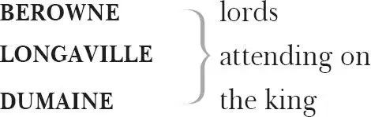
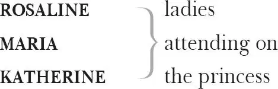

Love's Labour's Lost
Ferdinand KING of Navarre

注：
BEROWNE in Act 4 scene 3 rhymes with 'moon'
Don Adriano de ARMADO , a Spanish braggart
MOTH 1 , a boy, his page
COSTARD , a clown
JAQUENETTA 2 , a dairymaid
Anthony DULL , a constable
Sir NATHANIEL , a curate
HOLOFERNES , a pedantic schoolmaster
The PRINCESS of France

BOYET , a lord attending on the princess
Monsieur MARCADÉ , a messenger from the King of France
A FORESTER
Lords, Ladies, Attendants
Act 1
Scene 1 3 / running scene 1
Enter Ferdinand 4 King of Navarre, Berowne, Longaville 5 and Dumaine 6
KING Let fame 7 , that all hunt after in their lives,
Live registered 8 upon our brazen 9 tombs,
And then grace 10 us in the disgrace 11 of death
When, spite 12 of cormorant 13 devouring time,
Th'endeavour of this present breath 14 may buy
That honour which shall bate 15 his 16 scythe's keen 17 edge
And make us heirs of all eternity.
Therefore, brave conquerors — for so you are,
That war against your own affections 18
And the huge army of the world's desires —
Our late 19 edict shall strongly stand in force 20 .
Navarre 21 shall be the wonder of the world,
Our court shall be a little academe 22 ,
Still and contemplative in 23 24 living art 25 .
You three, Berowne, Dumaine and Longaville,
Have sworn for three years' term 26 to live with me,
My fellow-scholars, and to keep 27 those statutes
That are recorded in this schedule 28 here.
Shows a paper
Your oaths are passed 29 , and now subscribe 30 your names,
That his own hand 31 may strike his honour down
That violates the smallest branch 32 herein.
If you are armed 33 to do as sworn to do,
Subscribe to your deep 34 oaths, and keep it 35 too.
LONGAVILLE I am resolved: 'tis but a three years' fast.
The mind shall banquet though the body pine 36 .
Signs
Fat paunches have lean pates 37 , and dainty bits 38
Make rich the ribs, but bankrupt quite the wits.
DUMAINE My loving lord, Dumaine is mortified 39 .
The grosser 40 manner of these world's delights
He throws upon the gross 41 world's baser slaves 42 .
Signs
To love, to wealth, to pomp, I pine and die,
With all these living in 43 philosophy.
BEROWNE I can but say their protestation over 44 .
So much, dear liege, I have already sworn,
That is, to live and study here three years.
But there are other strict observances 45 ,
As 46 not to see a woman in that term,
Which I hope well is not enrollèd 47 there.
And one day in a week to touch no food,
And but one meal on every day beside,
The which I hope is not enrollèd there.
And then to sleep but three hours in the night,
And not be seen to wink 48 of all the day —
When I was wont 49 to think no harm 50 all night
And make a dark night too of half the day —
Which I hope well is not enrollèd there.
O, these are barren tasks, too hard to keep:
Not to see ladies, study, fast, not sleep.
KING Your oath is passed to pass away from 51 these.
BEROWNE Let me say no, my liege, an if 52 you please.
I only swore to study with your grace
And stay here in your court for three years' space 53 .
LONGAVILLE You swore to that, Berowne, and to the rest.
BEROWNE By yea and nay 54 , sir, then I swore in jest.
What is the end 55 of study, let me know?
KING Why, that to know which else we should not know.
BEROWNE Things hid and barred, you mean, from common sense 56 ?
KING Ay, that is study's godlike recompense 57 .
BEROWNE Come on 58 then, I will swear to study so,
To know the thing I am forbid to know:
As thus, to study where I well may dine,
When I to feast expressly am forbid.
Or study where to meet some mistress fine,
When mistresses from common sense are hid.
Or, having sworn too hard-a-keeping oath 59 ,
Study to break it and not break my troth 60 .
If study's gain be thus and this be so,
Study knows that which yet it doth not know.
Swear me to this, and I will ne'er say no.
KING These be the stops 61 that hinder study quite 62
And train 63 our intellects to vain 64 delight.
BEROWNE Why, all delights are vain, and that most vain,
Which with pain 65 purchased 66 doth inherit 67 pain:
As 68 painfully to pore upon a book
To seek the light of truth, while 69 truth the while
Doth falsely 70 blind the eyesight of his look 71 .
Light 72 seeking light 73 doth light of light beguile 74 :
So, ere 75 you find where light in darkness 76 lies,
Your light grows dark by losing of your eyes.
Study me 77 how to please the eye indeed
By fixing it upon a fairer 78 eye,
Who dazzling 79 so, that eye 80 shall be his heed 81
And give him light that it was blinded by.
Study is like the heaven's glorious sun
That will not be deep-searched with saucy 82 looks:
Small 83 have continual plodders ever won
Save 84 base 85 authority from others' books.
These earthly godfathers of heaven's lights 86 ,
That give a name to every fixèd star,
Have no more profit of 87 their shining 88 nights
Than those that walk and wot 89 not what they 90 are.
Too much to know is to know nought but fame 91 ,
And every godfather 92 can give a name.
KING How well he's read, to reason against reading.
DUMAINE Proceeded 93 well, to stop all good proceeding 94 .
LONGAVILLE He weeds 95 the corn, and still lets grow the weeding 96 .
BEROWNE The spring is near when green geese 97 are a-breeding.
DUMAINE How follows that?
BEROWNE Fit in his 98 place and time.
DUMAINE In reason nothing 99 .
BEROWNE Something then in rhyme 100 .
KING Berowne is like an envious 101 sneaping 102 frost
That bites the first-born infants 103 of the spring.
BEROWNE Well, say I am. Why should proud 104 summer boast
Before the birds have any cause to sing?
Why should I joy in any abortive 105 birth?
At Christmas I no more desire a rose
Than wish a snow in May's new-fangled shows 106 ,
But like of 107 each thing that in season 108 grows.
So you, to study now it is too late 109 ,
That were to climb o'er the house to unlock the gate 110 .
KING Well, sit you out 111 . Go home, Berowne, adieu.
BEROWNE No, my good lord, I have sworn to stay with you.
And though I have for barbarism 112 spoke more
Than for that angel knowledge you can say,
Yet confident I'll keep what I have sworn
And bide 113 the penance of each three years' day 114 .
Give me the paper, let me read the same,
And to the strict'st decrees I'll write my name.
Takes the paper
KING How well this yielding rescues thee from shame.
BEROWNE 'Item , That no woman shall come within a mile of my court.' Hath this been proclaimed?
Reads
LONGAVILLE Four days ago.
BEROWNE Let's see the penalty: 'On pain of losing her tongue.' Who devised this penalty?
LONGAVILLE Marry 115 , that did I.
BEROWNE Sweet lord, and why?
LONGAVILLE To fright them hence 116 with that dread 117 penalty.
BEROWNE A dangerous law against gentility 118 !
'Item , If any man be seen to talk with a woman within the term of three years, he shall endure such public shame as the rest of the court shall possibly devise.'
Reads
This article 119 , my liege, yourself must break,
For well you know here comes in embassy 120
The French king's daughter with yourself to speak —
A maid of grace and complete 121 majesty —
About surrender up of Aquitaine 122
To her decrepit, sick and bedrid father:
Therefore this article is made in vain,
Or vainly 123 comes th'admirèd princess hither.
KING What say you, lords? Why, this was quite forgot.
BEROWNE So study evermore is overshot 124 .
While it doth study to have what it would 125 ,
It doth forget to do the thing it should:
And when it hath the thing it hunteth most,
'Tis won as towns with fire, so won, so lost 126 .
KING We must of force 127 dispense with this decree.
She must lie 128 here on mere 129 necessity.
BEROWNE Necessity will make us all forsworn 130
Three thousand times within this three years' space,
For every man with his affects 131 is born,
Not by might 132 mastered but by special grace 133 .
If I break faith, this word 134 shall speak for me:
I am forsworn 'on mere necessity'.
So to the laws at large 135 I write my name,
Signs
And he that breaks them in the least degree
Stands in attainder 136 of eternal shame.
Suggestions are to others as to me 137 :
But I believe, although I seem so loath,
I am the last that will last keep his oath 138 .
But is there no quick 139 recreation granted?
KING Ay, that there is. Our court, you know, is haunted
With 140 a refinèd traveller of Spain,
A man in all the world's new fashion planted 141 ,
That hath a mint 142 of phrases in his brain,
One who the music of his own vain tongue
Doth ravish like enchanting harmony,
A man of compliments 143 , whom right and wrong
Have chose as umpire of their mutiny 144 .
This child of fancy 145 , that Armado hight 146 ,
For interim 147 to our studies shall relate
In high-born 148 words the worth of many a knight
From tawny 149 Spain lost in the world's debate 150 .
How you delight 151 , my lords, I know not, I,
But I protest I love to hear him lie,
And I will use him for my minstrelsy 152 .
BEROWNE Armado is a most illustrious wight 153 ,
A man of fire-new words, fashion's own knight.
LONGAVILLE Costard 154 the swain 155 and he 156 shall be our sport 157 ,
And so to study three years is but short.
Enter a constable [Dull ] with a letter, with Costard
DULL Which is the duke's 158 own person?
BEROWNE This, fellow. What wouldst?
DULL I myself reprehend 159 his own person, for I am his grace's tharborough 160 . But I would see his own person in flesh and blood.
BEROWNE This is he.
DULL Signior Arme ... Arme ... commends you 161 . There's villainy abroad 162 .
This letter will tell you more.
Shows a letter
COSTARD Sir, the contempts 163 thereof are as touching 164 me.
KING A letter from the magnificent 165 Armado.
BEROWNE How low soever the matter 166 , I hope in God for high 167 words.
LONGAVILLE A high hope 168 for a low heaven 169 . God grant us patience.
BEROWNE To hear, or forbear 170 hearing?
LONGAVILLE To hear meekly, sir, and to laugh moderately, or to forbear both.
BEROWNE Well, sir, be it 171 as the style 172 shall give us cause to climb in the merriness.
COSTARD The matter is to 173 me, sir, as concerning Jaquenetta. The manner 174 of it is, I was taken with the manner 175 .
BEROWNE In what manner?
COSTARD In manner and form following 176 , sir, all those three 177 . I was seen with her in the manor-house, sitting with her upon the form 178 , and taken following her into the park 179 , which, put together, is 'in manner 180 and form following'. Now, sir, for the manner: it is the manner of a man to speak to a woman. For the form: in some form.
BEROWNE For the 'following', sir?
COSTARD As it shall follow in my correction 181 , and God defend the right 182 !
KING Will you hear this letter with attention?
BEROWNE As we would hear an oracle.
COSTARD Such is the simplicity 183 of man to hearken after the flesh.
KING 'Great deputy, the welkin's 184 vicegerent 185 and sole dominator 186 of Navarre, my soul's earth's god, and body's fostering 187 patron'—
Reads
COSTARD Not a word of Costard yet.
KING 'So it is'—
Reads
COSTARD It may be so: but if he say it is so, he is, in telling true, but so 188 .
KING Peace!
COSTARD Be 189 to me and every man that dares not fight.
KING No words!
COSTARD Of other men's secrets 190 , I beseech you.
KING 'So it is, besieged with sable-coloured 191 melancholy, I did commend 192 the black oppressing humour 193 194 to the most wholesome physic 195 of thy health-giving air, and, as I am 196 a gentleman, betook myself to walk. The time, when? About the sixth hour, when beasts most graze, birds best peck, and men sit down to that nourishment which is called supper: so much for the time when. Now for the ground, which? Which, I mean, I walked upon. It is ycleped 197 thy park. Then for the place, where? Where, I mean, I did encounter that obscene 198 and most preposterous 199 event that draweth from my snow-white pen 200 the ebon-coloured 201 ink, which here thou viewest, beholdest, surveyest, or seest. But to the place, where? It standeth north-north-east and by east from the west corner of thy curious-knotted 202 garden; there did I see that low-spirited 203 swain, that base minnow of thy mirth 204 '—
Reads
COSTARD Me?
KING 'That unlettered 205 small-knowing soul'—
Reads
COSTARD Me?
KING 'That shallow vassal 206 '—
Reads
COSTARD Still me?
KING 'Which, as I remember, hight Costard'—
Reads
COSTARD O, me!
KING 'Sorted 207 and consorted 208 , contrary to thy established proclaimed edict and continent canon 209 , which with — O, with — but with this I passion 210 to say wherewith 211 '—
Reads
COSTARD With a wench.
KING 'With a child of our grandmother Eve, a female, or, for thy more sweet understanding, a woman. Him I (as my ever-esteemed duty pricks 212 me on) have sent to thee, to receive the meed 213 of punishment, by thy sweet grace's officer, Anthony Dull, a man of good repute, carriage 214 , bearing, and estimation 215 .'
Reads
DULL Me, an't 216 shall please you. I am Anthony Dull.
KING 'For Jaquenetta—so is the weaker vessel 217 called which I apprehended with the aforesaid swain — I keep 218 her as a vessel of the law's fury, and shall, at the least of thy sweet notice 219 , bring her to trial 220 . Thine, in all compliments of devoted and heart-burning heat of duty. Don Adriano de Armado.'
Reads
BEROWNE This is not so well as I looked for 221 , but the best that ever I heard.
KING Ay, the best for 222 the worst. But, sirrah 223 , what say you to this?
COSTARD Sir, I confess 224 the wench.
KING Did you hear the proclamation?
COSTARD I do confess much of the hearing it but little of the marking of 225 it.
KING It was proclaimed a year's imprisonment to be taken with a wench.
COSTARD I was taken with none, sir: I was taken with a damsel.
KING Well, it was proclaimed damsel.
COSTARD This was no damsel, neither, sir: she was a virgin.
KING It is so varied 226 too, for it was proclaimed virgin.
COSTARD If it were, I deny her virginity: I was taken with a maid.
KING This maid 227 will not serve your turn 228 , sir.
COSTARD This maid will serve my turn, sir.
KING Sir, I will pronounce your sentence: you shall fast a week with bran and water.
COSTARD I had rather pray 229 a month with mutton and porridge 230 .
KING And Don Armado shall be your keeper.
My Lord Berowne, see him delivered o'er 231 :
And go we, lords, to put in practice that
Which each to other hath so strongly sworn.
[Exeunt King, Longaville and Dumaine ]
BEROWNE I'll lay 232 my head to any goodman 233 's hat,
These oaths and laws will prove an idle 234 scorn.
Sirrah, come on.
COSTARD I suffer for the truth, sir, for true 235 it is, I was taken with Jaquenetta, and
Jaquenetta is a true girl. And therefore welcome the sour cup of prosperity 236 !
Affliction 237 may one day smile again, and until then, sit down 238 , sorrow!
Exeunt
Scene 2 / running scene 1 continues
Enter Armado and Moth 239 , his page
ARMADO Boy, what sign is it 240 when a man of great spirit grows melancholy?
MOTH A great sign, sir, that he will look sad.
ARMADO Why, sadness is one and the self-same thing, dear imp 241 .
MOTH No, no, O lord, sir, no.
ARMADO How canst thou part 242 sadness and melancholy, my tender 243 juvenal 244 ?
MOTH By a familiar 245 demonstration of the working 246 , my tough señor.
ARMADO Why tough señor? Why tough señor?
MOTH Why tender juvenal? Why tender juvenal?
ARMADO I spoke it, tender juvenal, as a congruent epitheton 247 appertaining 248 to thy young days, which we may nominate 249 tender.
MOTH And I, tough senior, as an appertinent 250 title to your old time, which we may name tough.
ARMADO Pretty 251 and apt.
MOTH How mean you, sir? I pretty, and my saying apt? Or I apt, and my saying pretty?
ARMADO Thou pretty, because little 252 .
MOTH Little pretty, because little. Wherefore apt?
ARMADO And therefore apt, because quick 253 .
MOTH Speak you this in my praise, master?
ARMADO In thy condign 254 praise.
MOTH I will praise an eel with the same praise.
ARMADO What, that an eel is ingenious?
MOTH That an eel is quick 255 .
ARMADO I do say thou art quick in answers. Thou heat'st my blood 256 .
MOTH I am answered, sir.
ARMADO I love not to be crossed 257 .
MOTH He speaks the mere 258 contrary: crosses 259 love not him.
Aside
ARMADO I have promised to study three years with the duke 260 .
MOTH You may do it in an hour, sir.
ARMADO Impossible.
MOTH How many is one thrice told 261 ?
ARMADO I am ill 262 at reckoning 263 . It fits the spirit of a tapster 264 .
MOTH You are a gentleman and a gamester 265 , sir.
ARMADO I confess both: they are both the varnish of a complete 266 man.
MOTH Then I am sure you know how much the gross sum of deuce-ace 267 amounts to.
ARMADO It doth amount to one more than two.
MOTH Which the base vulgar 268 call three.
ARMADO True.
MOTH Why, sir, is this such a piece 269 of study? Now here's three studied ere you'll thrice wink. And how easy it is to put 'years' to the word 'three', and study three years in two words, the dancing horse 270 will tell you.
ARMADO A most fine figure 271 !
MOTH To prove you a cipher 272 .
Aside
ARMADO I will hereupon confess I am in love. And as it is base 273 for a soldier to love, so am I in love with a base wench. If drawing my sword against the humour of affection 274 would deliver me from the reprobate 275 thought of it, I would take desire prisoner, and ransom him to any French courtier for a new-devised curtsy 276 . I think scorn 277 to sigh: methinks I should outswear 278 Cupid 279 . Comfort me, boy. What great men have been in love?
MOTH Hercules 280 , master.
ARMADO Most sweet Hercules! More authority, dear boy, name more; and, sweet my child, let them be men of good repute and carriage 281 .
MOTH Samson 282 , master. He was a man of good carriage 283 , great carriage, for he carried the town-gates on his back like a porter 284 , and he was in love.
ARMADO O well-knit 285 Samson, strong-jointed Samson! I do excel thee in my rapier 286 as much as thou didst me in carrying gates. I am in love too. Who was Samson's love, my dear Moth?
MOTH A woman, master.
ARMADO Of what complexion 287 ?
MOTH Of all the four 288 , or the three, or the two, or one of the four.
ARMADO Tell me precisely of what complexion.
MOTH Of the sea-water green 289 , sir.
ARMADO Is that one of the four complexions?
MOTH As I have read, sir, and the best of them too.
ARMADO Green 290 indeed is the colour of lovers, but to have a love of that colour, methinks Samson had small reason for it. He surely affected 291 her for her wit 292 .
MOTH It was so, sir, for she had a green 293 wit.
ARMADO My love is most immaculate 294 white and red.
MOTH Most maculate thoughts, master, are masked under such colours 295 .
ARMADO Define 296 , define, well-educated infant.
MOTH My father's wit and my mother's tongue assist me!
ARMADO Sweet invocation of a child, most pretty and pathetical 297 !
MOTH If she be made of 298 white and red,
Her faults will ne'er be known,
For blushing cheeks by faults are bred
And fears by pale white shown.
Then if she fear, or be to blame,
By this 299 you shall not know,
For still 300 her cheeks possess the same
Which native 301 she doth owe 302 .
A dangerous rhyme, master, against the reason of white and red 303 .
ARMADO Is there not a ballad, boy, of the King and the Beggar 304 ?
MOTH The world was very guilty of such a ballad some three ages since 305 , but I think now 'tis not to be found, or, if it were, it would neither serve 306 for the writing nor the tune.
ARMADO I will have that subject newly writ o'er, that I may example 307 my digression 308 by some mighty precedent. Boy, I do love that country girl that I took in the park with the rational hind 309 Costard. She deserves well.
MOTH To be whipped 310 : and yet 311 a better love than my master.
Aside
ARMADO Sing, boy. My spirit grows heavy 312 in love.
MOTH And that's great marvel, loving a light 313 wench.
Aside
ARMADO I say sing.
MOTH Forbear till this company be past.
Enter [Costard, the ] Clown 314 , [Dull, the ] Constable and [Jaquenetta, a ] wench
DULL Sir, the duke's pleasure is that you keep Costard safe: and you must let him take no delight nor no penance 315 , but he must fast three days a week. For 316 this damsel, I must keep her at the park: she is allowed for the dey-woman 317 . Fare you well.
Exit
ARMADO I do betray myself with blushing.— Maid!
Aside
JAQUENETTA Man?
ARMADO I will visit thee at the lodge 318 .
JAQUENETTA That's hereby 319 .
ARMADO I know where it is situate.
JAQUENETTA Lord, how wise you are!
ARMADO I will tell thee wonders.
JAQUENETTA With that face 320 ?
ARMADO I love thee.
JAQUENETTA So I heard you say.
ARMADO And so farewell.
JAQUENETTA Fair weather after you.
COSTARD Come, Jaquenetta, away.
Exit [Jaquenetta ]
ARMADO Villain 321 , thou shalt fast for thy offences ere thou be pardoned.
COSTARD Well, sir, I hope, when I do it, I shall do it on a full stomach 322 .
ARMADO Thou shalt be heavily punished.
COSTARD I am more bound 323 to you than your fellows 324 , for they are but lightly 325 rewarded.
ARMADO Take away this villain. Shut him up.
To Moth
MOTH Come, you transgressing slave, away!
COSTARD Let me not be pent up 326 , sir, I will fast being loose 327 .
MOTH No, sir, that were fast and loose 328 . Thou shalt to 329 prison.
COSTARD Well, if ever I do see the merry days of desolation 330 that I have seen, some shall see—
MOTH What shall some see?
COSTARD Nay, nothing, Master Moth, but what they look upon. It is not for prisoners to be too silent 331 in their words and therefore I will say nothing. I thank God I have as little 332 patience as another man and therefore I can be quiet.
[Exeunt Moth and Costard ]
ARMADO I do affect 333 the very ground, which is base, where her shoe, which is baser, guided by her foot, which is basest, doth tread. I shall be forsworn 334 , which is a great argument 335 of falsehood, if I love. And how can that be true love which is falsely attempted? Love is a familiar 336 , love is a devil. There is no evil angel but love. Yet Samson was so tempted, and he had an excellent strength. Yet was Solomon 337 so seduced, and he had a very good wit. Cupid's butt-shaft 338 is too hard for Hercules' club, and therefore too much odds 339 for a Spaniard's rapier. The first and second cause 340 will not serve my turn 341 . The passado 342 he respects not, the duello 343 he regards not. His disgrace is to be called boy, but his glory is to subdue men. Adieu, valour: rust, rapier: be still, drum, for your manager 344 is in love; yea, he loveth.
Assist me, some extemporal god of rhyme 345 , for I am sure I shall turn sonnet 346 .
Devise, wit: write, pen, for 347 I am for whole volumes in folio 348 .
Exit
Act 2
Scene 1 / running scene 2
Enter the Princess of France 349 with three attending Ladies [Rosaline, Maria and Katherine ] and three Lords [Boyet and two others ]
BOYET Now, madam, summon up your dearest 350 spirits 351 .
Consider who the king your father sends,
To whom he sends, and what's his embassy 352 :
Yourself, held precious in the world's esteem,
To parley 353 with the sole inheritor 354
Of all perfections that a man may owe 355 ,
Matchless 356 Navarre, the plea 357 of no less weight
Than Aquitaine, a dowry for a queen.
Be now as prodigal of 358 all dear 359 grace
As Nature was in making graces dear 360
When she did starve 361 the general world beside 362
And prodigally gave them all to you.
PRINCESS Good Lord Boyet, my beauty, though but mean 363 ,
Needs not the painted flourish of your praise.
Beauty is bought by judgement of the eye,
Not uttered 364 by base sale of chapmen's 365 tongues:
I am less proud to hear you tell 366 my worth
Than you much 367 willing to be counted 368 wise
In spending 369 your wit in the praise of mine.
But now to task 370 the tasker 371 . Good Boyet,
You are not ignorant 372 all-telling fame 373
Doth noise abroad 374 Navarre hath made a vow,
Till painful 375 study shall outwear three years,
No woman may approach his silent court:
Therefore to's seemeth it 376 a needful 377 course,
Before we enter his forbidden gates,
To know his pleasure 378 , and in that behalf 379 ,
Bold 380 of your worthiness, we single 381 you
As our best-moving 382 fair 383 solicitor 384 .
Tell him the daughter of the King of France,
On serious business craving quick dispatch,
Importunes 385 personal conference 386 with his grace.
Haste, signify so much, while we attend 387 ,
Like humble-visaged suitors, his high will.
BOYET Proud of 388 employment, willingly 389 I go.
Exit
PRINCESS All pride 390 is willing pride, and yours is so.
Who are the votaries 391 , my loving lords,
That are vow-fellows with this virtuous duke?
A LORD Longaville is one.
PRINCESS Know you the man?
MARIA I know him, madam: at a marriage-feast
Between Lord Perigort 392 and the beauteous heir 393
Of Jaques Falconbridge, solemnized
In Normandy 394 , saw I this Longaville.
A man of sovereign parts 395 he is esteemed,
Well fitted 396 in arts 397 , glorious in arms 398 .
Nothing becomes him ill that he would well 399 .
The only soil 400 of his fair virtue's gloss 401 ,
If virtue's gloss will 402 stain with any soil,
Is a sharp wit matched with too blunt a will,
Whose edge hath power to cut, whose will still 403 wills
It should none spare that come within his 404 power.
PRINCESS Some merry mocking lord, belike 405 : is't so?
MARIA They say so most that most his humours 406 know.
PRINCESS Such short-lived wits do wither as they grow.
Who are the rest?
KATHERINE The young Dumaine, a well-accomplished youth,
Of 407 all that virtue 408 love for virtue loved:
Most power to do most harm, least knowing ill 409 ,
For he hath wit to make an ill shape good 410 ,
And shape 411 to win grace though 412 he had no wit.
I saw him at the Duke Alençon 413 's once,
And much too little of that good I saw
Is my report to his great worthiness 414 .
ROSALINE Another of these students at that time
Was there with him, if I have heard a truth.
Berowne they call him, but a merrier man,
Within the limit of becoming 415 mirth,
I never spent an hour's talk withal 416 .
His eye begets 417 occasion 418 for his wit,
For every object that the one doth catch 419 ,
The other turns to a mirth-moving 420 jest,
Which his fair tongue, conceit's expositor 421 ,
Delivers in such apt and gracious words
That agèd ears play truant at 422 his tales
And younger hearings are quite ravishèd,
So sweet and voluble 423 is his discourse.
PRINCESS God bless my ladies! Are they all in love,
That every one her own hath garnishèd
With such bedecking 424 ornaments of praise?
MARIA Here comes Boyet.
Enter Boyet
PRINCESS Now, what admittance 425 , lord?
BOYET Navarre had notice of your fair approach,
And he and his competitors 426 in oath
Were all addressed 427 to meet you, gentle lady,
Before I came. Marry, thus much I have learned:
He rather means to lodge 428 you in the field 429 ,
Like one that comes here to besiege his court,
Than seek a dispensation for his oath
To let you enter his unpeopled 430 house.
Here comes Navarre.
Enter [the King of ] Navarre, Longaville, Dumaine, Berowne [and Attendants ]
KING Fair princess, welcome to the court 431 of Navarre.
PRINCESS 'Fair' I give you back again, and 'welcome' I have not yet: the roof of this court is too high to be yours, and welcome to the wide fields too base to be mine.
KING You shall be welcome, madam, to my court.
PRINCESS I will be welcome, then. Conduct me thither.
KING Hear me, dear lady: I have sworn an oath.
PRINCESS Our Lady help my lord! He'll be forsworn.
KING Not for the world, fair madam, by my will 432 .
PRINCESS Why, will 433 shall break it: will, and nothing else.
KING Your ladyship is ignorant what it is.
PRINCESS Were my lord so, his ignorance were wise,
Where 434 now his knowledge must prove ignorance.
I hear your grace hath sworn out house-keeping 435 .
'Tis deadly sin to keep that oath, my lord,
And sin to break it.
But pardon me. I am too sudden-bold:
To teach a teacher ill beseemeth 436 me.
Vouchsafe 437 to read the purpose of my coming,
Gives a paper
And suddenly 438 resolve me in my suit 439 .
KING Madam, I will, if suddenly I may.
Reads
PRINCESS You will the sooner that I were away 440 ,
For you'll prove perjured if you make me stay.
BEROWNE Did not I dance with you in Brabant 441 once?
To Rosaline
ROSALINE Did not I dance with you in Brabant once?
BEROWNE I know you did.
ROSALINE How needless was it then to ask the question!
BEROWNE You must not be so quick 442 .
ROSALINE 'Tis long 443 of you that spur me with such questions.
BEROWNE Your wit's too hot 444 , it speeds too fast, 'twill tire.
ROSALINE Not till it leave the rider in the mire 445 .
BEROWNE What time o'day 446 ?
ROSALINE The hour that fools should ask.
BEROWNE Now fair befall your mask 447 .
ROSALINE Fair fall 448 the face it covers.
BEROWNE And send you many lovers.
ROSALINE Amen, so 449 you be none.
BEROWNE Nay, then will I be gone.
Walks away
To the Pringcess
KING Madam, your father here doth intimate 450
The payment of a hundred thousand crowns,
Being but th'one half of an entire sum
Disbursèd 451 by my father in his 452 wars.
But say that he 453 or we, as neither have 454 ,
Received that sum, yet there remains unpaid
A hundred thousand more, in surety 455 of the which,
One part of Aquitaine is bound 456 to us,
Although not valued to 457 the money's worth.
If then the king your father will restore 458
But that one half which is unsatisfied 459 ,
We will give up our right in Aquitaine
And hold fair friendship with his majesty.
But that, it seems, he little purposeth 460 ,
For here he doth demand to have repaid 461
An hundred thousand crowns 462 , and not demands,
On payment of a hundred thousand crowns,
To have his title live in 463 Aquitaine,
Which we much rather had depart withal 464 ,
And have the money by our father lent,
Than Aquitaine, so gelded 465 as it is.
Dear princess, were not his requests so far
From reason's yielding, your fair self should make
A yielding gainst some reason 466 in my breast
And go well satisfied to France again.
PRINCESS You do the king my father too much wrong
And wrong the reputation of your name,
In so unseeming 467 to confess receipt
Of that which hath so faithfully been paid.
KING I do protest I never heard of it.
And if you prove it, I'll repay it back
Or yield up Aquitaine.
PRINCESS We arrest 468 your word 469 .
Boyet, you can produce acquittances 470
For such a sum from special officers
Of Charles, his 471 father.
KING Satisfy me so 472 .
BOYET So please your grace, the packet is not come
Where that and other specialties 473 are bound.
Tomorrow you shall have a sight of them.
KING It shall suffice me; at which interview,
All liberal reason 474 would I yield unto.
Meantime receive such welcome at my hand
As honour without breach of honour 475 may
Make tender of 476 to thy true worthiness.
You may not come, fair princess, in my gates,
But here without 477 you shall be so received
As 478 you shall deem yourself lodged in my heart,
Though so denied fair harbour in my house.
Your 479 own good thoughts excuse me, and farewell:
Tomorrow we shall visit you again.
PRINCESS Sweet health and fair desires consort 480 your grace.
KING Thy own wish wish I thee in every place! 481
Exit [the King, with Longaville and Dumaine ]
BEROWNE Lady, I will commend you to my own heart.
ROSALINE Pray you, do my commendations 482 , I would be glad to see it.
BEROWNE I would you heard it groan.
ROSALINE Is the fool 483 sick?
BEROWNE Sick at the heart.
ROSALINE Alack, let it blood 484 .
BEROWNE Would that do it good?
ROSALINE My physic 485 says 'ay'.
BEROWNE Will you prick't with your eye 486 ?
ROSALINE Non point 487 , with my knife.
BEROWNE Now, God save thy life!
ROSALINE And yours from long living!
BEROWNE I cannot stay thanksgiving 488 .
Exit
Enter Dumaine
DUMAINE Sir, I pray you a word: what lady is that same?
To Boyet
BOYET The heir of Alençon, Katherine 489 her name.
DUMAINE A gallant 490 lady. Monsieur, fare you well.
[Exit ]
[Enter Longaville ]
LONGAVILLE I beseech you a word: what is she in the white?
To Boyet
BOYET A woman sometimes, if you saw her in the light.
LONGAVILLE Perchance light in the light 491 . I desire her name.
BOYET She hath but one for herself, to desire 492 that were a shame.
LONGAVILLE Pray you, sir, whose daughter?
BOYET Her mother's, I have heard.
LONGAVILLE God's blessing o'your beard!
BOYET Good sir, be not offended.
She is an heir of Falconbridge.
LONGAVILLE Nay, my choler 493 is ended.
She is a most sweet lady.
Exit Longaville
BOYET Not unlike 494 , sir, that may be.
Enter Berowne
BEROWNE What's her name in the cap?
BOYET Rosaline 495 , by good hap 496 .
BEROWNE Is she wedded or no?
BOYET To her will, sir, or so 497 .
BEROWNE You are welcome, sir. Adieu.
BOYET Farewell to me, sir, and welcome to you 498 .
Exit [Berowne ]
MARIA That last is Berowne, the merry madcap lord.
Not a word 499 with him but a jest.
BOYET And every jest but a word.
PRINCESS It was well done of you to take him at his word.
BOYET I was as willing to grapple 500 as he was to board 501 .
MARIA Two hot 502 sheeps 503 , marry.
BOYET And wherefore not 'ships'?
No sheep, sweet lamb, unless we feed on your lips.
MARIA You sheep, and I pasture 504 . Shall that finish the jest?
BOYET So 505 you grant pasture for me.
Tries to kiss her
MARIA Not so, gentle beast.
My lips are no common 506 , though several 507 they be.
BOYET Belonging to whom?
MARIA To my fortunes and me.
PRINCESS Good wits will be jangling 508 ; but, gentles 509 , agree.
This civil 510 war of wits were much better used
On Navarre and his bookmen 511 , for here 'tis abused 512 .
BOYET If my observation — which very seldom lies
By 513 the heart's still 514 rhetoric disclosèd with eyes —
Deceive me not now, Navarre is infected.
PRINCESS With what?
BOYET With that which we lovers entitle affected 515 .
PRINCESS Your reason?
BOYET Why, all his behaviours did make their retire 516
To the court 517 of his eye, peeping thorough 518 desire.
His heart, like an agate 519 , with your print 520 impressed 521 ,
Proud 522 with his form 523 , in his eye pride expressed.
His tongue, all impatient to speak and not see 524 ,
Did stumble with haste in his eyesight to be.
All senses to that sense 525 did make their repair 526 ,
To feel only looking on fairest of fair.
Methought all his senses were locked in his eye,
As jewels in crystal 527 for some prince to buy,
Who, tend'ring 528 their own worth from whence they were glassed 529 ,
Did point 530 out to buy them along as you passed.
His face's own margin 531 did quote 532 such amazes
That all eyes saw his eyes enchanted with gazes.
I'll give you Aquitaine, and all that is his,
An 533 you give him for my sake but one loving kiss.
PRINCESS Come to our pavilion 534 . Boyet is disposed 535 .
BOYET But 536 to speak that in words which his eye hath disclosed.
I only have made a mouth of his eye,
By adding a tongue which I know will not lie.
ROSALINE Thou art an old love-monger and speakest skilfully.
MARIA He is Cupid's grandfather and learns news of him.
KATHERINE Then was Venus 537 like her mother, for her father 538 is but grim 539 .
BOYET Do you hear, my mad 540 wenches?
MARIA No.
BOYET What then, do you see?
KATHERINE Ay, our way to be gone.
BOYET You are too hard 541 for me.
Exeunt
Act 3
Scene 1 / running scene 3
Enter Braggart [Armado ] and [his ] Boy [Moth, singing a ] song
ARMADO Warble, child, make passionate my sense of hearing.
MOTH Concolinel 542 .
Sings
ARMADO Sweet air 543 ! Go, tenderness of years, take this key, give enlargement 544 to the swain, bring him festinately 545 hither. I must employ him in a letter to my love.
MOTH Master, will you win your love with a French brawl 546 ?
ARMADO How meanest thou? Brawling 547 in French?
MOTH No, my complete master: but to jig off a tune 548 at the tongue's end, canary 549 to it with your feet, humour 550 it with turning up your eyelids, sigh a note and sing a note, sometime through the throat, if you swallowed love with singing love, sometime through the nose as if you snuffed up love by smelling love, with your hat penthouse-like 551 o'er the shop of your eyes, with your arms crossed on your thin-belly doublet 552 like a rabbit on a spit, or your hands in your pocket like a man after 553 the old painting, and keep not too long in one tune, but a snip and away 554 . These are compliments 555 , these are humours 556 , these betray 557 nice 558 wenches that would be betrayed without these and make them men of note 559 — do you note 560 , men 561 ? — that most are affected 562 to these.
ARMADO How hast thou purchased 563 this experience?
MOTH By my penny of observation.
ARMADO But O, but O—
MOTH 'The hobby-horse is forgot.' 564
ARMADO Callest thou my love 'hobby-horse 565 '?
MOTH No, master. The hobby-horse is but a colt 566 , and your love perhaps, a hackney 567 . But have you forgot your love?
ARMADO Almost I had.
MOTH Negligent student! Learn her by heart.
ARMADO By heart and in heart, boy.
MOTH And out of heart, master: all those three I will prove 568 .
ARMADO What wilt thou prove?
MOTH A man, if I live, and this, 'by', 'in', and 'without', upon the instant: 'by' heart you love her, because your heart cannot come by 569 her. 'In' heart you love her, because your heart is in love with her. And 'out' of heart you love her, being out of heart 570 that you cannot enjoy her.
ARMADO I am all these three.
MOTH And three times as much more, and yet nothing at all.
ARMADO Fetch hither the swain. He must carry me 571 a letter.
MOTH A message well sympathized 572 : a horse to be ambassador for an ass.
ARMADO Ha, ha, what sayest thou?
MOTH Marry, sir, you must send the ass upon the horse, for he is very slow- gaited 573 . But I go.
ARMADO The way is but short. Away!
MOTH As swift as lead, sir.
ARMADO Thy meaning, pretty ingenious 574 ? Is not lead a metal heavy, dull and slow?
MOTH Minime 575 , honest master, or rather, master, no.
ARMADO I say lead is slow.
MOTH You are too swift, sir, to say so.
Is that lead slow which is fired from a gun?
ARMADO Sweet smoke of rhetoric!
He reputes me a cannon; and the bullet, that's he.
I shoot thee at the swain.
MOTH Thump 576 then, and I flee.
[Exit ]
ARMADO A most acute 577 juvenal, voluble and free of grace 578 !
By thy favour, sweet welkin 579 , I must sigh in thy face.
Most rude melancholy, valour gives thee place 580 .
My herald is returned.
Enter Page [Moth ] and Clown [Costard ]
MOTH A wonder, master! Here's a costard 581 broken in a shin.
ARMADO Some enigma, some riddle: come, thy l'envoy 582 , begin.
COSTARD No egma 583 , no riddle, no l'envoy, no salve 584 in the mail 585 , sir. O, sir, plantain 586 , a plain plantain! No l'envoy, no l'envoy, no salve, sir, but a plantain!
ARMADO By virtue 587 , thou enforcest laughter: thy silly 588 thought, my spleen 589 . The heaving of my lungs provokes me to ridiculous 590 smiling. O, pardon me, my stars!
Doth the inconsiderate 591 take salve 592 for l'envoy, and the word 'l'envoy' for a salve?
MOTH Do the wise think them other? Is not l'envoy a salve?
ARMADO No, page: it is an epilogue or discourse, to make plain
Some obscure precedence 593 that hath tofore 594 been sain 595 .
Now will I begin your moral, and do you follow with my l'envoy:
The fox, the ape, and the humble-bee 596
Were still 597 at odds 598 , being but three.
Until the goose came out of door,
Staying the odds 599 by adding four 600 .
MOTH A good l'envoy, ending in the goose 601 . Would you desire more?
COSTARD The boy hath sold him a bargain 602 , a goose, that's flat 603 .
Sir, your pennyworth is good 604 , an 605 your goose be fat.
To sell a bargain well is as cunning as fast and loose 606 .
Let me see: a fat l'envoy — ay, that's a fat goose.
ARMADO Come hither, come hither. How did this argument 607 begin?
MOTH By saying that a costard was broken in a shin.
Then called you for the l'envoy.
COSTARD True, and I for a plantain: thus came your argument in.
Then the boy's fat l'envoy, the goose that you bought,
And he ended the market 608 .
ARMADO But tell me, how was there a costard broken in a shin?
MOTH I will tell you sensibly 609 .
COSTARD Thou hast no feeling 610 of it, Moth. I will speak that l'envoy:
I Costard, running out, that was safely within,
Fell over the threshold 611 and broke my shin.
ARMADO We will talk no more of this matter 612 .
COSTARD Till there be more matter in the shin.
ARMADO Sirrah Costard, I will enfranchise 613 thee.
COSTARD O, marry me to one Frances 614 : I smell some l'envoy, some goose 615 in this.
ARMADO By my sweet soul, I mean setting thee at liberty, enfreedoming thy person.
Thou wert immured 616 , restrained, captivated, bound.
COSTARD True, true, and now you will be my purgation 617 and let me loose 618 .
ARMADO I give thee thy liberty, set thee from durance 619 , and in lieu 620 thereof impose on thee nothing but this: bear this significant 621 to the country maid Jaquenetta. There is remuneration 622 , for the best ward 623 of mine honours is rewarding my dependants 624 . Moth, follow.
Gives a letter
Gives money
[Exit ]
MOTH Like the sequel 625 , I. Signior Costard, adieu.
Exit
COSTARD My sweet ounce of man's flesh, my incony 626 Jew 627 ! Now will I look to his remuneration. 'Remuneration' — O, that's the Latin word for three farthings 628 .
Three farthings — remuneration. 'What's the price of this inkle 629 ?' 'One penny.'
'No, I'll give you a remuneration.' Why, it carries it 630 . 'Remuneration.' Why, it is a fairer name than French crown 631 . I will never buy and sell out of 632 this word.
Enter Berowne
BEROWNE O, my good knave Costard, exceedingly well met.
COSTARD Pray you, sir, how much carnation 633 ribbon may a man buy for a remuneration?
BEROWNE What is a remuneration?
COSTARD Marry, sir, halfpenny farthing 634 .
BEROWNE O, why then three farthings worth of silk.
COSTARD I thank your worship. God be wi'you!
Starts to leave
BEROWNE O, stay, slave 635 , I must employ thee:
As thou wilt win my favour, good my knave 636 ,
Do one thing for me that I shall entreat.
COSTARD When would you have it done, sir?
BEROWNE O, this afternoon.
COSTARD Well, I will do it, sir. Fare you well.
BEROWNE O, thou knowest not what it is.
COSTARD I shall know, sir, when I have done it.
BEROWNE Why, villain 637 , thou must know first.
COSTARD I will come to your worship tomorrow morning.
BEROWNE It must be done this afternoon.
Hark, slave, it is but this:
The princess comes to hunt here in the park,
And in her train 638 there is a gentle lady,
When tongues speak sweetly, then they name her name,
And Rosaline they call her. Ask for her
And to her white hand see thou do commend 639
Gives a letter and mone
This sealed-up counsel 640 . There's thy guerdon 641 : go.
COSTARD Gardon 642 , O sweet gardon! Better than remuneration, a'leven-pence-farthing better 643 . Most sweet gardon! I will do it, sir, in print 644 . Gardon!
Remuneration!
Exit
BEROWNE O and I, forsooth, in love! I, that have been love's whip,
A very beadle 645 to a humorous 646 sigh,
A critic, nay, a night-watch constable,
A domineering pedant 647 o'er the boy,
Than 648 whom no mortal so magnificent 649 !
This wimpled 650 , whining, purblind 651 , wayward boy,
This Signior Junior, giant-dwarf, Don Cupid,
Regent 652 of love-rhymes, lord of folded arms,
Th'anointed sovereign of sighs and groans,
Liege of all loiterers and malcontents,
Dread 653 prince of plackets, king of codpieces,
Sole imperator 654 and great general
Of trotting paritors 655 — O my little heart! —
And I to be a corporal of his field 656
And wear his colours 657 like a tumbler's hoop 658 .
What? I love, I sue 659 , I seek a wife?
A woman that is like a German clock 660 ,
Still a-repairing 661 , ever out of frame 662 ,
And never going aright 663 , being 664 a watch,
But being watched that it may still go right!
Nay, to be perjured, which is worst of all,
And, among three, to love the worst of all;
A whitely 665 wanton 666 with a velvet brow 667 ,
With two pitch-balls 668 stuck in her face for eyes.
Ay, and by heaven, one that will do the deed 669
Though 670 Argus 671 were her eunuch 672 and her guard.
And I to sigh for her, to watch 673 for her,
To pray for her! Go to 674 , it is a plague
That Cupid will impose for my neglect 675
Of his almighty dreadful little might.
Well, I will love, write, sigh, pray, sue and groan.
Some men must love my lady, and some Joan 676 .
[Exit ]
Act 4
Scene 1 / running scene 4
Enter the Princess, a Forester [with a bow ], her Ladies [Rosaline, Maria and Katherine ] and her Lords [Boyet and others ]
PRINCESS Was that the king that spurred his horse so hard
Against the steep uprising of the hill?
BOYET I know not, but I think it was not he.
PRINCESS Whoe'er a was, a 677 showed a mounting 678 mind.
Well, lords, today we shall have our dispatch 679 :
On Saturday we will return to France.
Then, forester, my friend, where is the bush
That we must stand and play the murderer in?
FORESTER Hereby, upon the edge of yonder coppice 680 ,
A stand 681 where you may make the fairest 682 shoot.
PRINCESS I thank my beauty, I am fair that shoot,
And thereupon thou speak'st the fairest shoot.
FORESTER Pardon me, madam, for I meant not so.
PRINCESS What, what? First praise me and again 683 say no?
O short-lived pride! Not fair? Alack for woe!
FORESTER Yes, madam, fair.
PRINCESS Nay, never paint 684 me now.
Where fair 685 is not, praise cannot mend the brow 686 .
Here, good my glass 687 , take this for telling true:
Gives money
Fair payment for foul words is more than due.
FORESTER Nothing but fair is that which you inherit 688 .
PRINCESS See see, my beauty will be saved by merit 689 .
O heresy in fair 690 , fit for these days!
A giving hand, though foul, shall have fair praise 691 .
But come, the bow. Now mercy 692 goes to kill,
Takes a bow
And shooting well is then 693 accounted ill.
Thus will I save my credit 694 in the shoot:
Not wounding, pity would not let me do't 695 .
If wounding, then it was to show my skill,
That more for praise than purpose meant to kill.
And out of 696 question so it is sometimes,
Glory 697 grows guilty of detested crimes,
When for fame's sake, for praise, an outward part 698 ,
We bend to that the working of the heart.
As 699 I for praise alone now seek to spill
The poor deer's blood that my heart means no ill 700 .
BOYET Do not curst 701 wives hold that self-sovereignty 702
Only for praise' sake, when they strive to be
Lords o'er their lords?
PRINCESS Only for praise, and praise we may afford
To any lady that subdues a lord.
Enter Clown [Costard, with a letter ]
BOYET Here comes a member of the commonwealth 703 .
COSTARD God dig-you-den 704 all! Pray you which is the head lady?
PRINCESS Thou shalt know her, fellow, by the rest that have no heads 705 .
COSTARD Which is the greatest lady, the highest?
PRINCESS The thickest 706 and the tallest.
COSTARD The thickest and the tallest. It is so, truth is truth.
An your waist, mistress, were as slender as my wit,
One o'these maids' girdles for your waist should be fit.
Are not you the chief woman? You are the thickest here.
PRINCESS What's your will, sir? What's your will?
COSTARD I have a letter from Monsieur Berowne to one Lady Rosaline.
PRINCESS O, thy letter, thy letter! He's a good friend of mine.—
To Rosaline
Stand aside, good bearer.— Boyet, you can carve 707 :
Takes the letter and gives it to Boyet
BOYET I am bound to serve.
This letter is mistook 710 : it importeth 711 none here.
It is writ to Jaquenetta.
PRINCESS We will read it, I swear.
Break the neck of the wax 712 , and everyone give ear 713 .
BOYET (Reads ) 'By heaven, that thou art fair, is most infallible 714 : true that thou art beauteous, truth itself that thou art lovely. More fairer than fair, beautiful than beauteous, truer than truth itself, have commiseration 715 on thy heroical vassal 716 . The magnanimous and most illustrate 717 King Cophetua set eye upon the pernicious 718 and indubitate 719 beggar Zenelophon, and he it was that might rightly say, Veni , vidi ,vici 720 , which to annothanize 721 in the vulgar 722 , — O base and obscure vulgar! —videlicet 723 , he came, see 724 and overcame 725 . He came, one; see, two; overcame, three. Who came? The king. Why did he come? To see. Why did he see? To overcome. To whom came he? To the beggar. What saw he? The beggar. Who overcame he? The beggar. The conclusion is victory. On whose side? The king. The captive is enriched. On whose side? The beggar's. The catastrophe 726 is a nuptial. On whose side? The king's. No, on both in one, or one in both. I am the king, for so stands the comparison: thou the beggar, for so witnesseth thy lowliness 727 . Shall I command thy love? I may. Shall I enforce thy love? I could. Shall I entreat thy love? I will. What shalt thou exchange for rags? Robes. For tittles 728 ? Titles. For thyself? Me. Thus expecting 729 thy reply, I profane 730 my lips on thy foot, my eyes on thy picture 731 , and my heart on thy every part. Thine, in the dearest design of industry 732 , Don Adriano de Armado.
Thus dost thou hear the Nemean lion 733 roar
Gainst thee, thou lamb, that standest as his prey.
Submissive fall 734 his princely feet before,
And he from forage 735 will incline to play.
But if thou strive 736 , poor soul, what art thou then?
Food for his rage, repasture 737 for his den.'
PRINCESS What plume of feathers 738 is he that indited 739 this letter?
What vane 740 ? What weathercock? Did you ever hear better?
BOYET I am much deceived but I 741 remember the style.
PRINCESS Else 742 your memory is bad, going o'er 743 it erewhile 744 .
BOYET This Armado is a Spaniard that keeps 745 here in court,
A phantasime 746 , a Monarcho 747 , and one that makes sport
To 748 the prince and his book-mates 749 .
PRINCESS Thou fellow, a word.
To Costard
Who gave thee this letter?
COSTARD I told you: my lord.
PRINCESS To whom shouldst thou give it?
COSTARD From my lord to my lady.
PRINCESS From which lord to which lady?
COSTARD From my lord Berowne, a good master of mine,
To a lady of France that he called Rosaline.
PRINCESS Thou hast mistaken 750 his letter.— Come, lords, away.—
Here, sweet, put up 751 this: 'twill be thine 752 another day.
To Rosaline
Exeunt [all but Boyet, Rosaline, Maria and Costard ]
BOYET Who is the shooter 753 ? Who is the shooter?
ROSALINE Shall I teach you to know?
BOYET Ay, my continent 754 of beauty.
ROSALINE Why, she that bears the bow.
Finely put off 755 !
BOYET My lady goes to kill horns 756 , but if thou marry,
Hang me by the neck, if horns 757 that year miscarry 758 .
Finely put on 759 !
ROSALINE Well, then, I am the shooter.
BOYET And who is your deer 760 ?
ROSALINE If we choose by the horns, yourself come not near 761 .
Finely put on indeed!
MARIA You still wrangle with her, Boyet, and she strikes at the brow 762 .
BOYET But she herself is hit lower 763 : have I hit her 764 now?
ROSALINE Shall I come upon 765 thee with an old saying that was a man 766 when King
Pepin 767 of France was a little boy, as touching the hit it 768 ?
BOYET So I may answer thee with one as old, that was a woman when Queen
Guinevere 769 of Britain was a little wench, as touching the hit it.
ROSALINE Thou canst not hit it, hit it, hit it,
Thou canst not hit it, my good man.
BOYET I cannot, cannot, cannot,
An 770 I cannot, another can.
Exeunt [Rosaline and Katherine ]
COSTARD By my troth, most pleasant: how both did fit it 771 !
MARIA A mark 772 marvellous well shot, for they both did hit it.
BOYET A mark! O, mark but 773 that mark! A mark, says my lady.
Let the mark 774 have a prick 775 in't, to mete 776 at, if it may be.
MARIA Wide o'th'bow hand 777 ! I'faith your hand is out 778 .
COSTARD Indeed, a must shoot 779 nearer, or he'll ne'er hit the clout 780 .
BOYET An if my hand be out 781 , then belike your hand is in 782 .
COSTARD Then will she get the upshoot 783 by cleaving the pin 784 .
MARIA Come, come, you talk greasily, your lips grow foul.
COSTARD She's too hard 785 for you at pricks 786 , sir. Challenge her to bowl 787 .
BOYET I fear too much rubbing 788 . Good night, my good owl 789 .
[Exeunt Boyet and Maria ]
COSTARD By my soul, a swain, a most simple clown 790 !
Lord, Lord, how the ladies and I have put him down!
O my troth, most sweet jests, most incony 791 vulgar 792 wit,
When it comes so smoothly off, so obscenely 793 , as it were, so fit.
Armado o'th't'other side — O, a most dainty 794 man!
To see him walk before a lady and to bear her fan!
To see him kiss his hand, and how most sweetly a will swear!
And his page o't'other side, that handful of wit!
Ah, heavens, it is most pathetical nit 795 !
Shout within
Sola 796 , sola!
Exit [Costard, running ]
Scene 2 / running scene 4 continues
Enter Dull, Holofernes the pedant 797 , and Nathaniel
NATHANIEL Very reverend 798 sport, truly, and done in the testimony 799 of a good conscience.
HOLOFERNES The deer was, as you know, sanguis , in blood 800 , ripe as a pomewater 801 , who now 802 hangeth like a jewel in the ear of caelo , the sky, the welkin, the heaven, and anon 803 falleth like a crab 804 on the face of terra , the soil, the land, the earth.
NATHANIEL Truly, Master Holofernes, the epithets are sweetly varied, like a scholar at the least 805 : but, sir, I assure ye, it was a buck of the first head 806 .
HOLOFERNES Sir Nathaniel, haud credo 807 .
DULL 'Twas not a 'auld grey doe', 'twas a pricket 808 .
HOLOFERNES Most barbarous intimation 809 ! Yet a kind of insinuation 810 , as it were, in via , in way, of explication 811 , facere 812 , as it were, replication 813 , or rather, ostentare , to show, as it were, his inclination, after 814 his undressed 815 , unpolished, uneducated, unpruned, untrained 816 , or rather, unlettered 817 , or ratherest 818 unconfirmed 819 fashion, to insert 820 again my haud credo for a deer.
DULL I said the deer was not a haud credo , 'twas a pricket.
HOLOFERNES Twice-sod 821 simplicity, bis coctus 822 !
O thou monster Ignorance, how deformed dost thou look!
NATHANIEL Sir, he hath never fed of 823 the dainties that are bred in a book. He hath not eat 824 paper, as it were. He hath not drunk ink. His intellect is not replenished, he is only an animal, only sensible 825 in the duller parts.
And such barren plants are set before us that we thankful should be,
Which 826 we of taste and feeling 827 are, for those parts that do fructify 828 in us more than he.
For as it would ill become me to be vain, indiscreet, or a fool,
So were there a patch set on learning 829 , to see him in a school.
But omne bene 830 , say I, being of an old father's mind 831 ,
Many can brook 832 the weather that love not the wind 833 .
DULL You two are bookmen: can you tell by your wit
What was a month old at Cain's birth 834 that's not five weeks old as yet?
HOLOFERNES Dictynna 835 , goodman 836 Dull. Dictynna , goodman Dull.
DULL What is dictima ?
NATHANIEL A title to Phoebe, to Luna 837 , to the moon.
HOLOFERNES The moon was a month old when Adam was no more 838 ,
And raught 839 not to five weeks when he came to fivescore 840 .
Th'allusion holds in the exchange 841 .
DULL 'Tis true indeed: the collusion 842 holds in the exchange.
HOLOFERNES God comfort 843 thy capacity 844 ! I say, th'allusion holds in the exchange.
DULL And I say, the pollution 845 holds in the exchange, for the moon is never but a month old: and I say beside that, 'twas a pricket that the princess killed.
HOLOFERNES Sir Nathaniel, will you hear an extemporal 846 epitaph on the death of the deer? And, to humour the ignorant, called I the deer the princess killed a pricket.
NATHANIEL Perge 847 , good Master Holofernes, perge , so it shall please you to abrogate scurrility 848 .
HOLOFERNES I will something affect the letter 849 , for it argues facility 850 .
The preyful 851 princess pierced and pricked a pretty pleasing pricket 852 ,
Some say 853 a sore 854 , but not a sore 855 , till now made sore with shooting 856 .
The dogs did yell, put 'L' 857 to sore, then sorrel 858 jumps from thicket 859 .
Or pricket sore, or else sorrel 860 , the people fall a-hooting 861 .
If sore be sore 862 , then L to sore makes fifty sores 863 o' 864 sorrel.
Of one sore I an hundred make by adding but one more 'L' 865 866 .
NATHANIEL A rare talent 867 .
DULL If a talent be a claw, look how he claws 868 him with a talent.
Aside
HOLOFERNES 869 This is a gift that I have, simple, simple: a foolish 870 extravagant spirit, full of forms 871 , figures 872 , shapes, objects, ideas, apprehensions 873 , motions 874 , revolutions 875 . These are begot 876 in the ventricle 877 of memory, nourished in the womb of pia mater 878 , and delivered upon the mellowing of occasion 879 . But the gift is good in those in whom it is acute, and I am thankful for it.
NATHANIEL Sir, I praise the Lord for you; and so may my parishioners, for their sons are well tutored by you, and their daughters profit 880 very greatly under you 881 . You are a good member of the commonwealth.
HOLOFERNES Mehercle 882 , if their sons be ingenious 883 , they shall want 884 no instruction. If their daughters be capable 885 , I will put it to them 886 . But vir sapit qui pauca loquitur 887 . A soul feminine 888 saluteth us.
Enter Jaquenetta and the Clown [Costard ]
JAQUENETTA God give you good morrow, Master Person 889 .
NATHANIEL Master Person, quasi 890 pierce-one? And if one should be pierced, which is the one?
COSTARD Marry, Master Schoolmaster, he that is likest 891 to a hogshead 892 .
HOLOFERNES Of piercing a hogshead 893 ! A good lustre of conceit 894 in a turf of earth 895 , fire enough for a flint, pearl enough for a swine: 'tis pretty, it is well.
JAQUENETTA Good Master Parson, be so good as read me this letter. It was given me by Costard, and sent me from Don Armado. I beseech you read it.
Gives letterto Holofernes
HOLOFERNES Fauste, precor gelida quando pecus omne sub umbra ruminat 896 , — and so forth. Ah, good old Mantuan, I may speak of thee as the traveller doth of Venice:
Venetia , Venetia ,
Chi non ti vede non ti pretia 897 .
Old Mantuan, old Mantuan! Who understandeth thee not, loves thee not?
Ut, re, sol, la, mi, fa 898 . Under pardon 899 , sir, what are the contents? Or rather, as Horace 900 says in his— What, my soul, verses?
Sings
NATHANIEL Ay, sir, and very learned.
HOLOFERNES Let me hear a staff 901 , a stanza, a verse. Lege , domine 902 .
NATHANIEL 'If love make me forsworn, how shall I swear to love?
Reads
Ah, never faith could hold, if not to beauty vowed.
Though to myself forsworn, to thee I'll faithful prove.
Those thoughts to me were oaks 903 , to thee like osiers 904 bowed.
Study his bias leaves and makes his book 905 thine eyes,
Where all those pleasures live that art 906 would comprehend.
If knowledge be the mark 907 , to know thee shall suffice:
Well learnèd is that tongue that well can thee commend,
All ignorant that soul that sees thee without wonder,
Which is 908 to me some praise that I thy parts 909 admire.
Thy eye Jove 910 's lightning bears, thy voice his dreadful thunder,
Which not to anger bent 911 , is music and sweet fire.
Celestial as thou art, O, pardon, love, this wrong,
That sings heaven's praise with such an earthly tongue.'
HOLOFERNES You find not the apostrophus 912 , and so miss the accent 913 . Let me supervise 914 the canzonet 915 . Here are only numbers ratified 916 , but for the elegancy, facility, and golden cadence of poesy, caret 917 . Ovidius Naso 918 was the man: and why indeed 'Naso', but for smelling out the odoriferous 919 flowers of fancy 920 , the jerks 921 of invention? Imitari 922 is nothing: so doth the hound his master, the ape his keeper, the tired horse his rider. But, damosella 923 virgin, was this directed to you?
Takes the letter
JAQUENETTA Ay, sir, from one Monsieur Berowne, one of the strange 924 queen's lords.
HOLOFERNES I will overglance 925 the superscript 926 : 'To the snow-white hand of the most beauteous Lady Rosaline.' I will look again on the intellect 927 of the letter, for the nomination 928 of the party writing to the person written unto: 'Your ladyship's in all desired employment 929 , Berowne.'
NATHANIEL Sir Holofernes, this Berowne is one of the votaries with the king; and here he hath framed 930 a letter to a sequent 931 of the stranger queen's, which accidentally, or by the way of progression 932 , hath miscarried. Trip and go 933 , my sweet, deliver this paper into the hand of the king: it may concern much 934 . Stay not thy compliment 935 : I forgive thy duty 936 , adieu.
JAQUENETTA Good Costard, go with me. Sir, God save your life.
COSTARD Have with thee 937 , my girl.
Exit [Costard with Jaquenetta ]
NATHANIEL Sir, you have done this in the fear of God, very religiously: and as a certain father 938 saith—
HOLOFERNES Sir tell me not of the father, I do fear colourable colours 939 . But to return to the verses: did they please you, Sir Nathaniel?
NATHANIEL Marvellous well for the pen 940 .
HOLOFERNES I do dine today at the father's of a certain pupil of mine, where if, before repast, it shall please you to gratify the table with a grace, I will, on my privilege I have with the parents of the foresaid child or pupil, undertake your ben venuto 941 , where I will prove those verses to be very unlearnèd, neither savouring of poetry, wit, nor invention. I beseech your society 942 .
NATHANIEL And thank you too, for society, saith the text 943 , is the happiness of life.
HOLOFERNES And, certes 944 , the text most infallibly concludes 945 it.— Sir, I do invite you too: you shall not say me nay. Pauca verba 946 . — Away, the gentles 947 are at their game 948 , and we will to our recreation.
To Dull
Exeunt
Scene 3 / running scene 4 continues
Enter Berowne, with a paper in his hand, alone
BEROWNE The king, he is hunting the deer: I am coursing 949 myself. They have pitched a toil 950 : I am toiling in a pitch 951 , pitch that defiles 952 . Defile, a foul word. Well, set thee down 953 , sorrow, for so they say the fool said, and so say I 954 , and I the fool. Well proved, wit! By the lord, this love is as mad as Ajax: it kills sheep 955 , it kills me — I a sheep. Well proved again o'my side. I will not love; if I do, hang me. I'faith, I will not. O, but her eye, — by this light, but for her eye, I would not love her — yes, for her two eyes. Well, I do nothing in the world but lie, and lie in my throat 956 . By heaven, I do love, and it hath taught me to rhyme and to be melancholy. And here is part of my rhyme, and here my melancholy. Well, she hath one o'my sonnets already. The clown bore it, the fool sent it, and the lady hath it. Sweet clown, sweeter fool, sweetest lady! By the world, I would not care a pin, if the other three were in 957 . Here comes one with a paper. God give him grace to groan 958 !
He stands aside. The King entereth [with a paper ]
KING Ay me!
BEROWNE Shot, by heaven! Proceed, sweet Cupid, thou hast thumped him with thy bird-bolt 959 under the left pap 960 961 . In faith, secrets!
Speaks aside through
the rest of the scene
KING 'So sweet a kiss the golden sun gives not
Reads
To those fresh morning drops upon the rose,
As thy eye-beams 962 , when their fresh rays have smote
The night of dew 963 that on my cheeks down flows.
Nor shines the silver moon one half so bright
Through the transparent bosom of the deep 964 ,
As doth thy face through tears of mine give light.
Thou shin'st in every tear that I do weep,
No drop but as a coach doth carry thee:
So ridest thou triumphing in my woe.
Do but behold the tears that swell in me,
And they thy glory through my grief will show.
But do not love thyself: then thou wilt keep
My tears for glasses 965 , and still 966 make me weep.
O queen of queens, how far dost thou excel,
No thought can think, nor tongue of mortal tell.'
How shall she know my griefs? I'll drop the paper.
Sweet leaves, shade folly. Who is he comes here?
Enter Longaville [with a paper ]
The King steps aside
What, Longaville, and reading? Listen, ear.
BEROWNE Now, in thy 967 likeness, one more fool appear!
LONGAVILLE Ay me, I am forsworn!
BEROWNE Why, he comes in like a perjure 968 , wearing papers 969 .
KING In love, I hope. Sweet fellowship in shame!
Speaks aside through the rest of the scene
BEROWNE One drunkard loves another of the name 970 .
LONGAVILLE Am I the first that have been perjured so?
BEROWNE I could put thee in comfort: not by two that I know.
Thou makest the triumviry 971 , the corner-cap 972 of society 973 ,
The shape of Love's Tyburn 974 that hangs up simplicity 975 .
LONGAVILLE I fear these stubborn 976 lines lack power to move 977 .
O sweet Maria, empress of my love,
Reads
These numbers 978 will I tear and write in prose.
Tears paper
BEROWNE O, rhymes are guards 979 on wanton Cupid's hose 980 :
Disfigure not his shop 981 .
LONGAVILLE This same shall go.
'Did not the heavenly rhetoric of thine eye,
He reads the sonnet
Gainst whom the world cannot hold argument,
Persuade my heart to this false perjury?
Vows for thee broke deserve not punishment.
A woman I forswore, but I will prove,
Thou being a goddess, I forswore not thee.
My vow was earthly, thou a heavenly love:
Thy grace 982 being gained cures all disgrace in me.
Vows are but breath, and breath a vapour is:
Then thou, fair sun, which on my earth dost shine,
Exhal'st 983 this vapour-vow, in thee it is.
If broken then, it is no fault of mine:
If by me broke, what fool is not so wise
To 984 lose an oath to win a paradise?'
BEROWNE This is the liver vein 985 , which makes flesh a deity,
A green goose 986 a goddess. Pure, pure idolatry.
God amend us, God amend! We are much out o'th'way 987 .
LONGAVILLE By whom shall I send this? Company? Stay.
Enter Dumaine [with a paper ]
Longaville steps aside
BEROWNE All hid, all hid: an old infant play 988 .
Like a demigod here sit I in the sky,
And wretched fools' secrets heedfully o'er-eye 989 .
More sacks to the mill 990 . O heavens, I have my wish!
Dumaine transformed! Four woodcocks 991 in a dish!
DUMAINE O most divine Kate!
BEROWNE O most profane coxcomb 992 !
DUMAINE By heaven, the wonder of a mortal eye!
BEROWNE By earth, she is not, corporal 993 : there you lie.
DUMAINE Her amber hairs for foul hath amber quoted 994 995 .
BEROWNE An amber-coloured raven was well noted 996 .
DUMAINE As upright as the cedar.
BEROWNE Stoop 997 , I say.
Her shoulder is with child 998 .
DUMAINE As fair as day.
BEROWNE Ay, as some days, but then no sun must shine.
DUMAINE O that I had my wish!
LONGAVILLE And I had mine!
Aside
KING And I mine too, good lord!
Aside
BEROWNE Amen, so I had mine! Is not that a good word 999 ?
DUMAINE I would forget her, but a 1000 fever she
Reigns in my blood and will remembered be.
BEROWNE A fever in your blood? Why then incision 1001
Would let her out in saucers 1002 . Sweet misprision 1003 !
DUMAINE Once more I'll read the ode that I have writ.
BEROWNE Once more I'll mark how love can vary wit 1004 .
DUMAINE 'On a day — alack the day! —
Reads his sonnet
Love, whose month is ever May,
Spied a blossom passing 1005 fair
Playing in the wanton 1006 air:
Through the velvet leaves the wind,
All unseen, can passage find.
That 1007 the lover, sick to death 1008 ,
Wish himself the heaven's breath.
''Air'', quoth he, ''thy cheeks may blow,
Air, would I might triumph so!
But, alack, my hand is sworn
Ne'er to pluck thee from thy thorn.
Vow, alack, for youth unmeet 1009 ,
Youth so apt to pluck a sweet 1010 .
Do not call it sin in me,
That I am forsworn for thee:
Thou for whom Jove would swear
Juno 1011 but an Ethiope 1012 were,
And deny himself for 1013 Jove,
Turning mortal for thy love.'' '
This will I send, and something else more plain,
That shall express my true love's fasting pain.
O, would the king, Berowne, and Longaville
Were lovers too! Ill, to example 1014 ill,
Would from my forehead wipe a perjured note 1015 ,
For none offend where all alike do dote 1016 .
LONGAVILLE Dumaine, thy love is far from charity 1017 ,
Comes forward
That 1018 in love's grief desirest society 1019 .
You may look pale, but I should blush, I know,
To be o'erheard and taken napping 1020 so.
KING Come, sir, you blush: as his your case is such 1021 ,
Comes forward
You chide at him, offending twice as much.
You do not love Maria? Longaville
Did never sonnet for her sake compile,
Nor never lay his wreathèd 1022 arms athwart 1023
His loving bosom to keep down his heart?
I have been closely 1024 shrouded in this bush
And marked you both and for you both did blush.
I heard your guilty rhymes, observed your fashion 1025 ,
Saw sighs reek 1026 from you, noted well your passion.
'Ay me', says one, 'O Jove!' the other cries,
One, her hairs were gold, crystal the other's eyes:
You would for paradise break faith and troth 1027 ,
To Longaville
And Jove, for your love, would infringe an oath.
To Dumaine
What will Berowne say when that he shall hear
Faith infringèd which such zeal did swear?
How will he scorn? How will he spend 1028 his wit?
How will he triumph, leap and laugh at it!
For all the wealth that ever I did see,
I would not have him know so much by 1029 me.
BEROWNE Now step I forth to whip hypocrisy.
Comes forward
Ah, good my liege, I pray thee pardon me.
Good heart, what grace 1030 hast thou, thus to reprove
These worms 1031 for loving, that art most in love?
Your eyes do make no coaches 1032 . In your tears
There is no certain princess that appears.
You'll not be perjured, 'tis a hateful thing,
Tush, none but minstrels 1033 like of sonneting 1034 .
But are you not ashamed? Nay, are you not,
All three of you, to be thus much o'ershot 1035 ?
You found his mote 1036 , the king your mote did see,
To Longaville
But I a beam 1037 do find in each of three.
O, what a scene of fool'ry have I seen,
Of sighs, of groans, of sorrow and of teen 1038 !
O me, with what strict patience have I sat,
To see a king transformèd to a gnat 1039 !
To see great Hercules whipping a gig 1040 ,
And profound 1041 Solomon tuning a jig 1042 ,
And Nestor 1043 play at push-pin 1044 with the boys,
And critic Timon 1045 laugh at idle toys 1046 .
Where lies thy grief? O, tell me, good Dumaine;
And gentle Longaville, where lies thy pain?
And where my liege's? All about the breast?
A caudle 1047 , ho!
KING Too bitter is thy jest.
Are we betrayed thus to thy over-view 1048 ?
BEROWNE Not you to me, but I betrayed by you:
I, that am honest 1049 , I, that hold it sin
To break the vow I am engagèd in,
I am betrayed by keeping company
With men like you, men of inconstancy.
When shall you see me write a thing in rhyme?
Or groan for Joan? Or spend a minute's time
In pruning me 1050 ? When shall you hear that I
Will praise a hand, a foot, a face, an eye,
A gait, a state 1051 , a brow, a breast, a waist,
A leg, a limb—
Starts to leave
KING Soft! 1052 Whither away so fast?
A true 1053 man or a thief that gallops so?
BEROWNE I post 1054 from love. Good lover, let me go.
Enter Jaquenetta [with a letter ] and Clown [Costard ]
JAQUENETTA God bless the king!
KING What present 1055 hast thou there?
COSTARD Some certain treason.
KING What makes treason 1056 here?
COSTARD Nay, it makes nothing, sir.
KING If it mar 1057 nothing neither,
The treason and you go in peace away together.
JAQUENETTA I beseech your grace, let this letter be read.
Gives letter to the King
Our person 1058 misdoubts 1059 it: 'twas treason, he said.
KING Berowne, read it over—
Gives the letter to Berowne
Where hadst thou it?
To Jaquenetta
JAQUENETTA Of Costard.
[Berowne ] reads the letter
KING Where hadst thou it?
COSTARD Of Dun Adramadio, Dun Adramadio.
Berowne tears the letter
KING How now? What is in you? Why dost thou tear it?
BEROWNE A toy 1060 , my liege, a toy. Your grace needs not fear it.
LONGAVILLE It did move him to passion 1061 , and therefore let's hear it.
DUMAINE It is Berowne's writing and here is his name.
Gathers the pieces and reads them
BEROWNE Ah, you whoreson 1062 loggerhead 1063 ! You were born to do me shame.— Guilty, my lord, guilty. I confess, I confess.
To Costard
KING What?
BEROWNE That you three fools lacked me fool to make up the mess 1064 :
He, he, and you — and you, my liege — and I,
Are pick-purses 1065 in love, and we deserve to die.
O, dismiss this audience and I shall tell you more.
DUMAINE Now the number is even.
BEROWNE True, true: we are four.
Will these turtles 1066 be gone?
KING Hence, sirs 1067 , away!
To Costard and Jaquenetta
COSTARD Walk aside the true folk 1068 and let the traitors stay.
[Exeunt Costard and Jaquenetta ]
BEROWNE Sweet lords, sweet lovers, O, let us embrace!
As true we are as flesh and blood can be,
The sea will ebb and flow, heaven show his face:
Young blood doth not obey an old decree.
We cannot cross 1069 the cause why we are born 1070 :
Therefore of all hands 1071 must we be forsworn.
KING What, did these rent 1072 lines show some love of thine?
BEROWNE 'Did they', quoth you? Who sees the heavenly Rosaline,
That, like a rude 1073 and savage 1074 man of Ind 1075 ,
At the first opening 1076 of the gorgeous east,
Bows not his vassal 1077 head, and strucken blind,
Kisses the base ground with obedient breast?
What peremptory 1078 eagle-sighted 1079 eye
Dares look upon the heaven of her brow
That is not blinded by her majesty?
KING What zeal, what fury 1080 hath inspired thee now?
My love, her mistress, is a gracious moon,
She 1081 , an attending 1082 star, scarce seen a light 1083 .
BEROWNE My eyes are then no eyes, nor I Berowne.
O, but 1084 for my love 1085 , day would turn to night!
Of all complexions the culled sovereignty 1086
Do meet as at a fair in her fair cheek,
Where several worthies 1087 make one dignity 1088 ,
Where nothing wants 1089 that want 1090 itself doth seek.
Lend me the flourish of all gentle 1091 tongues —
Fie 1092 , painted 1093 rhetoric! O, she needs it not,
To things of 1094 sale a seller's praise belongs:
She passes 1095 praise, then praise too short doth blot 1096 .
A withered hermit, fivescore winters worn 1097 ,
Might shake off fifty, looking in her eye.
Beauty doth varnish 1098 age as if new-born,
And gives the crutch 1099 the cradle's infancy 1100 .
O, 'tis the sun that maketh all things shine.
KING By heaven, thy love is black as ebony 1101 .
BEROWNE Is ebony like her? O word divine!
A wife of such wood were felicity 1102 .
O, who can give an oath? Where is a book 1103 ?
That I may swear beauty doth beauty lack
If that she learn not of her eye to look 1104 .
No face is fair 1105 that is not full so black 1106 .
KING O paradox! Black is the badge of hell,
The hue 1107 of dungeons and the school 1108 of night,
And beauty's crest 1109 becomes 1110 the heavens well.
BEROWNE Devils soonest tempt, resembling spirits of light 1111 .
O, if in black my lady's brows be decked,
It 1112 mourns that 1113 painting and usurping hair 1114
Should ravish doters 1115 with a false aspect 1116 ,
And therefore is she born to make black fair.
Her favour turns the fashion of the days 1117 ,
For native blood 1118 is counted painting 1119 now,
And therefore red 1120 that would avoid dispraise 1121
Paints itself black, to imitate her brow.
DUMAINE To look like her are chimney-sweepers black.
LONGAVILLE And since her time are colliers 1122 counted bright.
KING And Ethiops of their sweet complexion crack 1123 .
DUMAINE Dark needs no candles now, for dark is light.
BEROWNE Your mistresses dare never come in 1124 rain,
For fear their colours 1125 should be washed away.
KING 'Twere good, yours did, for, sir, to tell you plain,
I'll find a fairer face not washed today.
BEROWNE I'll prove her fair, or talk till doomsday here.
KING No devil will fright thee then 1126 so much as she.
DUMAINE I never knew man hold vile 1127 stuff so dear.
LONGAVILLE Look, here's 1128 thy love: my foot and her face see.
Shows his shoe
BEROWNE O, if the streets were pavèd with thine eyes,
Her feet were much too dainty 1129 for such tread.
DUMAINE O, vile! Then, as she goes 1130 , what upward lies 1131
The street should see as she walked overhead.
KING But what of this? Are we not all in love?
BEROWNE O, nothing so sure, and thereby all forsworn.
KING Then leave this chat, and good Berowne, now prove 1132
Our loving lawful, and our faith not torn.
DUMAINE Ay, marry, there 1133 , some flattery for this evil 1134 .
LONGAVILLE O, some authority how to proceed.
Some tricks, some quillets 1135 , how to cheat the devil.
DUMAINE Some salve 1136 for perjury.
BEROWNE O, 'tis more than need 1137 .
Have at you 1138 then, affection's men at arms 1139 .
Consider what you first did swear unto:
To fast, to study, and to see no woman —
Flat treason against the kingly state 1140 of youth.
Say, can you fast? Your stomachs are too young,
And abstinence engenders maladies.
// And where 1141 that you have vowed to study, lords, //
// In that each of you have forsworn his book. //
// Can you still dream and pore and thereon look? //
// For when would you, my lord, or you, or you, //
// Have found the ground of study's excellence //
// Without the beauty of a woman's face? //
// From women's eyes this doctrine I derive: //
// They are the ground, the books, the academes //
// From whence doth spring the true Promethean fire 1142 . //
// Why, universal plodding poisons up //
// The nimble spirits in the arteries, //
// As motion and long-during action tires //
// The sinewy vigour of the traveller. //
// Now, for not looking on a woman's face, //
// You have in that forsworn the use of eyes //
// And study too, the causer of your vow, //
// For where is any author in the world //
// Teaches such beauty as a woman's eye? //
// Learning is but an adjunct to ourself //
// And where we are our learning likewise is. //
// Then when ourselves we see in ladies' eyes, //
// With ourselves, //
// Do we not likewise see our learning there? //
O, we have made a vow to study, lords,
And in that vow we have forsworn our books,
For when would you, my liege, or you, or you,
In leaden contemplation have found out
Such fiery numbers 1143 as the prompting eyes
Of beauty's tutors have enriched you with?
Other slow arts 1144 entirely keep 1145 the brain,
And therefore, finding barren 1146 practisers,
Scarce show a harvest of their heavy toil.
But love, first learnèd in a lady's eyes,
Lives not alone immurèd 1147 in the brain
But with the motion of all elements
Courses 1148 as swift as thought in every power 1149
And gives to every power a double power,
Above their functions and their offices 1150 .
It adds a precious seeing to the eye:
A lover's eyes will gaze an eagle blind.
A lover's ear will hear the lowest sound,
When the suspicious head of theft is stopped 1151 .
Love's feeling is more soft and sensible 1152
Than are the tender horns of cockled 1153 snails.
Love's tongue proves dainty Bacchus 1154 gross 1155 in taste.
For 1156 valour, is not Love a Hercules,
Still climbing trees in the Hesperides 1157 ?
Subtle 1158 as Sphinx 1159 , as sweet and musical
As bright Apollo 1160 's lute, strung with his hair.
And when Love speaks, the voice of all the gods
Make heaven drowsy with the harmony.
Never durst 1161 poet touch a pen to write
Until his ink were tempered 1162 with love's sighs.
O, then his lines would ravish savage ears
And plant in tyrants mild humility.
From women's eyes this doctrine I derive:
They sparkle still the right Promethean fire 1163 ,
They are the books, the arts, the academes 1164 ,
That show, contain and nourish all the world,
Else 1165 none at all in aught 1166 proves excellent.
Then fools you were these women to forswear,
Or, keeping what is sworn, you will prove fools.
For wisdom's sake, a word that all men love,
Or, for love's sake, a word that loves 1167 all men,
Or, for men's sake, the authors 1168 of these women,
Or, women's sake, by whom 1169 we men are men,
Let's once 1170 lose our oaths to find ourselves,
Or else we lose ourselves to keep our oaths.
It is religion 1171 to be thus forsworn,
For charity itself fulfils the law 1172 ,
And who can sever love from charity?
KING Saint Cupid, then! And, soldiers, to the field!
BEROWNE Advance your standards 1173 , and upon them 1174 , lords.
Pell-mell 1175 , down with them! But be first advised 1176
In conflict that you get the sun of them 1177 .
LONGAVILLE Now to plain dealing 1178 : lay these glozes 1179 by.
Shall we resolve to woo these girls of France?
KING And win them too: therefore let us devise
Some entertainment for them in their tents.
BEROWNE First, from the park let us conduct them thither.
Then homeward every man attach 1180 the hand
Of his fair mistress: in the afternoon
We will with some strange 1181 pastime solace 1182 them,
Such as the shortness of the time can shape,
For revels, dances, masks and merry hours
Forerun 1183 fair Love, strewing her way with flowers.
KING Away, away! No time shall be omitted
That will betime 1184 , and may by us be fitted 1185 .
BEROWNE Allons ! 1186 Allons ! Sowed cockle reaped no corn 1187 ,
And justice always whirls in equal measure 1188 :
Light 1189 wenches may prove plagues to men forsworn,
If so, our copper 1190 buys no better treasure 1191 .
Exeunt
Act 5
Scene 1 / running scene 5
Enter [Holofernes ] the Pedant, [Nathaniel the ] Curate and Dull [the Constable ]
HOLOFERNES Satis quod sufficit 1192 .
NATHANIEL I praise God for you, sir. Your reasons 1193 at dinner 1194 have been sharp and sententious 1195 , pleasant without scurrility, witty without affection 1196 , audacious 1197 without impudency, learnèd without opinion 1198 , and strange 1199 without heresy. I did converse this quondam 1200 day with a companion of the king's, who is intituled 1201 , nominated 1202 , or called, Don Adriano de Armado.
HOLOFERNES Novi hominem tanquam te 1203 : his humour is lofty, his discourse peremptory 1204 , his tongue filed 1205 , his eye ambitious, his gait majestical, and his general behaviour vain, ridiculous, and thrasonical 1206 . He is too picked 1207 , too spruce, too affected, too odd, as it were, too peregrinate 1208 , as I may call it.
NATHANIEL A most singular and choice epithet.
Draws out his table-book 1209
HOLOFERNES He draweth out the thread of his verbosity finer than the staple 1210 of his argument 1211 . I abhor such fanatical 1212 phantasimes 1213 , such insociable 1214 and point-device 1215 companions, such rackers of orthography 1216 , as to speak 'dout', fine 1217 , when he should say 'doubt', 'det', when he should pronounce 'debt': d, e, b, t, not d, e, t. He clepeth 1218 a calf 'cauf', half 'hauf', neighbour vocatur 1219 'nebour', neigh abbreviated 'ne'. This is abhominable 1220 , which he would call 'abominable'. It insinuateth 1221 me of insanie 1222 . Ne intelligis, domine ? 1223 To make frantic, lunatic.
NATHANIEL Laus Deo, bone intelligo 1224 .
HOLOFERNES Bone ? 'Bone ' for 'bene ', Priscian a little scratched 1225 , 'twill serve.
Enter [Armado the ] Braggart, [Moth, his ] Boy [and Costard ]
NATHANIEL Videsne quis venit 1226 ?
HOLOFERNES Video et gaudeo 1227 .
ARMADO Chirrah! 1228
HOLOFERNES Quare 1229 'chirrah', not 'sirrah'?
ARMADO Men of peace, well encountered.
HOLOFERNES Most military sir, salutation.
MOTH They have been at a great feast of languages, and stolen the scraps.
Aside to Costard
COSTARD O, they have lived long on the alms-basket 1230 of words. I marvel thy master hath not eaten thee for a word 1231 , for thou art not so long by the head 1232 as honorificabilitudinitatibus 1233 . Thou art easier swallowed than a flap-dragon 1234 .
To Moth
MOTH Peace! The peal 1235 begins.
ARMADO Monsieur, are you not lettered 1236 ?
To Holofernes
MOTH Yes, yes: he teaches boys the hornbook 1237 . What is a b spelled backward with the horn on his head?
HOLOFERNES Ba, pueritia 1238 , with a horn added.
MOTH Ba 1239 , most silly 1240 sheep with a horn. You hear his learning.
HOLOFERNES Quis 1241 , quis , thou consonant 1242 ?
MOTH The last of the five vowels, if you repeat them, or the fifth, if I.
HOLOFERNES I will repeat them: a, e, i 1243 —
MOTH The sheep. The other two concludes it 1244 : o, u 1245 .
ARMADO Now, by the salt wave of the Mediterraneum 1246 , a sweet touch 1247 , a quick venue 1248 of wit! Snip, snap 1249 , quick and home 1250 ! It rejoiceth my intellect: true wit!
MOTH Offered by a child to an old man — which is wit-old 1251 .
HOLOFERNES What is the figure 1252 ? What is the figure?
MOTH Horns 1253 .
HOLOFERNES Thou disputes 1254 like an infant. Go, whip thy gig 1255 .
MOTH Lend me your horn to make one and I will whip about your infamy manu
cita 1256 . A gig of a cuckold's horn.
COSTARD An I had but one penny in the world, thou shouldst have it to buy gingerbread. Hold, there is the very remuneration I had of thy master, thou halfpenny 1257 purse of wit, thou pigeon-egg 1258 of discretion 1259 . O, an the heavens were so pleased that thou wert 1260 but my bastard, what a joyful father wouldst thou make me! Go to, thou hast it ad dunghill 1261 , at the fingers' ends, as they say.
HOLOFERNES O, I smell false Latin: 'dunghill' for unguem .
ARMADO Arts-man 1262 , preambulate 1263 . We will be singled from the barbarous 1264 . Do you not educate youth at the charge-house 1265 on the top of the mountain?
HOLOFERNES Or mons 1266 , the hill.
ARMADO At your sweet pleasure, for the mountain.
HOLOFERNES I do, sans 1267 question.
ARMADO Sir, it is the king's most sweet pleasure and affection 1268 to congratulate 1269 the princess at her pavilion in the posteriors 1270 of this day, which the rude 1271 multitude call the afternoon.
HOLOFERNES The posterior of the day, most generous 1272 sir, is liable 1273 , congruent 1274 and measurable 1275 for the afternoon. The word is well culled 1276 , choice, sweet and apt, I do assure you, sir, I do assure.
ARMADO Sir, the king is a noble gentleman, and my familiar 1277 , I do assure ye, very good friend. For what is inward 1278 between us, let it pass. I do beseech thee, remember thy courtesy 1279 : I beseech thee, apparel 1280 thy head. And among other important and most serious designs 1281 , and of great import indeed too —but let that pass, for I must tell thee it will please his grace, by the world 1282 , sometime to lean upon my poor shoulder and with his royal finger thus dally with my excrement 1283 , with my mustachio. But, sweet heart 1284 , let that pass. By the world, I recount no fable 1285 : some certain special honours it pleaseth his greatness to impart to Armado, a soldier, a man of travel, that hath seen the world — but let that pass. The very all of all 1286 is — but, sweet heart, I do implore secrecy — that the king would have me present the princess, sweet chuck 1287 , with some delightful ostentation 1288 , or show, or pageant, or antic 1289 , or firework 1290 . Now, understanding that the curate and your sweet self are good at such eruptions and sudden breaking out of mirth, as it were, I have acquainted you withal 1291 , to the end 1292 to crave your assistance.
HOLOFERNES Sir, you shall present before her the Nine Worthies 1293 . Sir Nathaniel, as concerning some entertainment 1294 of time, some show in the posterior of this day, to be rendered by our assistants, at the king's command and this most gallant, illustrate 1295 and learned gentleman, before the princess, I say none so fit as to present the Nine Worthies.
NATHANIEL Where will you find men worthy enough to present them?
HOLOFERNES Joshua, yourself. Myself, Judas Maccabaeus, and this gallant gentleman, Hector. This swain 1296 , because of his great limb or joint 1297 , shall pass 1298 Pompey the Great 1299 . The page, Hercules.
Indicates Don Armado
ARMADO Pardon, sir, error: he is not quantity enough for that Worthy's thumb. He is not so big as the end of his club 1300 .
HOLOFERNES Shall I have audience 1301 ? He shall present Hercules in minority 1302 : his enter 1303 and exit shall be strangling a snake 1304 , and I will have an apology 1305 for that purpose.
MOTH An excellent device 1306 ! So, if any of the audience hiss, you may cry 'Well done, Hercules! Now thou crushest the snake!' That is the way to make an offence gracious, though few have the grace to do it.
ARMADO For the rest of the Worthies?
HOLOFERNES I will play three myself.
MOTH Thrice-worthy gentleman.
ARMADO Shall I tell you a thing?
HOLOFERNES We attend 1307 .
ARMADO We will have, if this fadge 1308 not, an antic. I beseech you, follow.
HOLOFERNES Via 1309 , goodman Dull! Thou hast spoken no word all this while.
DULL Nor understood none neither, sir.
HOLOFERNES Allons ! We will employ thee.
DULL I'll make one 1310 in a dance, or so, or I will play
On the tabor 1311 to the Worthies, and let them dance the hay 1312 .
HOLOFERNES Most Dull, honest Dull! To our sport, away!
Exeunt
Scene 2 / running scene 6
Enter Ladies [the Princess, Katherine, Rosaline and Maria ]
PRINCESS Sweet hearts, we shall be rich ere we depart,
If fairings 1313 come thus plentifully in.
A lady walled about with diamonds! 1314
Look you what I have from the loving king.
Shows a jewel
ROSALINE Madame, came nothing else along with that?
PRINCESS Nothing but this? Yes, as much love in rhyme
As would be crammed up in a sheet of paper
Writ on both sides the leaf, margent 1315 and all,
That he was fain to seal on Cupid's name 1316 .
ROSALINE That was the way to make his godhead 1317 wax 1318 ,
For he hath been five thousand years a boy 1319 .
KATHERINE Ay, and a shrewd 1320 unhappy 1321 gallows 1322 too.
ROSALINE You'll ne'er be friends with him: a killed your sister 1323 .
KATHERINE He made her melancholy, sad, and heavy 1324 ,
And so she died: had she been light 1325 , like you,
Of such a merry, nimble, stirring spirit,
She might ha' been a grandam 1326 ere she died.
And so may you, for a light heart lives long.
ROSALINE What's your dark 1327 meaning, mouse 1328 , of this light word 1329 ?
KATHERINE A light condition 1330 in a beauty dark.
ROSALINE We need more light to find your meaning out.
KATHERINE You'll mar the light by taking it in snuff 1331 :
Therefore I'll darkly 1332 end the argument.
ROSALINE Look what 1333 you do, you do it 1334 still i'th'dark.
KATHERINE So do not you, for you are a light wench 1335 .
ROSALINE Indeed I weigh not 1336 you, and therefore light.
KATHERINE You weigh 1337 me not? O, that's 1338 you care not for me.
ROSALINE Great reason, for past care is still past cure 1339 .
PRINCESS Well bandied 1340 both. A set 1341 of wit well played.
But Rosaline, you have a favour 1342 too.
Who sent it? And what is it?
ROSALINE I would 1343 you knew.
An if my face were but as fair as yours,
My favour were as great. Be witness this:
Shows a love token and a letter
Nay, I have verses too, I thank Berowne.
The numbers true 1344 , and, were the numbering 1345 too,
I were the fairest goddess on the ground.
I am compared to twenty thousand fairs 1346 .
O, he hath drawn my picture in his letter!
PRINCESS Anything like?
ROSALINE Much in the letters 1347 , nothing in the praise 1348 .
PRINCESS Beauteous as ink: a good conclusion.
KATHERINE Fair as a text B 1349 in a copy-book 1350 .
ROSALINE 'Ware 1351 pencils 1352 , how? Let me not die your debtor 1353 ,
My red dominical 1354 , my golden 1355 letter.
O, that your face were not so full of O's 1356 !
PRINCESS A pox 1357 of that jest and I beshrew 1358 all shrews 1359 .
But, Katherine, what was sent to you from fair Dumaine?
KATHERINE Madam, this glove.
Shows a glove
PRINCESS Did he not send you twain 1360 ?
KATHERINE Yes, madam, and moreover
Some thousand verses of a faithful lover,
A huge translation 1361 of hypocrisy,
Vilely compiled, profound simplicity 1362 .
MARIA This and these pearls to me sent Longaville.
Shows a letter and a pearl necklace
The letter is too long by half a mile.
PRINCESS I think no less. Dost thou not wish in heart
The chain were longer and the letter short?
MARIA Ay, or I would 1363 these hands might never part 1364 .
PRINCESS We are wise girls to mock our lovers so.
ROSALINE They are worse fools to purchase 1365 mocking so.
That same Berowne I'll torture ere I go.
O that I knew he were but in by th'week 1366 !
How I would make him fawn and beg and seek
And wait the season 1367 and observe the times 1368
And spend his prodigal 1369 wits in bootless 1370 rhymes
And shape his service wholly to my device
And make him proud to make me proud that jests 1371 !
So pert aunt like 1372 would I o'ersway 1373 his state
That he should be my fool and I his fate 1374 .
PRINCESS None are so surely 1375 caught, when they are catched,
As wit turned fool. Folly, in wisdom hatched,
Hath wisdom's warrant 1376 and the help of school
And wit's own grace to grace a learnèd fool.
ROSALINE The blood of youth burns not with such excess
As gravity 1377 's revolt to wantonness 1378 .
MARIA Folly in fools bears not so strong a note 1379
As foolery in the wise, when wit doth dote 1380 ,
Since all the power thereof it doth apply
To prove, by wit, worth in simplicity 1381 .
Enter Boyet
PRINCESS Here comes Boyet, and mirth is in his face.
BOYET O, I am stabbed with laughter! Where's her grace?
PRINCESS Thy news, Boyet?
BOYET Prepare, madam, prepare!
Arm 1382 , wenches, arm! Encounters mounted are 1383
Against your peace. Love doth approach disguised,
Armed in arguments: you'll be surprised 1384 .
Muster 1385 your wits, stand in your own defence,
Or hide your heads like cowards and fly hence.
PRINCESS Saint Denis 1386 to 1387 Saint Cupid! What are they
That charge 1388 their breath 1389 against us? Say, scout 1390 , say.
BOYET Under the cool shade of a sycamore 1391
I thought to close mine eyes some half an hour,
When, lo, to interrupt my purposed 1392 rest,
Toward that shade I might behold addressed 1393
The king and his companions. Warily
I stole into a neighbour thicket by 1394 ,
And overhear 1395 d what you shall overhear:
That, by and by 1396 , disguised they will be here.
Their herald is a pretty knavish page,
That well by heart hath conned 1397 his embassage 1398 .
Action 1399 and accent 1400 did they teach him there:
'Thus must thou speak', and 'thus thy body bear'.
And ever and anon 1401 they made a doubt 1402
Presence majestical 1403 would put him out 1404 ,
'For', quoth the king, 'an angel shalt thou see,
Yet fear not thou, but speak audaciously.'
The boy replied, 'An angel is not evil:
I should have feared her had she been a devil.'
With that, all laughed and clapped him on the shoulder,
Making the bold wag 1405 by their praises bolder.
One rubbed his elbow 1406 thus, and fleered 1407 and swore
A better speech was never spoke before.
Another, with his finger and his thumb 1408
Cried, 'Via ! 1409 We will do't, come what will come.'
The third he capered 1410 , and cried, 'All goes well.'
The fourth turned on the toe 1411 , and down he fell.
With that they all did tumble on the ground,
With such a zealous laughter, so profound,
That in this spleen ridiculous 1412 appears,
To check 1413 their folly, passion's solemn tears.
PRINCESS But what, but what, come they to visit us?
BOYET They do, they do, and are apparelled thus:
Like Muscovites or Russians, as I guess 1414 .
Their purpose is to parley 1415 , to court and dance,
And every one his love-feat 1416 will advance
Unto his several 1417 mistress, which they'll know
By favours several which they did bestow.
PRINCESS And will they so? The gallants 1418 shall be tasked 1419 ,
For, ladies, we will every one be masked,
And not a man of them shall have the grace 1420 ,
Despite of suit 1421 , to see a lady's face.
Hold, Rosaline, this favour thou shalt wear,
And then the king will court thee for his dear 1422 .
Hold, take thou this, my sweet, and give me thine,
So shall Berowne take me for Rosaline.
The Princess and Rosaline exchange 1423 favours
And change your favours too, so shall your loves
Woo contrary, deceived by these removes 1424 .
Katherine and Maria exchange favours
ROSALINE Come on, then, wear the favours most in sight 1425 .
KATHERINE But in this changing what is your intent?
PRINCESS The effect of my intent is to cross 1426 theirs:
They do it but in mocking merriment,
And mock for mock is only my intent.
Their several counsels 1427 they unbosom 1428 shall
To loves mistook 1429 , and so be mocked withal 1430
Upon the next occasion that we meet,
With visages displayed 1431 to talk and greet.
ROSALINE But shall we dance, if they desire us to't?
PRINCESS No, to the death 1432 , we will not move a foot,
Nor to their penned 1433 speech render 1434 we no grace 1435 ,
But while 'tis spoke each turn away her face.
BOYET Why, that contempt will kill the speaker's heart 1436
And quite divorce his memory from his part 1437 .
PRINCESS Therefore I do it, and I make no doubt
The rest will e'er come in, if he be out 1438 .
There's no such sport as sport by sport o'erthrown,
To make theirs ours 1439 and ours none but our own.
So shall we stay, mocking intended 1440 game,
And they, well mocked, depart away with shame.
[Trumpets ] sound
BOYET The trumpet sounds: be masked. The maskers come.
The Ladies mask
Enter Blackamoors 1441 with music, the boy [Moth ] with a speech, and the rest of the Lords [King, Berowne, Longaville and Dumaine ] disguised [in Russian costumes and masks ]
MOTH All hail, the richest beauties on the earth!
BEROWNE Beauties no richer than rich taffeta 1442 .
Aside?
MOTH A holy parcel 1443 of the fairest dames.
That ever turned their —
The Ladies turn their backs to him
backs — to mortal views.
BEROWNE Their eyes , villain, their eyes !
Aside to Moth
MOTH That ever turned their eyes to mortal views! Out ... 1444
BOYET True. Out indeed.
MOTH Out of your favours, heavenly spirits, vouchsafe 1445
Not to behold—
BEROWNE Once to behold, rogue.
Aside to Moth
MOTH Once to behold with your sun-beamèd eyes ...
With your sun-beamèd eyes ...
BOYET They will not answer to that epithet 1446 .
You were best call it 'daughter-beamèd 1447 eyes'.
MOTH They do not mark me and that brings me out 1448 .
BEROWNE Is this your perfectness 1449 ? Be gone, you rogue!
[Exit Moth ]
ROSALINE What would these strangers? 1450 Know their minds 1451 , Boyet.
Pretends to be the Princess
If they do speak our language, 'tis our will
That some plain 1452 man recount their purposes
Know what they would.
BOYET What would you with the princess?
BEROWNE Nothing but peace and gentle visitation 1453 .
ROSALINE What would they, say they?
BOYET Nothing but peace and gentle visitation.
ROSALINE Why, that they have, and bid them so be gone.
BOYET She says, you have it, and you may be gone.
KING Say to her, we 'have measured 1454 many miles
To tread a measure 1455 with you on the grass'.
BOYET They say that they have measured many a mile
To tread a measure with you on this grass.
ROSALINE It is not so. Ask them how many inches
Is in one mile. If they have measured many,
The measure 1456 then of one is easily told 1457 .
BOYET If to come hither you have measured miles,
And many miles, the princess bids you tell
How many inches doth fill up one mile.
BEROWNE Tell her we measure them by weary steps.
BOYET She hears herself.
ROSALINE How many weary steps,
Of many weary miles you have o'ergone,
Are numbered in the travel 1458 of one mile?
BEROWNE We number 1459 nothing that we spend for you.
Our duty is so rich, so infinite,
That we may do it still 1460 without account 1461 .
Vouchsafe to show the sunshine of your face,
That we, like savages, may worship it.
ROSALINE My face is but a moon 1462 , and clouded 1463 too.
KING Blessèd are clouds, to do as such clouds do 1464 !
Vouchsafe, bright moon, and these thy stars 1465 , to shine,
Those clouds removed, upon our wat'ry eyne 1466 .
ROSALINE O vain petitioner! Beg a greater matter:
Thou now requests but moonshine in the water 1467 .
KING Then, in our measure vouchsafe but one change 1468 .
Thou bid'st me beg: this begging is not strange 1469 .
ROSALINE Play, music, then! Nay, you must do it soon.
Music plays
Not yet? No dance! Thus change I like the moon.
KING Will you not dance? How come you thus estranged 1470 ?
ROSALINE You took the moon at full, but now she's changed.
KING Yet still she is the moon, and I the man 1471 .
ROSALINE The music plays, vouchsafe some motion 1472 to it 1473 .
Our ears vouchsafe it.
KING But your legs should do it.
ROSALINE Since you are strangers and come here by chance,
We'll not be nice 1474 : take hands. We will not dance.
Offers her hand
KING Why take you hands, then?
ROSALINE Only to part friends.
Curtsy, sweet hearts, and so the measure 1475 ends.
Music stops
KING More measure of this measure. Be not nice.
ROSALINE We can afford no more at such a price.
KING Price 1476 yourselves: what buys your company?
ROSALINE Your absence only.
KING That can never be.
ROSALINE Then cannot we be bought. And so, adieu.
Twice to your visor and half once to you 1477 .
KING If you deny 1478 to dance, let's hold more chat.
ROSALINE In private then.
KING I am best pleased with that.
They talk apart
BEROWNE White-handed mistress, one sweet word with thee.
To the Princess
PRINCESS Honey and milk and sugar: there is three 1479 .
Pretends to be Rosaline
BEROWNE Nay then, two treys 1480 , and if you grow so nice 1481 ,
Metheglin 1482 , wort 1483 and malmsey 1484 . Well run 1485 , dice!
There's half-a-dozen sweets 1486 .
PRINCESS Seventh sweet, adieu.
Since you can cog 1487 , I'll play no more with you.
BEROWNE One word in secret.
PRINCESS Let it not be sweet.
BEROWNE Thou griev'st 1488 my gall 1489 .
PRINCESS Gall! Bitter.
BEROWNE Therefore meet 1490 .
They talk apart
DUMAINE Will you vouchsafe with me to change 1491 a word?
To Maria
MARIA Name it.
Pretends to be Katherine
DUMAINE Fair lady—
MARIA Say you so? Fair lord.
Take you that for your 'fair lady'.
DUMAINE Please it you 1492 ,
As much in private, and I'll bid adieu.
They talk apart
KATHERINE What, was your vizard 1493 made without a tongue 1494 ?
Pretends to be Maria
LONGAVILLE I know the reason, lady, why you ask.
KATHERINE O for your reason! Quickly, sir, I long.
LONGAVILLE You have a double tongue 1495 within your mask
And would afford my speechless vizard half 1496 .
KATHERINE 'Veal' 1497 , quoth the Dutchman. Is not 'veal' a calf 1498 ?
LONGAVILLE A calf, fair lady?
KATHERINE No, a fair lord calf.
LONGAVILLE Let's part 1499 the word.
KATHERINE No, I'll not be your half 1500 .
Take all, and wean 1501 it, it may prove an ox 1502 .
LONGAVILLE Look, how you butt 1503 yourself in these sharp mocks.
Will you give horns 1504 , chaste lady? Do not so.
KATHERINE Then die a calf before your horns do grow.
LONGAVILLE One word in private with you ere I die.
KATHERINE Bleat softly then, the butcher hears you cry.
They talk apart
BOYET The tongues of mocking wenches are as keen 1505
As is the razor's edge invisible,
Cutting a smaller hair than may be seen,
Above the sense 1506 of sense, so sensible 1507
Seemeth their conference 1508 . Their conceits 1509 have wings
Fleeter 1510 than arrows, bullets, wind, thought, swifter things.
ROSALINE Not one word more, my maids: break off, break off.
BEROWNE By heaven, all dry-beaten 1511 with pure scoff 1512 !
KING Farewell, mad wenches; you have simple wits.
Exeunt [ King, Berowne, Longaville, Dumaine and Blackamoors ]
PRINCESS Twenty adieus, my frozen Muscovites.
The ladies unmask
Are these the breed of wits so wondered at?
BOYET Tapers 1513 they are, with 1514 your sweet breaths puffed out.
ROSALINE Well-liking 1515 wits they have: gross 1516 , gross, fat, fat.
PRINCESS O, poverty in wit, kingly-poor flout 1517 !
Will they not, think you, hang themselves tonight?
Or ever, but in vizards, show their faces?
This pert 1518 Berowne was out of countenance quite 1519 .
ROSALINE They were all in lamentable cases 1520 .
The king was weeping-ripe 1521 for a good word.
PRINCESS Berowne did swear himself out of all suit 1522 .
MARIA Dumaine was at my service, and his sword.
'No point', quoth I: my servant 1523 straight 1524 was mute.
KATHERINE Lord Longaville said I came o'er 1525 his heart:
And trow you 1526 what he called me?
PRINCESS Qualm 1527 , perhaps.
KATHERINE Yes, in good faith.
PRINCESS Go, sickness as thou art!
ROSALINE Well, better wits have worn plain statute-caps 1528 .
But will you hear? The king is my love sworn.
PRINCESS And quick 1529 Berowne hath plighted faith to me.
KATHERINE And Longaville was for my service born.
MARIA Dumaine is mine as sure as bark on tree.
BOYET Madam, and pretty mistresses, give ear 1530 :
Immediately they will again be here
In their own shapes 1531 , for it can never be
They will digest 1532 this harsh indignity.
PRINCESS Will they return?
BOYET They will, they will, God knows,
And leap for joy, though they are lame with blows:
Therefore change favours, and, when they repair 1533 ,
Blow 1534 like sweet roses in this summer air.
PRINCESS How blow? How blow? Speak to be understood.
BOYET Fair ladies masked are roses in their bud:
Dismasked, their damask 1535 sweet commixture 1536 shown,
Are angels vailing 1537 clouds, or roses blown.
PRINCESS Avaunt 1538 , perplexity 1539 ! What shall we do
If they return in their own shapes to woo?
ROSALINE Good madam, if by me you'll be advised
Let's mock them still, as well known as disguised 1540 .
Let us complain to them what fools were here,
Disguised like Muscovites, in shapeless gear 1541 :
And wonder what they were and to what end 1542
Their shallow shows and prologue vilely penned,
And their rough carriage 1543 so ridiculous,
Should be presented at our tent to us.
BOYET Ladies, withdraw. The gallants are at hand.
PRINCESS Whip to our tents, as roes 1544 runs o'er land.
Exeunt [the Princess, Rosaline, Katherine and Maria ]
Enter the King and the rest [Berowne, Longaville and Dumaine, as themselves ]
KING Fair sir, God save you! Where's the princess?
BOYET Gone to her tent. Please it your majesty
Command me any service to her?
KING That she vouchsafe me audience for one word.
BOYET I will, and so will she, I know, my lord.
Exit
BEROWNE This fellow pecks up wit as pigeons peas
And utters 1545 it again when Jove doth please.
He is wit's pedlar and retails his wares
At wakes 1546 and wassails 1547 , meetings, markets, fairs.
And we that sell by gross 1548 , the Lord doth know,
Have not the grace to grace it with such show.
This gallant 1549 pins the wenches on his sleeve 1550 .
Had he been Adam, he had tempted Eve 1551 .
He can carve 1552 too, and lisp 1553 . Why, this is he
That kissed away his hand in courtesy 1554 .
This is the ape of form 1555 , Monsieur the Nice 1556 ,
That when he plays at tables 1557 chides the dice
In honourable 1558 terms. Nay, he can sing
A mean 1559 most meanly 1560 , and in ushering 1561
Mend 1562 him who can. The ladies call him sweet.
The stairs, as he treads on them, kiss his feet.
This is the flower that smiles on everyone,
To show his teeth as white as whale's bone
And consciences that will not die in debt
Pay him the due of honey-tongued Boyet.
KING A blister on his sweet tongue, with my heart,
That put Armado's page out of his part 1563 !
Enter the Ladies [the Princess, Rosaline, Maria and Katherine, with Boyet ]
BEROWNE See where it 1564 comes! Behaviour 1565 , what wert thou
Till this madman 1566 showed thee? And what art thou now?
KING All hail, sweet madam, and fair time of day!
PRINCESS 'Fair' in 'all hail' is foul 1567 , as I conceive.
KING Construe 1568 my speeches better, if you may.
PRINCESS Then wish me 1569 better, I will give you leave 1570 .
KING We came to visit you and purpose now
To lead you to our court. Vouchsafe it then.
PRINCESS This field shall hold me 1571 , and so hold 1572 your vow.
Nor 1573 God nor I delights in perjured men.
KING Rebuke me not for that which you provoke.
The virtue of your eye must break my oath.
PRINCESS You nickname 1574 virtue: 'vice' you should have spoke,
For virtue's office 1575 never breaks men's troth.
Now, by my maiden honour, yet 1576 as pure
As the unsullied lily, I protest 1577 ,
A world of torments though I should endure,
I would not yield to be your house's guest,
So much I hate a breaking cause to be
Of 1578 heavenly oaths, vowed with integrity.
KING O, you have lived in desolation 1579 here,
Unseen, unvisited, much to our shame.
PRINCESS Not so, my lord. It is not so, I swear.
We have had pastimes here and pleasant game:
A mess of Russians left us but of late 1580 .
KING How, madam? Russians?
PRINCESS Ay, in truth, my lord.
Trim 1581 gallants, full of courtship 1582 and of state 1583 .
ROSALINE Madam, speak true. It is not so, my lord.
My lady, to the manner of the days 1584 ,
In courtesy gives undeserving 1585 praise.
We four indeed confronted were with four
In Russian habit. Here they stayed an hour,
And talked apace 1586 ; and in that hour, my lord,
They did not bless us with one happy 1587 word.
I dare not call them fools; but this I think,
When they are thirsty, fools would fain have drink 1588 .
BEROWNE This jest is dry 1589 to me. Fair gentle sweet,
Your wits makes wise things foolish. When we greet,
With eyes best seeing, heaven's fiery eye,
By light 1590 we lose light. Your capacity 1591
Is of that nature that to 1592 your huge store
Wise things seem foolish and rich things but poor.
ROSALINE This proves you wise and rich, for in my eye 1593 —
BEROWNE I am a fool, and full of poverty.
ROSALINE But that you take what doth to you belong,
It were a fault to snatch words from my tongue.
BEROWNE O, I am yours, and all that I possess!
ROSALINE All the fool mine?
BEROWNE I cannot give you less.
ROSALINE Which of the vizards was it that you wore?
BEROWNE Where? When? What vizard? Why demand you this?
ROSALINE There, then, that vizard; that superfluous case 1594
That hid the worse and showed the better face.
KING We are descried 1595 ; they'll mock us now downright.
Aside
DUMAINE Let us confess and turn it to a jest.
Aside
PRINCESS Amazed 1596 , my lord? Why looks your highness sad?
ROSALINE Help, hold his brows 1597 ! He'll swoon! Why look you pale?
Sea-sick, I think, coming from Muscovy 1598 .
BEROWNE Thus pour the stars down plagues for perjury.
Can any face of brass 1599 hold longer out?
Here stand I lady, dart thy skill 1600 at me;
Bruise me with scorn, confound 1601 me with a flout 1602 ,
Thrust thy sharp wit quite through my ignorance,
Cut me to pieces with thy keen conceit 1603 ,
And I will wish 1604 thee never more to dance,
Nor never more in Russian habit 1605 wait 1606 .
O, never will I trust to speeches penned,
Nor to the motion 1607 of a schoolboy's tongue,
Nor never come in vizard to my friend 1608 ,
Nor woo in rhyme, like a blind harper's 1609 song!
Taffeta 1610 phrases, silken terms precise 1611 ,
Three-piled 1612 hyperboles, spruce affectation,
Figures 1613 pedantical 1614 ; these summer-flies
Have blown 1615 me full of maggot ostentation.
I do forswear them; and I here protest,
By this white glove — how white the hand, God knows! —
Henceforth my wooing mind shall be expressed
In russet 1616 yeas and honest kersey 1617 noes.
And, to begin, wench — so God help me, law 1618 ! —
My love to thee is sound, sans 1619 crack or flaw.
ROSALINE Sans 'sans' 1620 , I pray you.
BEROWNE Yet I have a trick 1621
Of the old rage 1622 . Bear with me, I am sick.
I'll leave it by degrees 1623 . Soft, let us see:
Write, 'Lord have mercy on us' 1624 on those three.
They are infected, in their hearts it lies:
They have the plague, and caught it of 1625 your eyes.
These lords are visited 1626 , you are not free 1627 ,
For the Lord's tokens 1628 on you do I see.
PRINCESS No, they are free 1629 that gave these tokens to us.
BEROWNE Our states 1630 are forfeit. Seek not to undo us.
ROSALINE It is not so, for how can this be true,
That you stand forfeit, being those that sue 1631 ?
BEROWNE Peace! For I will not have to do 1632 with you.
ROSALINE Nor shall not, if I do as I intend.
BEROWNE Speak for yourselves. My wit is at an end.
To the Lords
KING Teach us, sweet madam, for our rude transgression
Some fair excuse.
PRINCESS The fairest is confession.
Were you not here but even 1633 now disguised?
KING Madam, I was.
PRINCESS And were you well advised 1634 ?
KING I was, fair madam.
PRINCESS When you then were here,
What did you whisper in your lady's ear?
KING That more than all the world I did respect 1635 her.
PRINCESS When she shall challenge 1636 this, you will reject her.
KING Upon mine honour, no.
PRINCESS Peace, peace, forbear 1637 .
Your oath once broke, you force not to forswear 1638 .
KING Despise me when I break this oath of mine.
PRINCESS I will: and therefore keep it.— Rosaline,
What did the Russian whisper in your ear?
ROSALINE Madam, he swore that he did hold me dear
As precious eyesight, and did value me
Above this world: adding thereto moreover
That he would wed me or else die my lover.
PRINCESS God give thee joy of him. The noble lord
Most honourably doth uphold his word.
KING What mean you, madam? By my life, my troth,
I never swore this lady such an oath.
ROSALINE By heaven, you did; and to confirm it plain,
You gave me this. But take it, sir, again.
Shows the Princess' favour
KING My faith and this the princess I did give.
I knew her by this jewel on her sleeve.
PRINCESS Pardon me, sir, this jewel did she wear,
And Lord Berowne, I thank him, is my dear.—
What, will you have me or your pearl again?
To Berowne as she shows Rosaline's favour
BEROWNE Neither 1639 of either, I remit 1640 both twain.
I see the trick on't 1641 . Here was a consent 1642 ,
Knowing aforehand of our merriment,
To dash 1643 it like a Christmas comedy 1644 .
Some carry-tale 1645 , some please-man 1646 , some slight 1647 zany 1648 ,
Some mumble-news 1649 , some trencher-knight 1650 , some Dick 1651
That smiles his cheek in years 1652 and knows the trick 1653
To make my lady laugh when she's disposed 1654 ,
Told our intents before, which once disclosed,
The ladies did change favours and then we,
Following the signs, wooed but the sign of she 1655 .
Now, to our perjury to add more terror,
We are again forsworn in will and error.
Much upon this 'tis 1656 .— And might not you
To Boyet
Forestall our sport, to make us thus untrue?
Do not you know my lady's foot by th'squier 1657 ,
And laugh upon the apple 1658 of her eye 1659 ?
And stand between her back, sir, and the fire 1660 ,
Holding a trencher 1661 1662 , jesting merrily?
You put our page out: go, you are allowed.
Die 1663 when you will, a smock 1664 shall be your shroud 1665 .
You leer 1666 upon me, do you? There's an eye
Wounds like a leaden sword 1667 .
BOYET Full merrily hath this brave manage 1668 , this career 1669 , been run.
BEROWNE Lo, he is tilting straight 1670 ! Peace! I have done.
Enter Clown [Costard ]
Welcome, pure wit! Thou partest 1671 a fair fray 1672 .
COSTARD O lord, sir, they would 1673 know
Whether the three Worthies shall come in or no.
BEROWNE What, are there but three?
COSTARD No, sir, but it is vara 1674 fine,
For every one pursents 1675 three.
BEROWNE And three times thrice is nine.
COSTARD Not so, sir — under correction, sir — I hope it is not so.
You cannot beg us 1676 , sir, I can assure you, sir, we know what we know.
I hope, sir, three times thrice, sir—
BEROWNE Is not nine?
COSTARD Under correction, sir, we know whereuntil 1677 it doth amount.
BEROWNE By Jove, I always took three threes for nine.
COSTARD O lord, sir, it were pity you should get 1678 your living by reckoning 1679 , sir.
BEROWNE How much is it?
COSTARD O lord, sir, the parties themselves, the actors, sir, will show whereuntil it doth amount. For mine own part, I am, as they say, but to perfect 1680 one man in one poor man: Pompion 1681 the Great, sir.
BEROWNE Art thou one of the Worthies?
COSTARD It pleased them to think me worthy of Pompey the Great. For mine own part, I know not the degree 1682 of the Worthy, but I am to stand for 1683 him.
BEROWNE Go, bid them prepare.
COSTARD We will turn it finely off 1684 , sir, we will take some care.
Exit
KING Berowne, they will shame us: let them not approach.
BEROWNE We are shame-proof, my lord, and 'tis some policy 1685
To have one show worse than the king's and his company.
KING I say they shall not come.
PRINCESS Nay, my good lord, let me o'errule you now.
That sport best pleases that doth least know how:
Where zeal 1686 strives to content 1687 and the contents 1688
Dies in the zeal of that which it presents 1689 ,
There form confounded makes most form in mirth 1690
When great things labouring perish in their birth.
BEROWNE A right description of our sport, my lord.
To the King
Enter Braggart [Armado ]
ARMADO Anointed 1691 , I implore so much expense 1692 of thy royal sweet breath as will utter a brace 1693 of words.
Armado and the
King talk apart
PRINCESS Doth this man serve God?
BEROWNE Why ask you?
PRINCESS He speaks not like a man of God's making.
ARMADO That's all one 1694 , my fair, sweet, honey monarch, for, I protest, the schoolmaster is exceeding fantastical, too too vain, too too vain. But we will put it, as they say, to fortuna de la guerra 1695 . I wish you the peace of mind, most royal couplement 1696 !
Gives him a paper,
which the King
looks over
[Exit ]
KING Here is like 1697 to be a good presence 1698 of Worthies. He presents Hector of Troy, the swain Pompey the Great, the parish curate Alexander, Armado's page
Hercules, the pedant 1699 Judas Maccabaeus.
'And if these four Worthies in their first show thrive,
Reads
These four will change habits 1700 and present the other five.'
BEROWNE There is five in the first show.
KING You are deceived, 'tis not so.
BEROWNE The pedant, the braggart, the hedge-priest 1701 , the fool and the boy.
Abate 1702 throw at novum 1703 , and the whole world again
Cannot prick out five such, take each one in's vein 1704 .
KING The ship is under sail and here she comes amain 1705 .
Enter [Costard as ] Pompey
COSTARD I Pompey am—
BEROWNE You lie, you are not he.
COSTARD I Pompey am—
BOYET With leopard's head 1706 on knee.
BEROWNE Well said, old mocker, I must needs 1707 be friends with thee.
COSTARD I Pompey am, Pompey surnamed the Big—
DUMAINE The 'Great'.
COSTARD It is 'Great', sir—
Pompey surnamed the Great,
That oft in field,
With targe 1708 and shield,
Did make my foe to sweat.
And travelling along this coast 1709 , I here am come by chance,
And lay my arms 1710 before the legs of this sweet lass of France.—
If your ladyship would say, 'Thanks Pompey', I had done.
To the Princess
PRINCESS Great thanks, great Pompey.
COSTARD 'Tis not so much worth, but I hope I was perfect 1711 . I made a little fault in 'Great'.
BEROWNE My hat to a halfpenny 1712 , Pompey proves the best Worthy.
Enter Curate [Nathaniel ] for 1713 Alexander
NATHANIEL When in the world I lived, I was the world's commander:
By east, west, north and south, I spread my conquering might.
My scutcheon 1714 plain declares that I am Alisander—
BOYET Your nose says no, you are not, for it stands too right 1715 .
BEROWNE Your nose smells 'no' in this 1716 , most tender-smelling 1717 knight.
PRINCESS The conqueror is dismayed.— Proceed, good Alexander.
NATHANIEL When in the world I lived, I was the world's commander—
BOYET Most true, 'tis right: you were so, Alisander.
BEROWNE Pompey the Great—
COSTARD Your servant, and Costard.
BEROWNE Take away the conqueror, take away Alisander.
COSTARD O, sir, you have overthrown Alisander the conqueror. You will be scraped out of the painted cloth 1718 for this. Your lion that holds his pole-axe 1719 sitting on a close-stool 1720 1721 will be given to Ajax 1722 . He will be the ninth Worthy. A conqueror and afraid to speak? Run away for shame, Alisander. There, an't shall please you, a foolish mild man, an honest man, look you, and soon dashed 1723 . He is a marvellous good neighbour, in sooth, and a very good bowler. But for Alisander, alas, you see how 'tis — a little o'erparted 1724 . But there are Worthies a-coming will speak their mind in some other sort 1725 .
To Nathaniel
Nathaniel
steps back
PRINCESS Stand aside, good Pompey.
Exit [Costard ]
Enter Pedant [Holofernes ] for Judas and the boy [Moth ] for Hercules
HOLOFERNES Great Hercules is presented by this imp 1726 ,
Whose club killed Cerberus 1727 , that three-headed canus 1728 ,
And when he was a babe, a child, a shrimp,
Thus did he strangle serpents in his manus 1729 .
Quoniam 1730 he seemeth in minority 1731 ,
Ergo 1732 I come with this apology.—
Keep some state 1733 in thy exit, and vanish.
Exit boy [Moth ]
To moth
Judas I am—
DUMAINE A Judas! 1734
HOLOFERNES Not Iscariot 1735 , sir.
Judas I am, ycliped 1736 Maccabaeus.
DUMAINE Judas Maccabaeus clipped 1737 is plain Judas.
BEROWNE A kissing traitor 1738 . How art thou proved Judas?
HOLOFERNES Judas I am—
DUMAINE The more shame for you, Judas.
HOLOFERNES What mean you 1739 , sir?
BOYET To make Judas hang himself.
HOLOFERNES Begin 1740 , sir: you are my elder 1741 .
BEROWNE Well followed: Judas was hanged on an elder.
HOLOFERNES I will not be put out of countenance 1742 .
BEROWNE Because thou hast no face.
HOLOFERNES What is this?
Pointing to his face
BOYET A cittern-head 1743 .
DUMAINE The head of a bodkin 1744 .
BEROWNE A death's face in a ring 1745 .
LONGAVILLE The face of an old Roman coin, scarce seen 1746 .
BOYET The pommel 1747 of Caesar's falchion 1748 .
DUMAINE The carved-bone face on a flask 1749 .
BEROWNE Saint George's half-cheek 1750 in a brooch.
DUMAINE Ay, and in a brooch of lead.
BEROWNE Ay, and worn in the cap of a tooth-drawer 1751 .
And now forward, for we have put thee in countenance 1752 .
HOLOFERNES You have put me out of countenance.
BEROWNE False, we have given thee faces.
HOLOFERNES But you have out-faced them all 1753 .
BEROWNE An thou wert a lion, we would do so.
BOYET Therefore, as he is an ass 1754 , let him go.
And so adieu, sweet Jude. Nay, why dost thou stay?
DUMAINE For the latter end 1755 of his name.
BEROWNE For the ass to the Jude? Give it him: Jud-as, away!
HOLOFERNES This is not generous 1756 , not gentle 1757 , not humble 1758 .
BOYET A light for Monsieur Judas 1759 ! It grows dark, he may stumble.
Holofernes steps back
PRINCESS Alas, poor Maccabaeus, how hath he been baited!
Enter Braggart [Armado as Hector ]
BEROWNE Hide thy head, Achilles. Here comes Hector 1760 in arms 1761 .
DUMAINE Though my mocks come home by me 1762 , I will now be merry.
KING Hector was but a Troyan 1763 in respect of this.
BOYET But is this Hector?
KING I think Hector was not so clean-timbered 1764 .
LONGAVILLE His leg is too big for Hector.
DUMAINE More calf 1765 , certain.
BOYET No, he is best endued 1766 in the small 1767 .
BEROWNE This cannot be Hector.
DUMAINE He's a god or a painter, for he makes 1768 faces.
ARMADO The armipotent 1769 Mars, of lances the almighty,
Gave Hector a gift—
DUMAINE A gilt 1770 nutmeg.
BEROWNE A lemon.
LONGAVILLE Stuck with cloves.
DUMAINE No, cloven 1771 .
ARMADO The armipotent Mars, of lances the almighty
Gave Hector a gift, the heir of Ilion 1772 ;
A man so breathed 1773 that certain he would fight, yea
From morn till night, out of his pavilion 1774 .
I am that flower—
DUMAINE That mint.
LONGAVILLE That columbine.
ARMADO Sweet Lord Longaville, rein 1775 thy tongue.
LONGAVILLE I must rather give it the rein, for it runs against Hector.
DUMAINE Ay, and Hector's a greyhound 1776 .
ARMADO The sweet war-man 1777 is dead and rotten. Sweet chucks, beat not the bones of the buried 1778 . When we breathed he was a man. But I will forward 1779 with my device 1780 . Sweet royalty, bestow on me the sense of hearing.
To the Princess
[Costard ] steps forth
PRINCESS Speak, brave Hector: we are much delighted.
ARMADO I do adore thy sweet grace's slipper.
BOYET Loves her by the foot 1781 .
Aside to Dumain
DUMAINE He may not by the yard 1782 .
Aside to Boyet
ARMADO This Hector far surmounted Hannibal.
The party is gone 1783 —
COSTARD Fellow Hector, she is gone 1784 . She is two months on her way.
ARMADO What meanest thou?
COSTARD Faith, unless you play the honest Troyan, the poor wench is cast away 1785 : she's quick 1786 , the child brags 1787 in her belly already. 'Tis yours.
ARMADO Dost thou infamonize 1788 me among potentates 1789 ? Thou shalt die.
COSTARD Then shall Hector be whipped for Jaquenetta that is quick 1790 by him and hanged for Pompey 1791 that is dead by him.
DUMAINE Most rare Pompey!
BOYET Renowned Pompey!
BEROWNE Greater than great, great, great, great Pompey! Pompey the Huge!
DUMAINE Hector trembles.
BEROWNE Pompey is moved. More Ates 1792 , more Ates! Stir them, or stir them on!
DUMAINE Hector will challenge him 1793 .
BEROWNE Ay, if a have 1794 no more man's blood in's belly than will sup 1795 a flea.
ARMADO By the north pole, I do challenge thee.
COSTARD I will not fight with a pole, like a northern man 1796 ; I'll slash, I'll do it by the sword. I pray you let me borrow my arms again 1797 .
DUMAINE Room 1798 for the incensed Worthies.
COSTARD I'll do it in my shirt.
DUMAINE Most resolute Pompey!
MOTH Master, let me take you a buttonhole lower 1799 . Do you not see, Pompey is uncasing 1800 for the combat. What mean you? You will lose your reputation.
To Armado
ARMADO Gentlemen and soldiers, pardon me. I will not combat in my shirt.
DUMAINE You may not deny it. Pompey hath made the challenge.
ARMADO Sweet bloods 1801 , I both may and will.
BEROWNE What reason have you for't?
ARMADO The naked truth of it is, I have no shirt: I go woolward 1802 for penance.
BOYET True, and it was enjoined 1803 him in Rome for want 1804 of linen. Since when, I'll be sworn he wore none but a dishclout 1805 of Jaquenetta's, and that he wears next his heart for a favour 1806 .
Enter a Messenger, Monsieur Marcadé 1807
MARCADÉ God save you, madam!
PRINCESS Welcome, Marcadé,
But that thou interrupt'st our merriment.
MARCADÉ I am sorry, madam, for the news I bring is heavy in my tongue. The king your father—
PRINCESS Dead, for my life!
MARCADÉ Even so: my tale 1808 is told.
BEROWNE Worthies, away! The scene begins to cloud.
ARMADO For mine own part, I breathe free breath 1809 . I have seen the day of wrong through the little hole of discretion 1810 , and I will right 1811 myself like a soldier.
Exeunt Worthies
KING How fares your majesty?
PRINCESS Boyet, prepare. I will away tonight.
KING Madam, not so. I do beseech you, stay.
PRINCESS Prepare, I say. I thank you, gracious lords,
For all your fair endeavours, and entreat
Out of a new-sad soul that you vouchsafe
In your rich wisdom to excuse or hide 1812
The liberal 1813 opposition 1814 of our spirits.
If over-boldly we have borne ourselves
In the converse of breath 1815 , your gentleness 1816
Was guilty of 1817 it. Farewell worthy lord!
A heavy heart bears not a nimble tongue.
Excuse me so 1818 , coming too short of thanks
For my great suit so easily obtained.
KING The extreme parts of time extremely forms
All causes to the purpose of his speed 1819 ,
And often at his very loose 1820 decides
That which long process 1821 could not arbitrate 1822 .
And though the mourning brow of progeny 1823
Forbid 1824 the smiling courtesy of love
The holy suit 1825 which fain 1826 it would convince 1827 ,
Yet, since love's argument was first on foot 1828 ,
Let not the cloud of sorrow justle 1829 it
From what it purposed: since to wail 1830 friends lost 1831
Is not by much so wholesome-profitable 1832
As to rejoice at friends but newly found.
PRINCESS I understand you not: my griefs are double 1833 .
BEROWNE Honest plain words best pierce the ear of grief,
And by these badges 1834 understand the king.
For your fair sakes have we neglected time,
Played foul play 1835 with our oaths: your beauty, ladies,
Hath much deformed 1836 us, fashioning our humours
Even to the opposed end 1837 of our intents.
And what in us hath seemed ridiculous —
As love is full of unbefitting 1838 strains 1839 ,
All wanton 1840 as a child, skipping and vain 1841 ,
Formed by the eye and therefore, like the eye,
Full of straying 1842 shapes 1843 , of habits 1844 and of forms,
Varying in subjects as the eye doth roll
To every varied object in his 1845 glance:
Which parti-coated 1846 presence 1847 of loose 1848 love
Put on 1849 by us, if in your heavenly eyes
Have misbecomed 1850 our oaths and gravities,
Those heavenly eyes, that look into these faults,
Suggested us to make 1851 . Therefore, ladies,
Our love being yours, the error that love makes
Is likewise yours. We to ourselves prove false 1852
By being once false forever to be true 1853
To those that make us both 1854 — fair ladies, you.
And even that falsehood, in itself a sin,
Thus purifies itself and turns to grace.
PRINCESS We have received your letters full of love,
Your favours, the ambassadors of love,
And in our maiden council rated 1855 them
At 1856 courtship, pleasant jest and courtesy,
As bombast 1857 and as lining to the time 1858 .
But more devout 1859 than this in our respects 1860
Have we not been, and therefore met 1861 your loves
In their own fashion, like a merriment.
DUMAINE Our letters, madam, showed much more than jest.
LONGAVILLE So did our looks.
ROSALINE We did not quote 1862 them so.
KING Now, at the latest minute of the hour,
Grant us your loves.
PRINCESS A time, methinks, too short
To make a world-without-end 1863 bargain in.
No, no, my lord, your grace is perjured much,
Full of dear 1864 guiltiness, and therefore this:
If for my love, as 1865 there is no such cause 1866 ,
You will do aught 1867 , this shall you do for me:
Your oath I will not trust, but go with speed
To some forlorn 1868 and naked 1869 hermitage,
Remote from all the pleasures of the world,
There stay until the twelve celestial signs 1870
Have brought about their annual reckoning 1871 .
If this austere insociable 1872 life
Change not your offer made in heat of blood,
If frosts and fasts, hard lodging 1873 and thin weeds 1874
Nip not 1875 the gaudy 1876 blossoms of your love,
But that it bear this trial and last 1877 love,
Then at the expiration 1878 of the year
Come challenge 1879 me, challenge me by these deserts 1880 ,
And, by this virgin palm now kissing thine,
Gives him her hand
I will be thine. And till that instant shut
My woeful self up in a mourning house,
Raining the tears of lamentation
For the remembrance of my father's death.
If this thou do deny, let our hands part,
Neither entitled in 1881 the other's heart.
KING If this, or more than this, I would deny,
To flatter up 1882 these powers of mine with rest,
The 1883 sudden hand of death close up mine eye!
Hence, hermit, then — my heart is in thy breast.
BEROWNE // And what to me, my love? And what to me? //
ROSALINE // You must be purgèd too, your sins are rack'd: //
// You are attaint with faults and perjury. //
// Therefore, if you my favour mean to get, //
// A twelvemonth shall you spend and never rest, //
// But seek the weary beds of people sick 1884 . //
DUMAINE But what to me, my love? But what to me?
KATHERINE A wife? A beard, fair health and honesty:
With three-fold love I wish you all these three.
DUMAINE O, shall I say 'I thank you, gentle wife'?
KATHERINE Not so, my lord. A twelvemonth and a day
I'll mark no 1885 words that smooth-faced 1886 wooers say.
Come when the king doth to my lady come,
Then if I have much love, I'll give you some.
DUMAINE I'll serve thee true and faithfully till then.
KATHERINE Yet swear not, lest ye be forsworn again.
LONGAVILLE What says Maria?
MARIA At the twelvemonth's end
I'll change my black gown for a faithful friend 1887 .
LONGAVILLE I'll stay 1888 with patience, but the time is long.
MARIA The liker 1889 you, few taller 1890 are so young.
BEROWNE Studies 1891 my lady? Mistress, look on me.
Behold the window of my heart, mine eye:
What humble suit attends 1892 thy answer there.
Impose some service on me for thy love.
ROSALINE Oft have I heard of you, my Lord Berowne,
Before I saw you, and the world's large tongue 1893
Proclaims you for a man replete with 1894 mocks,
Full of comparisons 1895 and wounding flouts 1896 ,
Which you on all estates 1897 will execute 1898
That lie within the mercy of your wit.
To weed 1899 this wormwood 1900 from your fruitful brain,
And therewithal 1901 to win me, if you please,
Without the which I am not to be won,
You shall this twelvemonth term 1902 from day to day
Visit the speechless sick and still converse 1903
With groaning wretches, and your task shall be
With all the fierce 1904 endeavour of your wit
To enforce 1905 the painèd impotent 1906 to smile.
BEROWNE To move 1907 wild laughter in the throat of death 1908 ?
It cannot be, it is impossible:
Mirth cannot move a soul in agony.
ROSALINE Why, that's the way to choke a gibing 1909 spirit,
Whose influence is begot of that loose grace 1910
Which shallow laughing hearers give to fools.
A jest's prosperity 1911 lies in the ear
Of him that hears it, never in the tongue
Of him that makes it. Then, if sickly ears,
Deafed 1912 with the clamours of their own dear 1913 groans,
Will hear your idle scorns, continue then,
And I will have you and that fault withal 1914 .
But if they will not, throw away that spirit,
And I shall find you empty of that fault,
Right joyful of your reformation.
BEROWNE A twelvemonth? Well, befall 1915 what will befall,
I'll jest a twelvemonth in an hospital.
PRINCESS Ay, sweet my lord, and so I take my leave.
To the King
KING No, madam, we will bring 1916 you on your way.
BEROWNE Our wooing doth not end like an old play:
Jack hath not Jill. These ladies' courtesy 1917
Might well have made our sport a comedy.
KING Come, sir, it wants a twelvemonth and a day,
And then 'twill end.
BEROWNE That's too long for a play.
Enter Braggart [Armado ]
ARMADO Sweet majesty, vouchsafe me—
To the King
PRINCESS Was not that Hector?
DUMAINE The worthy knight of Troy.
ARMADO I will kiss thy royal finger and take leave. I am a votary: I have vowed to Jaquenetta to hold the plough 1918 for her sweet love three years.— But, most esteemed greatness, will you hear the dialogue 1919 that the two learnèd men 1920 have compiled in praise of the owl and the cuckoo? It should have followed in the end of our show.
To the Princess
To the King
KING Call them forth quickly: we will do so.
ARMADO Holla! Approach.
Enter all [Holofernes, Nathaniel, Moth, Costard, Jaquenetta and others. They stand in two groups ]
This side is Hiems, Winter. This Ver, the Spring. The one maintained 1921 by the owl, th'other by the cuckoo. Ver, begin.
[THE SPRING GROUP sings ] the song
When daisies pied 1922 and violets blue
And cuckoo-buds of yellow hue
And lady-smocks 1923 all silver-white
Do paint 1924 the meadows with delight,
The cuckoo then on every tree
Mocks married men 1925 ; for thus sings he:
'Cuckoo,
Cuckoo, cuckoo.' O word of fear,
Unpleasing to a married ear.
When shepherds pipe on oaten straws 1926
And merry larks are ploughmen's clocks 1927 ,
When turtles 1928 tread 1929 , and rooks and daws 1930 ,
And maidens bleach their summer smocks,
The cuckoo then, on every tree,
Mocks married men, for thus sings he:
'Cuckoo,
Cuckoo, cuckoo.' O word of fear,
Unpleasing to a married ear.
[THE WINTER GROUP sings ]
When icicles hang by the wall
And Dick the shepherd blows his nail 1931
And Tom bears logs into the hall
And milk comes frozen home in pail,
When blood is nipped 1932 and ways be foul 1933 ,
Then nightly sings the staring owl:
'Tu-whit, tu-whoo.'
A merry note,
While greasy 1934 Joan doth keel 1935 the pot.
When all aloud the wind doth blow
And coughing drowns the parson's saw 1936
And birds sit brooding 1937 in the snow
And Marian's nose looks red and raw,
When roasted crabs 1938 hiss in the bowl 1939 ,
Then nightly sings the staring owl:
'Tu-whit, tu-whoo.'
A merry note,
While greasy Joan doth keel the pot.
ARMADO The words of Mercury 1940 are harsh 1941 after the songs of Apollo 1942 . You 1943 that way; we 1944 this way.
Exeunt [separately ]
Textual Notes
Q = First Quarto text of 1598
F = First Folio text of 1623
F2 = a correction introduced in the Second Folio text of 1632
Ed = a correction introduced by a later editor
SD = stage direction
SH = speech heading (i.e. speaker's name)
// // probable authorial first thoughts that should have been cut from the early printed editions
List of parts = Ed
1.1.27 quite = Q. Not in F 62 feast = Ed. F = fast 72 and = F. Q = but 111 That were to = F. Not in Q gate = F. Q = little gate 112 sit = Q. F = fit 129 SH BEROWNE = Ed. F and Q continue speech to Longaville 131 court shall = F. Q = Court can 153 speak = Q. F = break 183 tharborough = F. Q = Farborough 237 continent = Q. F = Continet 246 keep = Q. F = keeper 258 SH KING = F (Fer .) . Q = Ber . 274 until then, sit down = F. Q = till then sit thee downe sorrow
1.2.2 SH MOTH = Ed. F = Boy . (throughout) 3 SH ARMADO = Ed. F = Brag . or Bra . (throughout) 6 senor = Ed. F = signeur 9 epitheton = F2. F = apathaton 22 ingenious = Q. F = ingenuous 32 fits = F. Q = fitteth 38 call = F. Q = do call 70 maculate = Q. F = immaculate 76 blushing = F2. F = blush-in 95 let him take = F. Q = suffer him to take 100 SH JAQUENETTA = Ed. F = Maid . (throughout) 106 that = Q. F = what 111 SH COSTARD = F. Some eds reassign to DULL, ignoring his exit at line 98 113 SH COSTARD = Ed. F = Clo . (throughout) 117 SH ARMADO = Q. F = Clo. 125 to be too = Q. F = to be 131 Samson was = F. Q = was Sampson
2.1.13 SH PRINCESS = F2. F = Queen ( F has a redundant 'Prin.' at line 21) 45 parts = F. Q = peerelsse 54 SH MARIA = Ed. F = Lad .1 57 SH KATHERINE = Ed. F = 2. Lad . 61 he = Q. F = she 66 if = Q. F = as 81 SH MARIA = F. Q = Lord 90 unpeopled = F. Q = unpeeled 115 SH ROSALINE = F. This and next six speeches assigned to Kath. in Q 143 repaid = Q. F = repaie 145 On = Ed. F = One 170 would I = F. Q = I will 174 in = F. Q = within 177 fair = Q. F = farther 179 we shall = F. Q = shall we 182 SH BEROWNE = Q. This and next five speeches assigned to Boy [et ] in F 185 fool = Q. F = soule 191 Non point = Ed. F = No poynt 196 Katherine = Ed. Q/F = Rosalin 211 Rosaline = Ed. Q/F = Katherine 214 You = F. Q = O you 221 SH MARIA = F. Q = Lady Ka . 222 SH BOYET = Q. Placed at next line in F 239 did = Q. F = doe 249 whence = F. Q = where 256 SH BOYET = Q. F = Bro .
3.1.1 SH ARMADO = Ed. F = Brag . or Bra . 7 master = Q. Not in F 8 your feet = F. F = the feete eyelids = Q. F = eie 10 through the nose = F2. F = through: nose 42 Thy = F. Q = The 57 O = Q. F = Or 64 sain = Q. F = faine 95 honours = F. Q = honour 100 One penny = Ed. F = i.d. 102 French = Q. F = a French 137 Signior Junior = Ed. F = signior Iunios 161 sue and = F2. F = shue
4.1.1 SH PRINCESS = F2. F = Qu . (throughout ) 14 again = Q. F = then again 68 overcame = Ed. F = covercame 78 Armado = F2. F = Armatho 124 hit it = Ed. F =hit 131 pin = F2. F = is in 139 Armado o'th't'other = Ed. F = Armathor ath to the side 143 SD Shout = F2. F = Shoote
4.2.3 SH HOLOFERNES = Ed. F = Ped . 9 auld grey doe = Ed. F = haud credo 22 of = Ed. Not in F 28 by = F. Q = me by 30 Dictynna = Ed. F = Dictisima 41 called I = Ed. F = call'd 53 SH HOLOFERNES = Ed. Q/F reverse speech headings of Holofernes and Nathaniel in this and their next seven speeches 55 pia mater = Ed. F = primater 61 ingenious = Ed. F = ingennous 62 sapit = Ed (Q2). F = sapis 65 pierce-one = Ed. F = Person 72 Fauste = F2. F = Facile 76 loves thee not = Q. Not in F 81 SH NATHANIEL = Ed. Not in F 96 Here = Ed. (continuation of Holofernes' speech ). Q/F assign to Nath. 102 SH HOLOFERNES = Ed. Q/F = Nath . 104 writing = Ed. F = written 109 hand = F. Q = royal hand 113 SH NATHANIEL = Ed. F = Hol . 118 before = Q. F = being
4.3.75 of = F. Q = in 86 I = Ed. Not in F 95 ever = Q. F = every 135 One = Q. F = On 148 coaches = Ed. F = couches 161 tuning = F. Q = to tune 167 caudle = Q. F = candle 170 to ... by = Ed. F = by ... to 174 men like you, men = Ed. F = men, like men 216 show = Q. F = will shew 218 are = F. Q = were 249 wood = Ed. F = word 259 and = Ed. Not in F 361 authors = Ed. F = author 385 Allons ! Allons ! = Ed. F = Alone, alone
5.1.1 quod = Ed. F = quid 15 d, e, t = Ed. F = det 18 insanie = Ed. F = infamie 19 bone = Ed. F = bene 20 Bone? ... 'bene ' = Ed. F = Bome boon for boon 41 venue = Ed. F = vene we 47 manu = Ed. F = unum 64 choice = F2. F = chose 69 important = Ed. F = importunate 80 Nathaniel = Ed. F = Holofernes (Shakespeare confuses the names again ) 86 Judas ... Hector = Ed. F transposes order of phrases and omits Hector 104 Allons = Ed. F = Alone
5.2.46 not so = Q. Not in F 57 not wish = Q. F = wish 76 wantonness = F2. F = wantons be 81 is in = Q. F = in 142 mocking = F. Q = mockerie 151 her = Ed. F = his 152 speaker's = Q. F = Keepers 181 princess spelled Princes in F 188 you on the = F. Q = her on this 213 vouchsafe but = F. Q = do but vouchsafe 254 Take you that = F. Q = Take that 257 SH KATHERINE = Ed. F = Mari. or Mar . (throughout this exchange) 335 pecks = Q. F = picks 336 Jove = F. Q = God 344 kissed ... hand = F. Q = kist his hand, a way 354 due = Q. F = dutie 370 men's = Q. F = men 372 unsullied = F2. F = unsallied 389 Russian = Q. F = Russia 394 Fair gentle = F2. F = Gentle 407 was = Q. F = what 411 are = F. Q = were 429 affectation = Ed. F = affection 457 you not = F. Q = not you 509 manage = Ed. F = manager 539 least = F. Q = best 542 There = Ed. F = Their 563 prick = F. Q = picke 580 SH PRINCESS = F2. F = La . 652 Hector = F. Q = Hectors 674 When ... man = Q. Not in F 675 SD Costard = Ed. F = Berowne (probably error for Clowne, who is about to confront Armado over Jaquenetta's pregnancy) 680–1 set as SD in F 698 pray = F. Q = bepray 713 SH PRINCESS = F2. F = Qu . (throughout rest of scene) 726 entreat = Q. F = entreats 733 nimble = Ed. F = humble 734 too = Q. F = so 749 ear = Q. F = ears 778 this in our = Ed. F = these are our. Q = this our 814 hermit = Ed. F = euer. Q = herrite 839 thy = Q. F = my 883 years = F. Q = yeere 927 SH ARMADO = F. Not in Q, where the Mercury/Apollo speech is set in large type with no speaker You that way = F. Not in Q
Notes
1 MOTH probably pronounced 'mott'; some editors modernize to 'Mote'
2 JAQUENETTA perhaps pronounced 'Jake-netta', suggestive of 'jakes' (privy, toilet)
3 Location: Navarre, in the king's park. This is the location for the entire play
4 Ferdinand in fact, the King of Navarre at the time of the play's composition was Henri
5 Berowne, Longaville the Duc de Berowne and the Duc de Longueville both fought for King Henri
6 Dumaine perhaps based on Charles de Lorraine, Duc de Mayenne and initially King Henri's opponent
7 fame renown
8 registered recorded
9 brazen brass-plated, enduring (plays on sense of 'shameless')
10 grace honour
11 disgrace disfigurement/shame
12 spite in spite
13 cormorant i.e. ravenous (literally, a greedy seabird)
14 breath i.e. life/speech
15 bate abate, blunt
16 his i.e. time's
17 keen sharp/eager
18 affections passions
19 late recent
20 in force i.e. be binding
21 Navarre the place/the king
22 academe institution of learning (originally Plato's academy near Athens)
23 Still ... in calmly, constantly studying
24 contemplative in meditating on
25 living art the art of living/vitality within scholarship
26 term period of time
27 keep observe
28 schedule document/list
29 passed pledged
30 subscribe sign
31 hand sword/handwriting
32 branch clause
33 armed prepared (plays on sense of 'carrying weapons')
34 deep solemn
35 it subscription (to the oath)
36 pine starve, languish
37 pates heads (i.e. wits)
38 dainty bits choice morsels of food
39 mortified dead to worldly pleasures
40 grosser coarser, earthier
41 gross whole/coarse
42 baser slaves those subject to inferior pleasures
43 in according to the tenets of/by the study of
44 say ... over repeat their vows
45 observances requirements
46 As such as
47 enrollèd written
48 wink close one's eyes/sleep
49 wont accustomed
50 think no harm i.e. sleep
51 pass away from renounce
52 an if if
53 space duration
54 By ... nay a common oath
55 end aim
56 common sense ordinary understanding
57 recompense reward
58 Come on quibbles on common
59 too hard-a-keeping oath an oath too hard to keep
60 troth faith
61 stops impediments
62 quite completely
63 train entice
64 vain foolish, trifling, self-gratifying
65 pain effort, suffering, labour
66 purchased acquired
67 inherit bring about more
68 As for example
69 the while in the meantime
70 falsely treacherously
71 his look its sight
72 Light i.e. eyes, thought to produce the beams of light by which they saw
73 light intellectual enlightenment
74 light ... beguile the eyes are cheated out of enlightenment (by excessive study)
75 ere before
76 darkness intellectual obscurity
77 Study me let me learn
78 fairer more beautiful (plays on sense of 'lighter')
79 dazzling blinding (my eyes)
80 that eye i.e. of the fairer woman
81 heed focus of attention/guardian
82 saucy insolent
83 Small little
84 Save except
85 base lowly, second-hand
86 godfathers ... lights astronomers who name the stars, as godparents name children at baptism
87 profit of benefit from
88 shining i.e. starlit
89 wot know
90 they the stars/the walkers
91 Too ... fame an excess of knowledge brings only a vainglorious reputation
92 every godfather i.e. any ordinary person
93 Proceeded argued (plays on sense of 'taking a university degree')
94 proceeding intellectual advancement
95 weeds pulls up
96 lets ... weeding allows the weeds to flourish
97 green geese innocent simpletons/geese fed on grass
98 Fit in his in a manner appropriate to its
99 In reason nothing i.e. it doesn't follow logically
100 rhyme i.e. the opposite of reason
101 envious malicious
102 sneaping biting/nipping (rhyme puns on 'rime' – i.e. frost)
103 first-born infants youngest plants
104 proud glorious/arrogant
105 abortive premature, unnatural
106 new-fangled shows newly created, elaborate displays (of flowers)
107 like of I delight in
108 in season i.e. at its proper time
109 too late i.e. in life
110 climb ... gate i.e. pointless
111 sit you out don't take part
112 barbarism uncivilized ignorance
113 bide endure
114 three years' day day of three years
115 Marry by the Virgin Mary
116 hence away from here
117 dread dreadful/frightening
118 gentility civilized behaviour
119 article clause
120 in embassy as an ambassador
121 complete perfect
122 Aquitaine area of south-west France
123 vainly pointlessly
124 overshot wide of the mark (i.e. mistaken)
125 would wants
126 towns ... lost i.e. a town that is burnt down as part of a military campaign is no gain at all
127 force necessity
128 lie lodge
129 on mere out of absolute
130 forsworn perjured, oath-breakers
131 affects passions, desires
132 might personal strength
133 grace divine favour
134 word phrase
135 at large as a whole
136 in attainder accused/convicted
137 Suggestions ... me I am as susceptible to temptation as any man
138 the ... oath the last one to swear, but the one who will keep his word the longest/the least likely to keep my oath the longest
139 quick lively
140 haunted With frequented by
141 in ... planted involved in whatever is fashionable
142 mint creative source/wealth (literally, place where money is coined)
143 compliments accomplishments, courtesy
144 mutiny discord
145 child of fancy flamboyant, fanciful creature
146 hight is called
147 For interim as an interval
148 high-born noble/lofty
149 tawny browned (by sun)
150 debate strife
151 delight take pleasure
152 for my minstrelsy as my minstrel (i.e. musician, entertainer)
153 wight person
154 Costard literally 'large apple'; slang for 'head'
155 swain low-ranking man/rustic
156 he i.e. Armado
157 sport entertainment
158 duke's i.e. king's
159 reprehend malapropism for 'represent'
160 tharborough thirdborough (i.e. parish constable)
161 commends you commends himself to you (i.e. greets you respectfully)
162 abroad at large
163 contempts malapropism for 'contents'
164 touching concerning
165 magnificent ostentatious/splendid (joking allusion to the 1588 Spanish Armada, often referred to as 'magnificent')
166 How ... matter however debased the content
167 high lofty
168 high hope great expectation
169 low heaven i.e. small blessing
170 forbear refrain from
171 be it let it be
172 style puns on 'stile' to climb
173 to about
174 manner nature, way it is expressed
175 taken ... manner caught in the act/with the stolen goods
176 In ... following a commonly used legal phrase
177 those three i.e. words (manner , form , following ; punned on in the ensuing explanation)
178 form bench
179 park enclosed land used for hunting
180 manner custom, nature
181 correction punishment
182 God ... right a formal prayer said before trial by combat
183 simplicity stupidity/simple nature
184 welkin's heavens'
185 vicegerent deputy
186 dominator ruler
187 fostering supporting
188 but so merely so-so, not saying much
189 Be i.e. peace be extended to
190 Of ... secrets Costard again extends the meaning of the king's words
191 sable-coloured black
192 commend commit
193 black oppressing humour i.e. melancholy
194 humour mood (one of the four bodily 'humours' that governed the disposition)
195 physic medicine
196 as I am on my word as
197 ycleped called
198 obscene repulsive
199 preposterous improper, perverse
200 snow-white pen i.e. goose quill
201 ebon-coloured black
202 curious-knotted with intricately designed flower-beds
203 low-spirited base
204 minnow ... mirth laughable, insignificant object
205 unlettered illiterate
206 vassal wretch
207 Sorted associated
208 consorted accompanied
209 continent canon law enforcing (especially sexual) restraint
210 passion grieve
211 wherewith with what
212 pricks spurs (may pun on sense of 'penis')
213 meed reward
214 carriage behaviour
215 estimation reputation
216 an't if it
217 weaker vessel i.e. woman
218 keep retain (may play on sense of 'keep as a mistress')
219 least ... notice slightest notification
220 trial probably plays on sense of 'sexual test'
221 looked for expected
222 for i.e. example of
223 sirrah sir (used to an inferior)
224 confess admit to having been involved with
225 marking of paying attention to
226 so varied expressed equivocally
227 maid i.e. use of the word maid
228 serve your turn get you out of trouble (Costard plays on the sense of 'gratify me sexually')
229 pray plays on sense of 'have sex'
230 mutton and porridge mutton soup (mutton plays on the sense of 'prostitute' and porridge on the sense of 'sex/genitalia')
231 delivered o'er handed over
232 lay wager
233 goodman title for someone below the rank of gentleman
234 idle worthless (matter for)
235 true honest, chaste, good
236 prosperity malapropism for 'adversity'
237 Affliction Costard means 'prosperity'
238 sit down i.e. be patient
239 Moth winged insect (puns on the similarly pronounced 'mote' – i.e. dust speck; possible pun on mot , the French for 'word')
240 sign is it is it a sign of
241 imp sapling/child
242 part distinguish between
243 tender youthful, inexperienced
244 juvenal youth (plays on the name of the Roman satirist, Juvenal)
245 familiar easily comprehended
246 working operation (of the emotions)
247 congruent epitheton fitting epithet
248 appertaining relating
249 nominate name
250 appertinent appropriate
251 Pretty neat, ingenious, fine-looking
252 pretty, because little proverbial
253 quick quick-witted
254 condign well-deserved
255 quick speedy
256 heat'st my blood make me angry
257 crossed contradicted
258 mere absolute
259 crosses coins (sometimes stamped with a cross)
260 duke i.e. the king
261 told counted
262 ill not good
263 reckoning calculation
264 tapster barman, tavern-keeper
265 gamester gambler/merry person/lewd person
266 complete accomplished
267 deuce-ace a (poor) throw of two and one in dice
268 vulgar common people
269 piece masterpiece/example
270 dancing horse probably refers to Morocco, a trained horse performing in 1590s London that could beat out numbers with its hoof
271 figure figure of speech/numeral
272 cipher zero
273 base unbefitting (sense then shifts to 'low-born')
274 humour of affection disposition to love
275 reprobate corrupt
276 new-devised curtsy newly invented (fashionable) bow
277 think scorn disdain
278 outswear overcome by swearing/swear to do without
279 Cupid Roman god of love
280 Hercules mythological Greek hero
281 carriage demeanour/bearing
282 Samson famously strong biblical character
283 carriage plays on the sense of 'carrying ability'
284 he ... porter Samson carried off the gates of Gaza (Judges 16:3)
285 well-knit well-constructed
286 rapier long, thin sword
287 complexion disposition/skin colour
288 Of ... four refers to the four humours (blood, phlegm, choler and melancholy) thought to determine temperament
289 sea-water green refers to green-sickness, an anaemic condition affecting young women
290 Green i.e. because associated with spring and youthfulness
291 affected loved
292 wit intelligence
293 green immature
294 maculate spotted, polluted
295 colours plays on sense of 'pretexts'
296 Define explain
297 pathetical moving
298 she ... of her complexion is (made puns on 'maid' as well as possibly suggesting cosmetic artifice)
299 this i.e. her complexion
300 still always
301 native naturally
302 owe own
303 A ... red i.e. a warning against real or cosmetic red and white complexions; plays on the familiar opposition between rhyme and reason
304 ballad ... Beggar probably that relating the tale of King Cophetua who fell in love with a beggar maid
305 ages since generations ago
306 serve be acceptable
307 example justify/provide an example of
308 digression transgression
309 rational hind rustic capable of reason
310 whipped a punishment for prostitutes
311 yet yet she deserves
312 heavy sad
313 light not heavy /promiscuous
314 Clown rustic
315 penance malapropism for 'pleasure'
316 For as for
317 for the dey-woman to serve the dairy woman
318 lodge hunting lodge/gamekeeper's cottage
319 hereby nearby
320 With that face? i.e. Really?/You don't say? (tell may pun on the sense of 'count', so that the face would be that of a clock)
321 Villain rascal/peasant/servant
322 full stomach full of food/courageously
323 bound obliged
324 fellows servants
325 but lightly little (plays on opposite of heavily )
326 pent up imprisoned/constipated
327 loose free/loose in the bowels
328 fast and loose cheating
329 shalt to shall go to
330 desolation malapropism, perhaps for 'consolation'
331 silent perhaps an error for 'free'
332 little error for 'much' (or patience is an error for its opposite)
333 affect love
334 be forsworn break my oath
335 argument proof
336 familiar attendant evil spirit
337 Solomon biblical king known for his wisdom and love of women
338 butt-shaft unbarbed arrow used for target practice
339 too much odds at too great an advantage
340 first ... cause refers to the codes of duelling practice
341 turn purpose
342 passado forward thrust with one foot advanced
343 duello established duelling code
344 manager master/user
345 extemporal ... rhyme god of improvised poetry
346 turn sonnet become a sonneteer
347 for for producing
348 folio large-format book
349 Princess of France possible parallel in Marguerite de Valois, who married Henri of Navarre
350 dearest most valuable/strongest
351 spirits energies/thoughts
352 embassy message
353 parley speak/negotiate
354 inheritor owner
355 owe own
356 Matchless unrivalled (may pun on the king's unmarried status)
357 plea claim
358 prodigal of lavish with
359 dear precious, beloved
360 dear costly
361 starve i.e. deprive of graces
362 beside i.e. apart from yourself
363 mean meagre/moderate
364 uttered offered for sale/spoken
365 chapmen's merchants'/pedlars'
366 tell speak of/reckon up
367 much greatly
368 counted accounted
369 spending wasting/paying out
370 task set a task for/take to task
371 tasker he who sets a task
372 ignorant unaware that
373 fame rumour
374 noise abroad broadcast
375 painful laborious/diligent
376 to's seemeth it it seems to us
377 needful necessary
378 pleasure wishes
379 that behalf regard to that
380 Bold confident
381 single select
382 best-moving most persuasive
383 fair just/plausible/flattering
384 solicitor advocate
385 Importunes begs for
386 conference conversation
387 attend wait
388 Proud of honoured by
389 willingly puns on will in the previous line
390 pride the princess shifts the sense to 'arrogance, vanity'
391 votaries those bound by a vow
392 Perigort Perigord is a district in south-west France
393 heir heiress
394 Normandy region of northern France
395 sovereign parts excellent qualities
396 fitted equipped
397 arts scholarship
398 arms warfare
399 Nothing ... well whatever he wants to do well he does well, and it suits him
400 soil blemish
401 gloss lustre
402 blunt a will i.e. unfeeling readiness to use his wit
403 still continually
404 his its
405 belike most likely
406 humours moods
407 Of by
408 for virtue for his virtue
409 least knowing ill though he is ignorant of evil
410 wit ... good such intelligence that he could make something bad seem good
411 shape the appearance
412 though even if
413 Duke Alençon King Henri III of France's younger brother, who unsuccessfully courted Queen Elizabeth around 1580
414 much ... worthiness my report of him is inadequate compared to the worth I saw in him
415 becoming appropriate
416 withal with
417 begets creates
418 occasion opportunities
419 catch i.e. see
420 mirth-moving laughter-provoking
421 conceit's expositor the expounder of witty ideas
422 play truant at abandon their duties in order to listen to
423 voluble fluent
424 bedecking adorning
425 admittance reception
426 competitors partners/rivals
427 addressed prepared
428 lodge entertain/encamp
429 field open land/battleground
430 unpeopled inadequately staffed
431 roof ... court i.e. the sky
432 by my will willingly
433 will desire
434 Where whereas
435 sworn out house-keeping renounced hospitality
436 beseemeth suits
437 Vouchsafe agree
438 suddenly immediately
439 resolve ... suit answer my request
440 that ... away in order to make me leave
441 Brabant in the Low Countries
442 quick impatient, sharp
443 long on account
444 hot eager, hasty
445 mire bog
446 day time is it
447 mask worn by ladies to protect the complexion from the sun
448 fall befall
449 so provided that
450 intimate refer to/imply
451 Disbursèd paid out
452 his i.e. the King of France's
453 he Navarre's father
454 as neither have which neither of us has
455 in surety as guarantee
456 bound contracted
457 valued to of the same value as
458 restore repay
459 unsatisfied unpaid
460 little purposeth scarcely intends
461 demand ... repaid legally claims back/insists he has already paid
462 not ... crowns does not even request, on payment of the rest of the money
463 have ... in regain his entitlement to
464 depart withal part with
465 gelded weakened (literally, castrated)
466 A ... reason me compromise even against reason
467 unseeming not seeming
468 arrest take you at
469 word utterance/promise
470 acquittances documents confirming payment of a debt
471 his i.e. the King of Navarre's
472 Satisfy me so provide me with this
473 specialties sealed contracts
474 liberal reason reasonable terms
475 breach of honour i.e. breaking the oath
476 Make tender of offer
477 without outside
478 As that
479 Your may your
480 consort attend
481 Thy ... place! I wish you the same wherever you may be!
482 do my commendations give it my greetings
483 fool poor thing
484 let it blood bleed it
485 physic medical knowledge
486 eye gaze (puns on ay )
487 Non point 'not at all' (French), perhaps also suggesting 'no penis' (picking up on prick )
488 stay thanksgiving remain to express thanks
489 Katherine Shakespeare confused the names and wrote 'Rosaline' here: editors and directors must emend for clarity of coupling
490 gallant fine-looking
491 light ... light wanton when her behaviour is known
492 desire want to have
493 choler anger
494 unlike unlikely
495 Rosaline Shakespeare confused the names and wrote 'Katherine' here: editors and directors must emend for clarity of coupling
496 hap chance, fortune
497 so something like that
498 welcome to you you are welcome to go
499 take ... word accept what he says/take him on at his own word-games
500 grapple contend with, seize (literally, attach one's ship to another vessel)
501 board accost (literally, climb aboard another ship)
502 hot fiery, ardent
503 sheeps puns on ships
504 pasture puns on 'pastor' (i.e. shepherd)
505 So as long as
506 common common ground (available to all sheep/men)
507 several private land/more than one/parted
508 jangling squabbling
509 gentles gentlefolk
510 civil domestic/polite
511 bookmen scholars
512 abused misapplied
513 By about
514 still silent
515 affected being in love
516 did ... retire retreated
517 court royal dwelling (puns on sense of 'courtship')
518 thorough through
519 agate precious stone often carved with tiny figures
520 print image
521 impressed stamped/affected
522 Proud made proud/swollen
523 his form i.e. the princess' image
524 all ... see frustrated at only being able to speak rather than gaze
525 that sense i.e. eyesight
526 make their repair go
527 crystal under crystal glass
528 Who, tend'ring which, offering
529 glassed encased in glass
530 point direct, invite
531 margin i.e. like that of a page, which often carried additional notes
532 quote display
533 An if
534 pavilion ceremonial tent
535 disposed inclined (to be merry)
536 But only
537 Venus goddess of love, mother of Cupid
538 father i.e. Boyet, as Cupid's grandfather
539 grim ugly
540 mad excitable
541 hard tough (to outwit)
542 Concolinel presumably the title of Moth's song, perhaps of Irish or French origin
543 air tune
544 enlargement freedom
545 festinately speedily
546 brawl French dance
547 Brawling quarrelling
548 jig ... tune sing the tune of a jig
549 canary i.e. dance (name of a lively dance)
550 humour adapt (yourself) to/indulge
551 penthouse-like like a roof projecting over a shop
552 thin-belly doublet unpadded lower part of a close-fitting jacket
553 after in the style of
554 snip and away snatch before moving on to the next
555 compliments gentlemanly accomplishments
556 humours whims
557 betray seduce/mislead
558 nice coy/capricious/lecherous
559 note reputation (plays on the sense of 'musical note')
560 note pay attention
561 men possibly addressed to the men in the audience
562 affected inclined
563 purchased acquired
564 'The ... forgot' probably lines from a popular song, now lost
565 hobby-horse false or toy horse/prostitute
566 colt young horse/lascivious person
567 hackney horse for hire/whore
568 prove demonstrate (sense then shifts to 'turn out to be')
569 come by possess
570 out of heart discouraged
571 me for me
572 sympathized suited
573 slow-gaited slow-moving
574 ingenious clever one
575 Minime by no means (Latin)
576 Thump i.e. noise of a cannon going off
577 acute clever
578 free of grace liberal with charm
579 welkin sky, heaven
580 gives thee place yields its place to you
581 costard apple/head
582 l'envoy postscript (i.e. explanation)
583 egma Costard's mistake for 'enigma' (which he seems to think, along with riddle and l'envoy , means some type of remedy)
584 salve healing ointment
585 mail (medicine) bag
586 plantain medicinal herb
587 By virtue mild oath
588 silly foolish
589 spleen laughter
590 ridiculous derisive
591 inconsiderate thoughtless, idiotic
592 salve Latin for 'hail, greetings' (the opposite of l'envoy )
593 precedence something said before
594 tofore earlier
595 sain said
596 humble-bee bumble-bee
597 still always
598 at odds quarrelling/of an uneven number
599 Staying the odds ending the quarrel/making the number even
600 adding four making up the fourth
601 l'envoy ... goose oie is French for 'goose' and the final sound of envoy
602 sold ... bargain i.e. made a fool of him (proverbial)
603 flat obvious
604 good i.e. well-spent
605 an if
606 fast and loose cheating
607 argument discussion
608 ended the market refers to 'Three women and a goose make a market' (proverbial)
609 sensibly with common sense/feelingly
610 feeling sense of the pain
611 threshold doorway
612 matter pus
613 enfranchise liberate (Costard hears as 'en-Frances' – i.e. 'give you a Frances')
614 Frances typical name for a prostitute
615 goose prostitute (slang)
616 immured confined
617 purgation purger of guilt/laxative
618 let me loose free me/loosen my bowels
619 from durance free from imprisonment
620 lieu exchange
621 significant sign
622 remuneration payment
623 ward protection
624 dependants servants
625 sequel that which follows (recalls the l'envoy joke)
626 incony fine
627 Jew affectionate term; possible pun on juvenal or diminutive of 'jewel'
628 farthings coins worth quarter of a penny
629 inkle kind of linen tape
630 carries it wins the day
631 French crown coin/bald head caused by syphilis, the 'French disease'
632 out of without using
633 carnation flesh-coloured
634 halfpenny farthing i.e. three farthings, three quarters of a penny
635 slave rascal/fellow
636 good my knave my good fellow
637 villain rascal/fellow
638 train entourage
639 commend entrust
640 counsel private communication
641 guerdon reward
642 Gardon anglicized version of guerdon
643 better i.e. the shilling (twelvepence) is eleven and a quarter pence better than his previous reward
644 in print to the letter
645 beadle parish officer responsible for whipping minor offenders
646 humorous moody
647 pedant schoolmaster
648 Than compared with
649 magnificent proud
650 wimpled blindfolded
651 purblind completely blind
652 Regent ruler
653 Dread revered
654 imperator emperor
655 paritors those who summoned offenders to ecclesiastical courts
656 corporal ... field Cupid's field officer
657 colours insignia
658 tumbler's hoop acrobat's ribboned hoop
659 sue pay court
660 German clock i.e. elaborate, likely to go wrong
661 Still a-repairing always in need of repair
662 frame order
663 going aright keeping time/behaving well
664 But being unless it is
665 whitely pale
666 wanton wilful one
667 brow forehead
668 pitch-balls balls as black as pitch (tar-like substance)
669 deed i.e. sex
670 Though even if
671 Argus monster with a hundred eyes
672 eunuch castrated male (i.e. guard)
673 watch be unable to sleep
674 Go to expression of impatient dismissal
675 neglect disregard
676 my ... Joan i.e. a worthy versus a lowly woman
677 a was, a he was, he
678 mounting climbing/aspiring
679 dispatch dismissal
680 coppice thicket
681 stand hunter's position
682 fairest most favourable/beautiful
683 again in response
684 paint flatter
685 fair beauty
686 brow appearance
687 good my glass my good mirror
688 inherit possess
689 merit its intrinsic worth/reward/good deeds
690 in fair regarding beauty
691 giving ... praise proverbial: 'the giving hand is fair'
692 mercy i.e. the princess
693 then i.e. when the princess hunts, because she is merciful
694 credit reputation
695 Not ... do't i.e. if she fails to hit a deer, she can claim it was out of pity
696 out of without
697 Glory the desire to for glory/boastful spirit
698 outward part superficial attribute
699 As just as
700 my ... ill means me no harm/towards whom I do not essentially mean harm
701 curst shrewish
702 self-sovereignty self-discipline
703 member ... commonwealth ordinary person
704 God dig-you-den God give you good evening (i.e. any time after noon)
705 heads may pun on 'maidenheads'
706 thickest fattest
707 carve cut up/make courteous gestures
708 Break up cut up
709 capon chicken (i.e. love letter)
710 is mistook has been delivered to the wrong person
711 importeth concerns
712 neck ... wax i.e. wax seal (recalls wringing the neck of a capon )
713 give ear listen
714 infallible certain
715 commiseration pity
716 vassal servant/slave
717 illustrate illustrious, renowned
718 pernicious wicked (possibly Armado's error for 'penurious')
719 indubitate undoubted
720 Veni, vidi, vici 'I came, I saw, I conquered' (Latin), Julius Caesar's famous phrase
721 annothanize explain; perhaps a fusion of 'anatomize' and 'annotate'
722 vulgar vernacular
723 videlicet 'namely' (Latin)
724 see saw
725 overcame conquered; possibly goes on to assume sexual connotations
726 catastrophe conclusion
727 lowliness poverty, low status
728 tittles insignificant particles
729 expecting awaiting
730 profane desecrate
731 thy picture (mental) image
732 dearest ... industry most heartfelt intention of industrious gallantry
733 Nemean lion slain by Hercules as the first of his twelve labours
734 Submissive fall if you fall submissively
735 forage hunting
736 strive resist
737 repasture food
738 plume of feathers showy idiot
739 indited composed
740 vane weathervane (i.e. changeable)
741 but I if I do not
742 Else otherwise
743 going o'er reading/climbing over (generating a pun on style /stile)
744 erewhile a short time ago
745 keeps lodges
746 phantasime one full of fantasies
747 Monarcho nickname of a pretentious Italian who frequented the Elizabethan court
748 To for
749 book-mates fellow students
750 mistaken wrongly delivered
751 up away
752 thine i.e. your turn
753 shooter archer, i.e. who is to shoot next (puns on 'suitor')
754 continent container
755 put off evaded
756 horns i.e. deer
757 horns i.e. cuckold's horns (which supposedly grew on the head of a man with an unfaithful wife)
758 miscarry are scarce
759 put on hit
760 deer puns on 'dear'
761 If ... near i.e. not you; Rosaline dismisses Boyet either because he has a cuckold's horns or lacks the (suggestively phallic) horns of a mature deer
762 strikes ... brow takes aim at the deer's head/accuses you of cuckoldry
763 lower i.e. in the heart/genitals
764 hit her scored wittily/sexually
765 come upon answer (perhaps with sexual connotations)
766 a man i.e. old
767 King Pepin eighth-century king
768 hit it name of a popular song and dance (plays on sense of 'sex')
769 Queen Guinevere wife of King Arthur, who was unfaithful to her husband
770 An if
771 fit it unite lyrics and metre (plays on sense of 'have sex')
772 mark target
773 mark but only take note of
774 mark target/female genitals
775 prick bull's-eye/penis
776 mete aim (puns on 'mate')
777 Wide o'the'bow hand wide of the mark on the left side (bow plays on sense of 'vagina')
778 out inaccurate/out of practice
779 shoot plays on sense of 'ejaculate'
780 clout cloth patch at the centre of the target (plays on sense of 'vulva')
781 out i.e. of practice in archery/sexually
782 in i.e. in practice
783 upshoot best shot/ejaculation
784 cleaving the pin splitting the peg at the centre of the target/stimulating his penis
785 hard good/sexually impenetrable
786 pricks archery targets/penises
787 bowl play at bowls (possible play on 'masturbate you')
788 rubbing of the bowling ball against impediments/masturbatory friction
789 owl 'to take owl' was to take offence; pronounced to rhyme with bowl it puns on 'hole' (vagina)
790 clown rustic
791 incony fine, pronounced 'incunny', perhaps punning on 'coney'/French con ('cunt')
792 vulgar common, probably Costard's mistake for the opposite
793 obscenely malapropism, perhaps for 'seemly', appropriate for the preceding dialogue; there may also be innuendo in comes so smoothly off and so fit
794 dainty fastidious/elegant
795 pathetical nit touching little fellow
796 Sola a hunting cry
797 pedant schoolteacher
798 reverend worth respect
799 in the testimony with the warrant
800 sanguis, in blood in finest condition
801 pomewater large juicy apple
802 now at one moment
803 anon at the next moment
804 crab crab-apple
805 at the least to say the least
806 buck ... head five-year-old male deer (i.e. having just grown antlers)
807 haud credo 'I do not believe it' (Latin; Dull understands something like 'old grey doe')
808 pricket two-year-old male deer
809 intimation intrusion
810 insinuation introduction
811 explication detailed description
812 facere to make (Holofernes sprinkles his speech with Latin terms)
813 replication reply
814 after in keeping with
815 undressed unkempt
816 untrained uninstructed/poorly managed horticulturally
817 unlettered illiterate
818 ratherest most of all
819 unconfirmed inexperienced/ignorant
820 insert introduce/substitute intrusively
821 Twice-sod doubly boiled
822 bis coctus 'twice cooked'
823 of on
824 eat eaten
825 sensible capable of perception
826 Which as
827 feeling sensitivity
828 fructify bear fruit
829 So ... learning it would be like trying to educate a fool/clumsily patching learning's fabric
830 omne bene 'all is well'
831 of ... mind in agreement with one of the Church Fathers (early Christian authorities)
832 brook endure
833 Many ... wind i.e. one has to put up with what one can't change
834 Cain's birth i.e. at the beginning of creation (Cain was Adam and Eve's son)
835 Dictynna one of the names of the Roman moon goddess
836 goodman title for someone below the rank of gentleman
837 Phoebe, to Luna other names for the moon goddess
838 no more no older
839 raught reached
840 fivescore one hundred (five times twenty)
841 Th'allusion ... exchange the riddle remains valid even if one substitutes Cain's name for Adam's
842 collusion verbal trick (unwittingly correct as this is a malapropism for allusion )
843 comfort help
844 capacity mental ability
845 pollution corruption (of what he has said); another malapropism for allusion
846 extemporal improvised
847 Perge 'proceed'
848 abrogate scurrility do away with coarse language
849 something ... letter make some use of alliteration
850 argues facility demonstrates linguistic fluency
851 preyful killing much prey/intent on hunting/sexually hungry
852 pricket two-year-old male deer, with play on 'penis'
853 say say it was
854 sore four-year-old male deer, with play on 'vulva'
855 sore wounded, with play on 'sexually infected'
856 shooting being shot at/ejaculating
857 'L' sound of the dogs' yelling/letter 'L'
858 sorrel three-year-old male deer/L added to sore /sore penis (an 'ell' was a measure of length and euphemism for 'penis')
859 thicket plays on sense of vagina/pubic hair
860 Or ... sorrel i.e. whatever kind of deer it was
861 fall a-hooting begin calling out
862 sore be sore the deer is wounded
863 fifty sores L is the Roman numeral for fifty; the sores in this sequence also carry connotations of sexual disease
864 o' out of
865 Of ... 'L' adding another 'L' (fifty) makes one hundred deer
866 more 'L' possible pun on 'moral' (hidden meaning)
867 talent alternative spelling for 'talon'
868 claws scratches/flatters
869 HOLOFERNES in the following sequence Shakespeare seems to have muddled the names of the schoolmaster and the curate, leading the early editions to assign the speeches incorrectly; all editions, including this one, correct for clarity
870 foolish simple/trifling
871 forms images
872 figures rhetorical devices
873 apprehensions conceptions
874 motions inward promptings
875 revolutions reflections
876 begot conceived
877 ventricle brain cavity
878 pia mater membrane covering the brain/brain
879 upon ... occasion when the time is right
880 profit benefit/increase (due to pregnancy)
881 under you under your teaching/underneath you (sexually)
882 Mehercle 'by Hercules'
883 ingenious clever/intelligent
884 want lack
885 capable able to learn/have sex
886 put ... them with sexual connotations
887 vir ... loquitur 'he's a wise man who says little' (proverbial)
888 soul feminine i.e. woman
889 Person parson (rustic pronounciation)
890 quasi 'as if'
891 likest most like
892 hogshead large cask for drink
893 Of ... hogshead broaching a cask/getting drunk
894 lustre of conceit spark of wit
895 turf of earth i.e. person close to the soil
896 Fauste ... ruminat 'Faustus, while all the cattle are chewing the cud in the cool shade, I pray you ...' (opening of the poet Mantuan's first eclogue, a well-known work at the time)
897 Venetia ... pretia 'Venice, he that does not see thee does not esteem thee' (Italian proverb)
898 Ut ... fa either notes of a scale or snatch of tune
899 Under pardon begging your pardon
900 Horace Latin poet of the first century BC
901 staff stanza
902 Lege, domine 'read, master'
903 oaks i.e. firm
904 osiers pliant willows
905 Study ... book i.e. the student abandons his inclination and makes your eyes his subject for study
906 art scholarship
907 mark target/vagina
908 Which is for which is owed
909 parts physical or mental attributes
910 Jove Roman king of the gods
911 bent inclined
912 apostrophus apostrophe
913 accent correct emphasis
914 supervise look over
915 canzonet short song/poem
916 numbers ratified metrically correct lines
917 caret (it is) 'lacking'
918 Ovidius Naso Roman poet Ovid (Naso means 'large-nosed')
919 odoriferous sweet-smelling
920 fancy imagination
921 jerks sharp speeches
922 Imitari 'to imitate'
923 damosella damsel
924 strange foreign
925 overglance look over
926 superscript address
927 intellect meaning, contents
928 nomination name
929 all desired employment any service you wish to put me to
930 framed composed
931 sequent attendant
932 way of progression process of delivery
933 Trip and go move nimbly (phrase from a popular song)
934 concern much be of great importance
935 Stay ... compliment don't wait upon etiquette
936 forgive thy duty excuse the necessary courtesies
937 Have with thee I'll go with you
938 father Church Father
939 colourable colours plausible explanations (offered by the Church Fathers)
940 pen calligraphy/style
941 undertake ... venuto ensure your welcome
942 society company
943 text i.e. the Bible (possibly Ecclesiastes 4:8–12)
944 certes certainly
945 concludes resolves
946 Pauca verba 'few words'
947 gentles gentlefolk
948 game sport/hunting/love play
949 coursing hunting (may pun on 'cursing')
950 pitched a toil set up a net
951 toiling ... pitch struggling amongst the sticky thoughts of love
952 defiles pollutes, fouls
953 set thee down settle in
954 I I am
955 mad ... sheep when not given the armour of the dead Achilles, Ajax attacked a flock of sheep thinking they were the enemy
956 lie ... throat tell enormous lies
957 in in love
958 groan i.e. for love
959 bird-bolt blunt arrow for shooting birds
960 under ... pap i.e. where the heart is
961 pap breast
962 eye-beams the eyes were thought to emit beams of light
963 night of dew nightly tears
964 deep sea
965 glasses mirrors
966 still continually
967 thy i.e. the king's
968 perjure perjurer, oath-breaker
969 wearing papers perjurers were punished by having to wear papers stating their offence
970 another ... name i.e. another drunkard
971 triumviry triumvirate (i.e. trio)
972 corner-cap three- or four-cornered cap worn by clergymen and academics
973 society fellowship
974 Tyburn place of execution where triangular gallows stood
975 simplicity folly
976 stubborn stiff, rough
977 move i.e. persuade Maria to love him
978 numbers verses/lines of poetry
979 guards decorations/defences
980 hose breeches
981 shop codpiece
982 grace favour
983 exhal'st draws up (the sun was thought to draw vapours from the earth)
984 To as to
985 liver vein style of the lover (the liver was thought to be the seat of passion)
986 green goose silly young girl/new prostitute
987 out o'th'way gone astray
988 infant play child's game
989 heedfully o'er-eye observe attentively
990 sacks ... mill cause for laughter (proverbial)
991 woodcocks proverbially stupid birds
992 coxcomb fool (literally, fool's cap)
993 corporal officer (in Cupid's army) (plays on 'corporeal')
994 for ... quoted makes real amber seem ugly in comparison
995 quoted cited
996 An ... noted punning on foul as 'fowl', Berowne sarcastically applauds Dumaine's identification of Katherine's dark (raven ) hair as amber-coloured
997 Stoop curved/come down to earth
998 with child i.e. round
999 good word i.e. Amen /kind of me
1000 a as a
1001 incision cutting for letting blood
1002 in saucers into receptacles/by the saucerful
1003 misprision error
1004 vary wit inspire new forms of expression/decrease intelligence
1005 passing surpassingly
1006 wanton playful
1007 That so that
1008 sick to death made ill from longing (death possibly plays on sense of 'orgasm')
1009 unmeet unfitting
1010 pluck a sweet plays on sense of 'take virginity, have sex'
1011 Juno Roman queen of the gods, wife of Jove
1012 Ethiope Ethiopian (i.e. dark-complexioned, thought to be unattractive)
1013 for to be
1014 example provide precedent for
1015 perjured note paper pinned to perjurer describing his offence
1016 dote love dearly
1017 charity Christian love (as opposed to amorous love)
1018 That you who
1019 society company
1020 taken napping caught unawares
1021 such i.e. the same
1022 wreathèd folded (sign of melancholy)
1023 athwart across
1024 closely secretly
1025 fashion behaviour
1026 reek emanate
1027 troth good faith, a pledge
1028 spend expend/exhaust
1029 by about
1030 grace privilege
1031 worms wretches
1032 coaches alludes to the coach image in the king's poem
1033 minstrels musicians, entertainers
1034 sonneting sonnet-composition
1035 o'ershot in error/off course (literally, to have overshot the target)
1036 mote speck of dust/fault
1037 beam large object/major fault
1038 teen grief
1039 gnat i.e. insignificant thing
1040 gig spinning-top
1041 profound wise
1042 tuning a jig singing a lively song/dancing
1043 Nestor Trojan leader, famed for his wisdom
1044 push-pin children's game
1045 Timon Athenian notorious for his misanthropy
1046 idle toys trivial games/concerns
1047 caudle medicinal gruel
1048 over-view inspection
1049 honest honourable
1050 pruning me preening myself
1051 state posture/bearing
1052 Soft! Wait a moment!
1053 true honest
1054 post ride quickly (away)
1055 present gift/written document
1056 makes treason is treason doing
1057 mar spoil (proverbial: 'to make or mar')
1058 person parson (i.e. Nathaniel)
1059 misdoubts distrusts
1060 toy trifle
1061 passion powerful emotion
1062 whoreson bastard (son of a whore)
1063 loggerhead blockhead
1064 mess four dining companions
1065 pick-purses pickpockets
1066 turtles turtle-doves – i.e. lovers
1067 sirs address acceptable for both men and women
1068 Walk ... folk i.e. the honest people will leave
1069 cross thwart
1070 cause ... born i.e. fate
1071 of all hands in any case
1072 rent torn
1073 rude ignorant, rough
1074 savage uncivilized
1075 Ind India
1076 opening dawning
1077 vassal submissive
1078 peremptory determined
1079 eagle-sighted eagles were supposed to be able to look directly into the sun
1080 fury frenzy
1081 She i.e. Rosaline
1082 attending attendant
1083 scarce ... light barely visible
1084 but were it not
1085 my love i.e. the woman I love
1086 the culled sovereignty those chosen as the best
1087 worthies beings of excellence
1088 dignity (supreme) excellence
1089 wants is lacking
1090 want desire
1091 gentle well-born
1092 Fie expression of disgust
1093 painted artificial
1094 of for
1095 passes surpasses
1096 then ... blot thus any praise is inadequate and defames her
1097 fivescore winters worn a hundred years old
1098 varnish improve, give lustre to
1099 the crutch i.e. old age
1100 cradle's infancy i.e. youth
1101 black as ebony dark/unattractive
1102 were felicity would be bliss
1103 book i.e. Bible
1104 If ... look unless beauty learns how to look from Rosaline's eye
1105 fair beautiful/pale
1106 full so black so completely dark-complexioned
1107 hue complexion/colour
1108 school academy (though some editors emend to 'scowl' or 'stole')
1109 beauty's crest i.e. the sun
1110 becomes graces, befits
1111 resembling ... light when they pose as angels
1112 It i.e. she/her beauty
1113 that the fact that
1114 painting ... hair cosmetics and wigs
1115 doters infatuated fools
1116 false aspect deceptive appearance
1117 favour ... days face inverts what is conventionally thought beautiful
1118 native blood natural redness, a rosy complexion
1119 counted painting considered artificial (i.e. to be rouge)
1120 red natural rosiness
1121 dispraise disparagement
1122 colliers coal-vendors
1123 crack boast
1124 come in expose themselves to
1125 colours cosmetics/sparse natural colour
1126 then i.e. on doomsday
1127 vile worthless/unattractive
1128 here's i.e. Longaville's shoe
1129 dainty light, delicate/refined
1130 goes walks
1131 what upward lies i.e. what is up her skirt
1132 prove demonstrate using logic
1133 there that's the point
1134 flattery ... evil pleasing self-deception to justify our oath-breaking
1135 quillets subtle distinctions/quibbles
1136 salve healing ointment
1137 need necessary
1138 Have at you let me at it/here goes
1139 affection's ... arms love's soldiers
1140 state majesty/status
1141 And where ... the following twenty-three lines are enclosed within solidi because, although they appear in the early printed texts, they seem to be Shakespeare's first draft of the lines that follow; they should be cut in performance
1142 Promethean fire i.e. illumination (Prometheus stole fire from the gods to give to mankind)
1143 fiery numbers passionate poems
1144 slow arts dull or more serious learning
1145 keep occupy
1146 barren unresponsive, unfruitful
1147 immurèd walled up
1148 Courses runs/chases
1149 power faculty/function
1150 Above ... offices beyond their ordinary abilities
1151 the ... stopped even the alert thief hears nothing
1152 sensible sensitive
1153 cockled having a shell
1154 Bacchus Roman god of wine
1155 gross inferior, coarse
1156 For as for
1157 climbing ... Hesperides Hercules' eleventh labour was to pick the golden apples from the garden of the Hesperides
1158 Subtle wily
1159 Sphinx mythological creature who killed anyone who couldn't answer her riddle
1160 Apollo Greek sun god, also god of music
1161 durst dares
1162 tempered blended
1163 still ... fire continually with the heavenly fire stolen by Prometheus
1164 academes academies
1165 Else otherwise
1166 aught anything
1167 loves is loved by/inspires love in/is a friend to
1168 authors creators
1169 whom may pun on 'womb'
1170 once for once/only once
1171 religion within the boundaries of our beliefs
1172 charity ... law biblical allusion: 'he that loveth another hath fulfilled the law' (Romans 13:8)
1173 Advance your standards raise up your flags (with phallic connotations)
1174 upon them to them (with sexual connotations)
1175 Pell-mell with no regard for order/at close quarters (sexual connotations)
1176 be first advised first take care
1177 get ... them make sure the sun is in their eyes (thus giving you the advantage; puns on '(be) get the son')
1178 dealing puns on sense of 'having sex'
1179 glozes elaborate speeches
1180 attach seize (legal term)
1181 strange novel, unusual, exceptional
1182 solace entertain
1183 Forerun run before
1184 betime happen
1185 fitted used appropriately
1186 Allons ! 'Let's go!' (French)
1187 Sowed ... corn wheat won't be harvested if weeds are planted
1188 whirls ... measure is distributed evenly
1189 Light merry/frivolous/promiscuous
1190 copper small coins
1191 treasure vaginal connotations (plagues in previous line suggests sexual disease)
1192 Satis quod sufficit 'what is provided is sufficient' (i.e. 'enough is as good as a feast')
1193 reasons observations
1194 dinner main meal eaten in the middle of the day
1195 sententious full of wise remarks
1196 affection affectation
1197 audacious bold
1198 opinion arrogance
1199 strange new
1200 quondam (the) 'other'
1201 intituled entitled
1202 nominated named
1203 Novi ... te 'I know the man as well as I know you'
1204 peremptory determined
1205 filed smooth
1206 thrasonical boastful
1207 picked fastidious
1208 peregrinate affectedly foreign (i.e. with the manner of one who has travelled)
1209 table-book notebook
1210 staple fibre/material
1211 argument subject matter
1212 fanatical extravagant/flamboyant
1213 phantasimes fantastical people
1214 insociable unsociable
1215 point-device over-precise
1216 rackers of orthography torturers of correct spelling
1217 fine thinly/affectedly; alternatively, a misprint for 'sine b ' ('without the letter b ')
1218 clepeth calls
1219 vocatur 'is called'
1220 abhominable plays on the popular misconception that the word was derived from Latin ab homine – i.e. 'away from man/unnatural'
1221 insinuateth suggests, i.e. drives me to
1222 insanie insanity
1223 Ne intelligis, domine ? 'Do you understand, sir?'
1224 Laus ... intelligo 'Praise God, I understand well'
1225 Priscian ... scratched i.e. your Latin is slightly wrong (Priscian was an ancient grammarian whose works were still used in the sixteenth century)
1226 Videsne quis venit ? 'Do you see who is coming?'
1227 Video et gaudeo 'I see and I rejoice'
1228 Chirrah! either mispronunciation of 'sirrah' or the Greek chaere ('hail')
1229 Quare 'why'
1230 alms-basket charity basket of food for the poor
1231 eaten ... word puns on pronunciation of Moth's name as mot ('word' in French)
1232 long ... head tall
1233 honorificabilitudinitatibus state of being honoured, supposedly the longest word in Latin
1234 flap-dragon edible object, such as a raisin (plucked from burning brandy and swallowed as part of the game of flap-dragon)
1235 peal loud uproar/bell-ringing
1236 lettered educated (Moth understands 'literate')
1237 hornbook paper displaying the alphabet, numbers, prayers etc. protected by a thin layer of horn
1238 pueritia 'childishness', i.e. child
1239 Ba sound made by a sheep
1240 silly foolish
1241 Quis 'who'
1242 consonant nonentity, since it cannot be sounded without vowels
1243 i interrupted by Moth, Holofernes inadvertently identifies himself (I) as the sheep
1244 concludes it finishes the list/proves my point
1245 o, u i.e. 'oh you/ewe'
1246 Mediterraneum Mediterranean
1247 touch hit (scored against an opponent)
1248 venue thrust (in fencing)
1249 Snip, snap remarking on Moth's quick wit; 'snip-snap' is also 'smart repartee'
1250 home on the target
1251 wit-old pun on 'wittold' or 'wittol' – i.e. a contented cuckold
1252 figure figure of speech
1253 Horns i.e. of cuckoldry
1254 disputes reason
1255 gig spinning-top
1256 manu cita 'with a ready hand'
1257 halfpenny i.e. little
1258 pigeon-egg i.e. small egg
1259 discretion good judgement
1260 wert were
1261 ad dunghill corruption of ad unguem , i.e. 'to the fingernail', exact in detail
1262 Arts-man scholar
1263 preambulate (let us) walk
1264 barbarous uncivilized
1265 charge-house school
1266 mons plays on mons veneris , pubic mound
1267 sans 'without' (French)
1268 affection desire
1269 congratulate pay respects to
1270 posteriors buttocks, i.e. later parts
1271 rude ignorant
1272 generous noble
1273 liable apt
1274 congruent suitable
1275 measurable fitting
1276 culled chosen
1277 familiar close friend
1278 inward private
1279 courtesy manners (in wearing your hat)
1280 apparel cover
1281 designs plans
1282 by the world mild oath
1283 excrement that which grows out of the body, such as hair and nails; also, faeces
1284 sweet heart i.e. dear friend
1285 recount no fable am not telling untruths
1286 all of all essence
1287 chuck chick (term of endearment)
1288 ostentation public display
1289 antic extravagant spectacle
1290 firework i.e. firework display
1291 withal with this
1292 end purpose
1293 Nine Worthies popular subject for entertainments, featuring three Jews (Joshua, David and Judas Maccabaeus), three pagans (Hector of Troy, Alexander the Great and Julius Caesar), and three Christians (Arthur, Charlemagne and Godfrey of Bouillon)
1294 entertainment spending of
1295 illustrate illustrious
1296 swain i.e. Costard
1297 great ... joint i.e. he has a big build (possible phallic joke)
1298 pass pass for/represent
1299 Pompey the Great famous Roman general of the first century BC
1300 club play on penis size
1301 have audience be heard
1302 in minority as a child
1303 enter entrance
1304 strangling a snake as a baby, Hercules strangled two snakes sent by Juno to kill him
1305 apology formal explanation
1306 device scheme
1307 attend listen
1308 fadge works out, succeeds
1309 Via 'come along'
1310 make one take part
1311 tabor small drum
1312 hay winding country dance
1313 fairings gifts
1314 A ... diamonds! presumably an ornamental lady's portrait surrounded by diamonds
1315 margent margin
1316 fain ... name obliged to place his seal over Cupid's name (as he had written everywhere)
1317 godhead i.e. Cupid's
1318 wax grow (puns on the wax of the seal ; plays on idea of an enlarging penis)
1319 five ... boy a child since the world was created
1320 shrewd cunning/mischievous
1321 unhappy trouble-causing
1322 gallows someone who deserves to be hanged
1323 a ... sister i.e. she died for love
1324 heavy sorrowful
1325 light merry/light-hearted/promiscuous
1326 grandam grandmother
1327 dark hidden
1328 mouse term of affection
1329 light word frivolous talk/word 'light'
1330 condition disposition
1331 taking ... snuff trimming the wick/taking offence (proverbial)
1332 darkly obscurely/enigmatically
1333 Look what whatever
1334 do it plays on sense of 'have sex'
1335 light wench i.e. unchaste
1336 not i.e. not the same as
1337 weigh esteem
1338 that's that means
1339 past ... cure there's no point worrying about what can't be helped (proverbial); some editors transpose 'care' and 'cure'
1340 bandied exchanged, tossed to and fro
1341 set game (of tennis/wit )
1342 favour love token
1343 would wish
1344 numbers true poetic metre correct
1345 numbering enumeration/calculation
1346 fairs beautiful women
1347 letters lettering
1348 praise content
1349 text B elaborately written capital B, possibly for 'black' or 'Berowne'
1350 copy-book writing practice book
1351 'Ware beware
1352 pencils fine paintbrushes
1353 Let ... debtor i.e. I'll not owe you an insult, I'll get my own back (proverbial)
1354 red dominical red lettering used to mark Sundays of the church year in calendars
1355 golden also used to mark Sundays or Easter, or a reference to Katherine's hair
1356 O's possibly small scars caused by smallpox
1357 pox curse (may pick up on the idea of smallpox scars)
1358 beshrew curse
1359 shrews vexatious, scolding women
1360 twain two
1361 translation expression
1362 simplicity foolishness/lack of skill
1363 would wish
1364 these ... part perhaps Maria has bound the chain around her hands
1365 purchase deserve, earn
1366 in by th'week fully ensnared
1367 the season for the right time
1368 observe the times keep to the rules
1369 prodigal lavish, excessive
1370 bootless useless
1371 make ... jests make him feel grateful even for Rosaline's proud mockery of him
1372 pert aunt like Folio's 'pertaunt' (Quarto 'perttaunt') is unexplained: perhaps 'like a lively older woman' (or with French tante for 'aunt'?), though many emendations have been proposed, including 'planet-like', 'fortune-like' and 'pair-taunt-like' (supposedly a strong hand at cards)
1373 o'ersway overrule
1374 his fate controller of his destiny
1375 surely securely
1376 warrant authorization
1377 gravity seriousness/respectability
1378 wantonness foolish, uncontrolled, desirous behaviour
1379 note stigma/reproach
1380 dote behave foolishly
1381 all ... simplicity the wise man will use his intelligence to demonstrate the wisdom of folly
1382 Arm prepare (for combat)
1383 Encounters mounted are skirmishes are prepared
1384 surprised ambushed
1385 Muster assemble (like troops)
1386 Saint Denis patron saint of France
1387 to against
1388 charge load/fire
1389 breath i.e. words
1390 scout spy
1391 sycamore tree associated with melancholy
1392 purposed intended
1393 might behold addressed saw approaching
1394 by nearby
1395 overhear hear told again
1396 by and by shortly
1397 conned learned
1398 embassage message
1399 Action appropriate gestures
1400 accent verbal delivery
1401 ever and anon every now and then
1402 made a doubt voiced their fear (that)
1403 majestical regal
1404 put him out disconcert him/make him forget his lines
1405 wag mischievous young man
1406 rubbed his elbow gesture of satisfaction
1407 fleered grinned
1408 with ... thumb i.e. snapping his fingers
1409 Via ! 'Come along!'
1410 capered leaped/danced joyfully
1411 turned ... toe pirouetted
1412 spleen ridiculous ludicrous fit of merriment
1413 check restrain/reprimand
1414 Like ... guess no rhyme for this line, so a line may be missing
1415 parley enter into conversation
1416 love-feat perhaps a misprint for 'love-suit'
1417 several individual
1418 gallants fine gentlemen/suitors
1419 tasked tested
1420 grace privilege
1421 Despite of suit in spite of entreaty
1422 Hold ... dear these two lines might be a first draft of the two that follow
1423 change exchange
1424 removes exchanges
1425 most in sight conspicuously
1426 cross thwart
1427 counsels private intentions
1428 unbosom disclose
1429 loves mistook i.e. the wrong women
1430 withal with this
1431 visages displayed faces visible, i.e. unmasked
1432 to the death i.e. we'd rather fight to the death than
1433 penned composed
1434 render yield
1435 grace favour
1436 kill ... heart discourage his affection
1437 part remembered lines/intentions
1438 be out has forgotten his lines
1439 theirs ours i.e. their fun our amusement
1440 intended their intended
1441 Blackamoors attendants costumed and/or made-up to look like black men
1442 taffeta silk material, often used for making masks
1443 parcel small group
1444 Out ... i.e. Moth has forgotten his lines; ellipsis used when speaker dries, dash when interrupted
1445 vouchsafe permit, deign
1446 epithet description
1447 daughter-beamèd punning on sun-/son-beamèd
1448 brings me out makes me forget my lines
1449 perfectness being word-perfect
1450 What ... strangers? What do these foreigners want?
1451 minds intentions
1452 plain plain-spoken/honest
1453 gentle visitation a courteous, friendly visit
1454 measured traversed
1455 tread a measure dance a stately dance
1456 measure quantity/measurement
1457 told counted/said
1458 travel journeying/labour (travail)
1459 number account/count up
1460 still always
1461 account estimate, counting/debt
1462 My ... moon i.e. her face shines with light reflected from the princess/is changeable
1463 clouded i.e. masked
1464 do ... do i.e. be as close to the ladies' faces as the masks are
1465 stars i.e. the other ladies
1466 eyne eyes
1467 moonshine ... water i.e. something insubstantial
1468 change round of dancing
1469 strange unusual (plays on sense of 'foreign')
1470 estranged apart/aloof; puns on strange
1471 she ... man i.e. they belong together, being moon and man in the moon (no rhyme word for 'moon': a line may be missing)
1472 motion movement
1473 The ... it some editors assign this line to the king
1474 nice shy/fussy/whimsical
1475 More measure a greater quantity
1476 Price 'price' and 'prize' sounded the same
1477 Twice ... you possibly refers to Rosaline's curtsies – two to the king's visor, but only half of one to his face
1478 deny refuse
1479 three i.e. sweet words for Berowne
1480 treys threes (in gambling)
1481 nice coy
1482 Metheglin strong spiced Welsh mead
1483 wort sweet unfermented beer
1484 malmsey strong sweet red wine
1485 run played/fallen
1486 sweets i.e. sweet words
1487 cog cheat (like a gambler)
1488 griev'st vex
1489 gall sore spot/bile
1490 meet fitting
1491 change exchange
1492 Please it you if it pleases you
1493 vizard visor
1494 tongue leather strap held in the mouth to keep the visor secure/reference to Longaville's silence
1495 double tongue i.e. your tongue and the mask's tongue/duplicitous tongue
1496 afford ... half i.e. end my silence/reveal your identity
1497 'Veal' Dutch pronunciation of 'well' (i.e. assessment of Longaville's reason ); added to Katherine's last spoken word, 'long ', it provides the name of her wooer
1498 calf stupid person, implying Longaville is one
1499 part divide
1500 half co-sharer/partner (in marriage)
1501 wean raise
1502 prove an ox become a fool
1503 butt strike
1504 give horns attack/cuckold your husband
1505 keen sharp/eager
1506 sense of sense perception of the senses
1507 sensible striking
1508 conference conversation
1509 conceits witty thoughts, quips
1510 Fleeter swifter, nimbler
1511 dry-beaten beaten, bruised
1512 scoff mockery
1513 Tapers candles
1514 with by
1515 Well-liking thriving, plump
1516 gross dull/plump
1517 kingly-poor flout feeble insult from a king/majestically poor mockery
1518 pert lively
1519 out ... quite completely disconcerted
1520 cases states/masks
1521 weeping-ripe ready to weep
1522 out ... suit out of keeping with his love-suit (suit puns on sense of 'clothing')
1523 servant servant in love/wooer
1524 straight at once
1525 came o'er overcame
1526 trow you would you believe
1527 Qualm sudden feeling of nausea/heart-burn
1528 plain statute-caps woollen knitted caps worn by those of lower social status
1529 quick hasty
1530 give ear listen
1531 In ... shapes i.e. without disguises
1532 digest swallow/put up with
1533 repair return
1534 Blow blossom (the princess plays on the sense of 'give blows')
1535 damask red and white (variety of rose)
1536 commixture complexion/mingling
1537 vailing lowering/yielding
1538 Avaunt begone
1539 perplexity riddler
1540 as ... disguised as much as we did when they were in disguise
1541 shapeless gear unshapely clothes
1542 end purpose
1543 rough carriage graceless behaviour
1544 roes female deer (puns on 'rose')
1545 utters speaks/offers for sale
1546 wakes church festivals
1547 wassails revels
1548 by gross wholesale
1549 gallant i.e. ladies' man
1550 pins ... sleeve makes the women dependent on him/collects them like favours
1551 Had ... Eve i.e. rather than Eve tempting Adam as in the Bible
1552 carve behave charmingly but affectedly
1553 lisp talk in a pretentious manner
1554 kissed ... courtesy wore his hand out with too many courteous kisses
1555 ape of form imitator of etiquette
1556 Nice fastidious
1557 tables backgammon
1558 honourable polite
1559 mean middle part (tenor or alto)
1560 meanly well enough
1561 ushering taking the part of the gentleman usher, organizing ceremonies
1562 Mend beat, improve on
1563 put ... part i.e. made Moth forget his lines
1564 it i.e. Boyet
1565 Behaviour fine manners
1566 madman i.e. Boyet
1567 'Fair' ... foul it is false to call a hailstorm fair
1568 Construe understand/interpret
1569 wish me greet me with
1570 leave permission
1571 This ... me i.e. I will stay here
1572 hold keep
1573 Nor neither
1574 nickname misname
1575 office function
1576 yet still
1577 protest declare
1578 a ... Of to be the reason for you breaking your
1579 desolation solitariness
1580 but of late only recently
1581 Trim smart
1582 courtship courtliness/wooing
1583 state stately appearance
1584 to ... days as is the current fashion
1585 undeserving undeserved
1586 apace quickly
1587 happy well-chosen/apt/agreeable
1588 When ... drink i.e. they are fools
1589 dry yields no result (plays on sense of thirsty )
1590 When ... light i.e. when we look directly at the sun, we are blinded by its light
1591 capacity intelligence
1592 to compared to
1593 eye organ of sight/opinion
1594 case covering, i.e. mask
1595 descried discovered
1596 Amazed perplexed/dumbstruck
1597 brows temples
1598 Muscovy i.e. Russia
1599 face of brass brazen manner/firm expression
1600 dart thy skill hurl your judgement/wit
1601 confound destroy/overthrow
1602 flout taunt
1603 keen conceit sharp wit
1604 wish ask
1605 habit outfit
1606 wait do service
1607 motion movement
1608 friend sweetheart
1609 harper's harpist's
1610 Taffeta i.e. elaborate
1611 precise fastidious
1612 Three-piled luxuriously thick (like velvet)
1613 Figures i.e. figures of speech
1614 pedantical pedantic/excessively learned
1615 blown swollen/deposited eggs/polluted
1616 russet rustic/homely (homespun reddish cloth)
1617 kersey plain (coarse cloth)
1618 law la (i.e. 'indeed')
1619 sans 'without' (French)
1620 Sans 'sans' i.e. don't use affected French words
1621 trick characteristic
1622 rage madness/rash fever
1623 by degrees little by little
1624 'Lord ... us' written on the doors of plague victims as a warning
1625 of from
1626 visited afflicted
1627 free uninfected
1628 Lord's tokens signs of plague/love tokens given by the lords
1629 free generous/uninfected
1630 states honourable status/status as bachelors/estates
1631 sue entreat/woo
1632 to do sex/anything to do
1633 but even just
1634 well advised i.e. thinking wisely
1635 respect value
1636 challenge claim
1637 forbear stop
1638 force ... forswear will not hesitate to break it again
1639 either the two
1640 remit give up
1641 on't of it
1642 consent agreement
1643 dash spoil
1644 Christmas comedy seasonal entertainment
1645 carry-tale tell-tale
1646 please-man yes-man
1647 slight lowly
1648 zany clown's assistant
1649 mumble-news gossip
1650 trencher-knight dinner-table hero/great eater
1651 Dick low fellow
1652 smiles ... years wrinkles his face with smiles
1653 trick knack (with sexual innuendo)
1654 disposed inclined to be merry
1655 sign of she outward symbol thought to represent our particular mistress
1656 Much ... 'tis it must have happened pretty much this way
1657 by th'squier accurately
1658 apple pupil
1659 laugh ... eye i.e. exchange laughter and knowing looks with her
1660 stand ... fire i.e. act as her fire-guard (stand may play on sense of 'get an erection' and fire on sense of 'sexual passion', perhaps also with vaginal connotations)
1661 Holding a trencher i.e. ready to be of service
1662 trencher plate
1663 Die plays on sense of 'have an orgasm'
1664 smock woman's undergarment
1665 smock ... shroud you'll be buried like a woman
1666 leer look sideways
1667 Wounds ... sword i.e. poses no threat of injury (sword may have phallic connotations)
1668 brave manage fine gallop at full speed
1669 career charge/gallop
1670 tilting straight going straight back to his verbal jousting (plays on notion of a thrusting penis)
1671 Thou partest you are breaking up
1672 fray fight
1673 would want to
1674 vara very
1675 pursents represents, acts
1676 beg us i.e. take us for fools
1677 whereuntil to what
1678 were ... get would be a shame if you had to make
1679 reckoning calculation
1680 perfect i.e. perform, present
1681 Pompion pumpkin; malapropism for 'Pompey'
1682 degree rank
1683 stand for represent
1684 turn ... off pull off the performance well
1685 policy clever device
1686 zeal fervent enthusiasm
1687 content please
1688 contents subject matter
1689 that ... presents the presentation
1690 There ... mirth the ruining of the presentation creates its own mirth
1691 Anointed i.e. the king, anointed as monarch
1692 expense expenditure
1693 brace pair
1694 one the same (to me)
1695 fortuna ... guerra 'the chance of war' (Spanish)
1696 couplement couple
1697 like likely
1698 presence company
1699 pedant schoolmaster
1700 habits costumes
1701 hedge-priest uneducated rural priest
1702 Abate set aside
1703 throw at novum lucky throws in a dice game, in which throwing a five and nine won; the actors will perform the Nine Worthies with only five actors
1704 vein mood/character
1705 amain at full speed
1706 leopard's head part of Pompey's costume, possibly painted on a shield
1707 must needs must
1708 targe light shield
1709 coast area
1710 arms weapons (plays on sense of 'limbs')
1711 perfect i.e. word perfect
1712 My ... halfpenny I'll bet (anything)
1713 for as
1714 scutcheon shield painted with a coat of arms
1715 right straight; Alexander's head was supposed to lean to one side
1716 Your ... this Alexander was supposed to smell sweet; Berowne suggests Boyet's nose can tell this isn't really Alexander by Nathaniel's odour
1717 tender-smelling having a sensitive sense of smell
1718 painted cloth the Nine Worthies were often depicted on painted hangings
1719 pole-axe battle-axe
1720 lion ... close-stool Alexander's coat of arms as depicted in the Renaissance
1721 close-stool chamber-pot within a seat (instead of throne)
1722 Ajax pun on 'a jakes' (i.e. toilet)
1723 dashed disheartened
1724 o'erparted having too difficult a part to play
1725 sort manner
1726 imp child
1727 Cerberus three-headed dog guarding the entrance to Hades, captured by Hercules as his final labour
1728 canus 'dog' (Latin, actually canis )
1729 manus 'hands'
1730 Quoniam 'since'
1731 in minority a child
1732 Ergo 'therefore'
1733 state dignity
1734 A Judas! i.e. a traitor
1735 Iscariot Judas Iscariot betrayed Christ; Judas Maccabaeus was a military leader
1736 ycliped called
1737 clipped cut short/embraced
1738 A kissing traitor Judas betrayed Jesus with a kiss
1739 mean you is your meaning/is your intention
1740 Begin you go first (in hanging yourself)
1741 elder senior/superior (Berowne picks up on 'type of tree on which Judas hanged himself')
1742 put ... countenance made to lose composure (Berowne plays on sense of face )
1743 cittern-head type of guitar with grotesquely carved head
1744 bodkin hairpin with ornamental head
1745 death's ... ring ring carved with death's head (a skull)
1746 scarce seen almost worn away
1747 pommel ornamental knob on a sword or dagger
1748 falchion sword
1749 flask powder-flask for gunpowder
1750 half-cheek profile
1751 brooch ... tooth-drawer tradesmen wore lead brooches to signify their trades
1752 put ... countenance stopped you being disconcerted/given you a face
1753 out-faced them all put them all to shame
1754 lion ... ass in one of Aesop's fables the ass disguises himself as a lion by wearing its skin until he is betrayed by his braying
1755 latter end second part (i.e. ass)
1756 generous mannerly/noble
1757 gentle courteous
1758 humble polite
1759 light ... Judas possible reference to the Judas candlestick, used at Easter in parish churches
1760 Achilles ... Hector enemies in the Trojan war
1761 in arms armed
1762 home by me back to mock me
1763 Troyan man of Troy/merry fellow
1764 clean-timbered well-built
1765 calf lower leg/fool
1766 endued endowed
1767 small i.e. thinnest part of the calf
1768 makes creates/pulls
1769 armipotent powerful in arms
1770 gilt glazed
1771 cloven split in two (sexually; punning on lemon as 'leman' or 'lover')
1772 Ilion Troy
1773 breathed exercised/fit
1774 pavilion ceremonial tent used during tournaments
1775 rein curb
1776 greyhound i.e. fast runner
1777 war-man warrior
1778 beat ... buried i.e. don't speak ill of the dead
1779 forward advance
1780 device performance
1781 foot body part/measurement
1782 yard three feet/penis
1783 gone dead
1784 gone pregnant (refers to Jaquenetta)
1785 cast away ruined
1786 quick pregnant
1787 brags boasts (suggesting that Armado is the father)
1788 infamonize slander
1789 potentates monarchs
1790 quick pregnant/living
1791 Pompey i.e. the part of Pompey, played by Costard
1792 Ates discordant comments; Ate was the Roman goddess of vengeance
1793 challenge him i.e. to a fight
1794 a have he has
1795 sup feed
1796 pole ... man raiders of the northern borders were known to fight with poles
1797 borrow ... again use the weapons I had as Pompey
1798 Room make room
1799 take ... lower help unbutton your doublet/humiliate you
1800 uncasing undressing
1801 bloods spirited men
1802 woolward wearing wool next to the skin without a linen shirt
1803 enjoined imposed on
1804 want lack (i.e. Armado's shirtlessness is the result of poverty not religious penance)
1805 dishclout dishcloth, with play on menstrual rag
1806 favour love token
1807 Marcadé his name can be associated with Mercury, messenger of the Roman gods and god of rhetoric; also with the French danse macabre or 'dance of death'
1808 tale news
1809 breathe free breath am relieved
1810 I ... discretion I have enough (if little) discretion to know I have behaved badly
1811 right avenge/behave (correctly)
1812 hide overlook
1813 liberal unrestrained
1814 opposition antagonism
1815 the ... breath i.e. conversation
1816 gentleness nobility/courtesy
1817 guilty of responsible for
1818 so therefore
1819 The ... speed i.e. when there is little time available decisions have to be made quickly
1820 his very loose the very last moment (archery metaphor)
1821 process proceedings
1822 arbitrate conclude
1823 mourning ... progeny child's grief for a parent
1824 Forbid denies
1825 holy suit i.e. marriage
1826 fain gladly
1827 convince demonstrate
1828 on foot on its feet, i.e. begun
1829 justle push
1830 wail lament
1831 lost dead
1832 wholesome-profitable beneficial to well-being
1833 double because her father is dead and she cannot understand him
1834 badges outward signs/words
1835 foul play unfairly
1836 deformed disfigured
1837 opposed end i.e. exact opposite
1838 unbefitting inappropriate
1839 strains features/impulses
1840 wanton carefree/playful
1841 vain foolish/silly
1842 straying some editors emend to 'strange'
1843 shapes appearances
1844 habits ways of behaving/clothes
1845 his its
1846 parti-coated motley, patchwork (worn by fools)
1847 presence appearance
1848 loose unrestrained
1849 Put on presented/worn
1850 misbecomed been unbecoming to
1851 Suggested ... make tempted us to commit them
1852 prove false i.e. by breaking their vows to pursue only learning
1853 true i.e. faithful to the ladies
1854 both i.e. oath-breakers and true to our word
1855 rated assessed
1856 At as no more than
1857 bombast wool padding/speechifying
1858 bombast ... time i.e. ways of filling time
1859 devout committed/earnest
1860 respects deliberation/attention
1861 met responded to
1862 quote regard
1863 world-without-end everlasting
1864 dear dire/costly, valuable
1865 as although
1866 such cause reason (for you to)
1867 aught anything
1868 forlorn desolate
1869 naked austere
1870 signs i.e. of the zodiac
1871 until ... reckoning i.e. a year
1872 insociable unsociable
1873 hard lodging uncomfortable living conditions
1874 weeds clothes
1875 Nip not inhibit not the growth of
1876 gaudy flourishing, colourful
1877 last remain
1878 expiration end
1879 challenge claim
1880 deserts deserving actions
1881 entitled in having legal claim to
1882 flatter up pamper
1883 The may the
1884 And ... sick these six lines are enclosed within solidi because they seem to be the first draft of the subsequent longer exchange between Berowne and Rosaline; they should be cut in performance
1885 mark no pay no attention to
1886 smooth-faced plausible/youthful
1887 friend i.e. lover/husband
1888 stay wait
1889 The liker that's more like; plays on long in 'Longaville'
1890 taller braver; puns on sense of long
1891 Studies reflects, muses
1892 attends awaits
1893 world's large tongue i.e. widely distributed report
1894 replete with full of
1895 comparisons scoffing analogies
1896 flouts insults
1897 estates classes of people
1898 execute inflict
1899 weed root out
1900 wormwood bitterness (medicinal herb)
1901 therewithal along with that
1902 term period of time
1903 still converse continually associate
1904 fierce vigorous/keen
1905 enforce compel
1906 painèd impotent helpless distressed
1907 move arouse
1908 the ... death i.e. the dying
1909 gibing scoffing
1910 loose grace easy charm (with possible oxymoronic joke since loose can mean 'sinful' while grace often signifies 'virtue')
1911 prosperity success
1912 Deafed deafened
1913 dear dire, terrible
1914 withal as well
1915 befall ... befall what will be will be
1916 bring escort
1917 courtesy courteous behaviour
1918 hold the plough become a farmer (with sexual connotations)
1919 dialogue scholarly debate
1920 two learnèd men i.e. Sir Nathaniel and Holofernes
1921 maintained defended/represented
1922 pied multicoloured
1923 lady-smocks cuckoo-flowers
1924 paint adorn
1925 Mocks married men i.e. because his call sounds like 'cuckold' and because the cuckoo usurps the nests of other birds
1926 oaten straws straws from oat plants
1927 larks ... clocks because ploughmen rise early and larks are dawn birds
1928 turtles turtle-doves
1929 tread mate
1930 daws jackdaws
1931 blows his nail i.e. warms his hands by blowing on them/has nothing much to do
1932 nipped chilled
1933 ways be foul paths are muddy
1934 greasy covered with grease/fat/sweaty
1935 keel stir/cool
1936 parson's saw clergyman's maxims
1937 brooding incubating eggs
1938 crabs crab-apples
1939 bowl i.e. bowl of ale
1940 Mercury messenger of the gods
1941 harsh disagreeable, discordant
1942 Apollo Greek god of music
1943 You may refer either to the audience, ladies or actors
1944 we may refer either to the actors, lords, or Armado and Jaquenetta